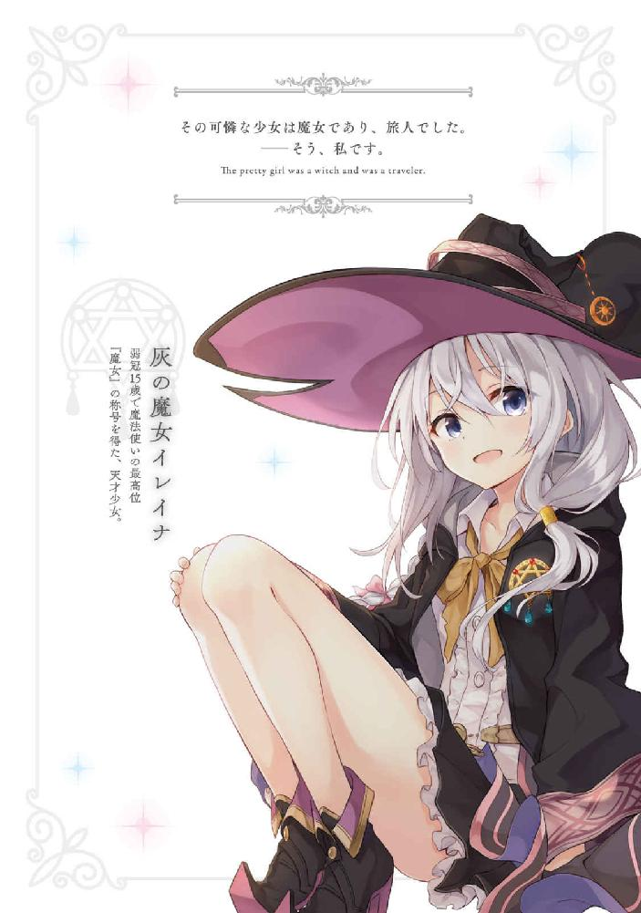
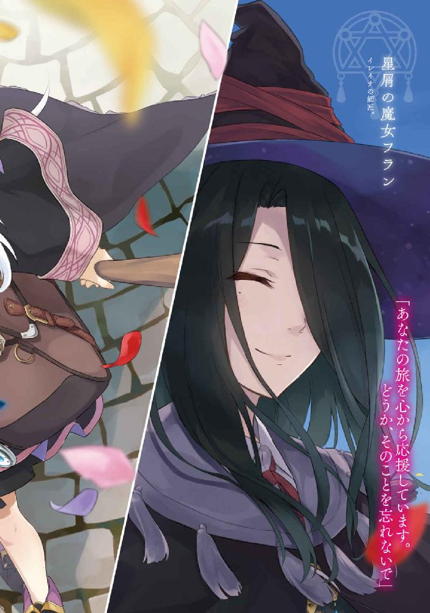
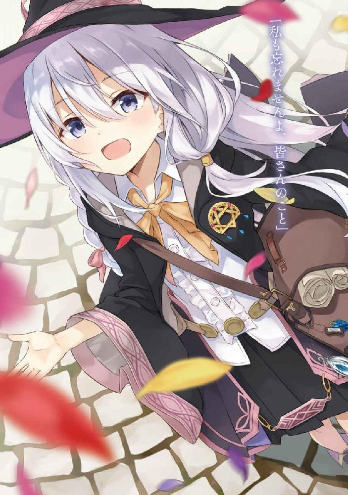
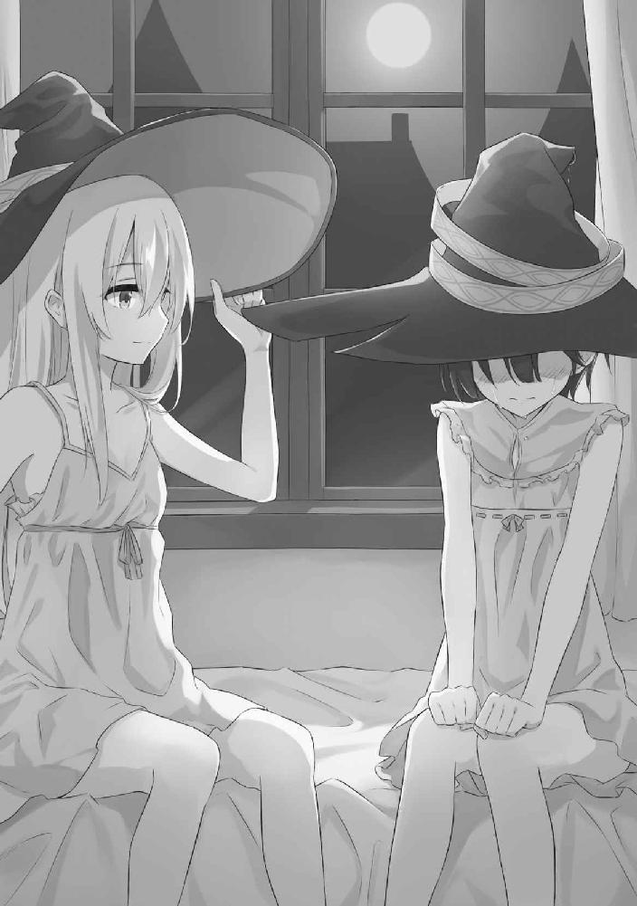
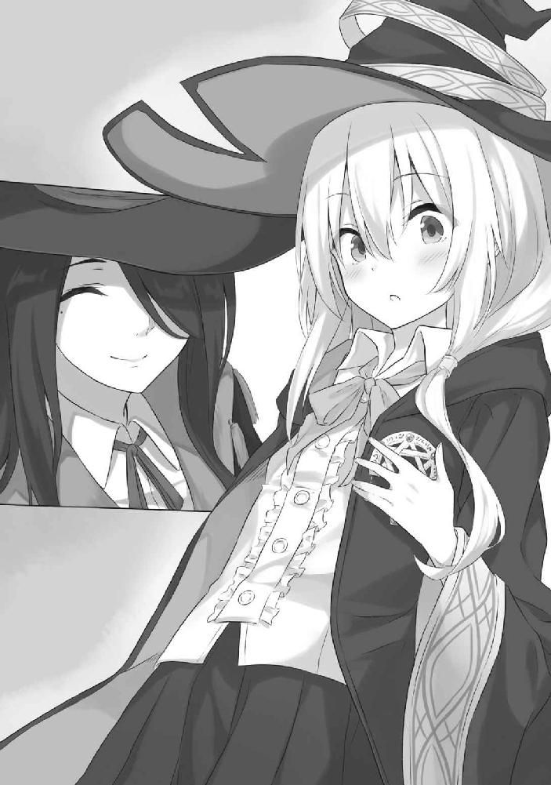
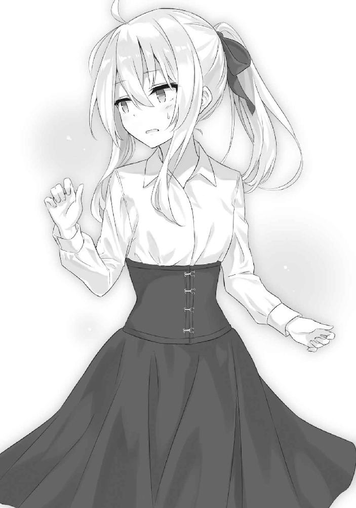
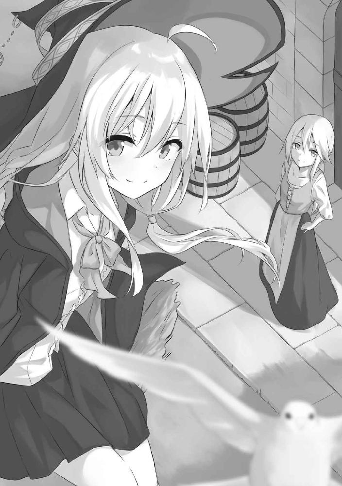
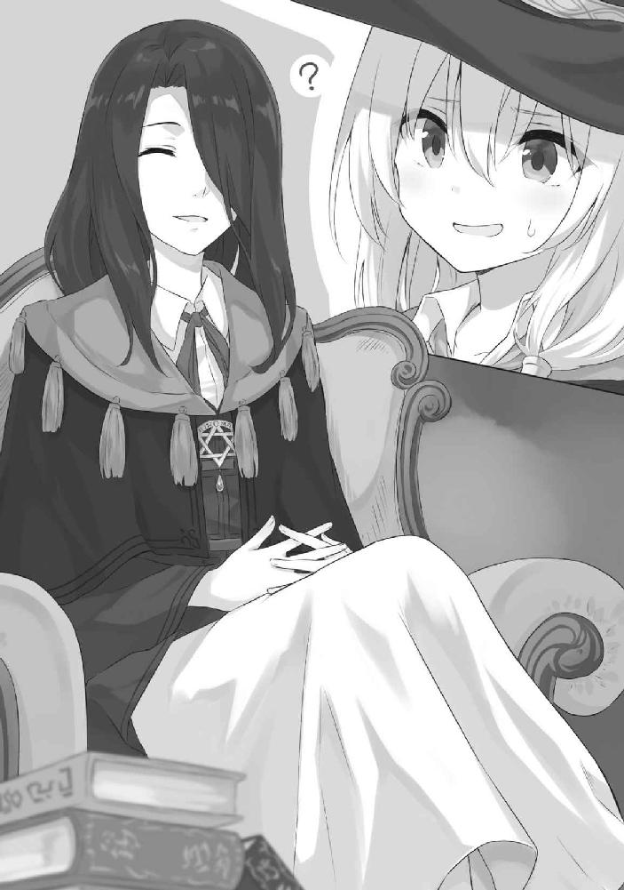

| 魔女の旅々 (GAノベル) | |
| 白石 定規 | |
| SBクリエイティブ株式会社 (2016) | |




魔女の旅々
白石定規

本書に掲載されているコンテンツの著作権等の知的財産権およびその他すべての権利は、ＳＢクリエイティブ株式会社または正当な権利を有する第三者に帰属します。
本書の内容を権利者の許諾なく複製・複写・翻案・放送・出版・データ配信（送信可能化を含む）などすることはできません。
カバー・口絵 本文イラスト
あずーる
殺伐とした山岳地帯に、その国はひっそりと存在していました。
高い壁が国を覆っているため、外側から中をうかがうことはできません。
太陽に照らされて熱を帯びた岩肌の上を一つのほうきが飛び、生暖かい空気を切って進みます。
ほうきを操るのは、一人の麗しい少女。黒のローブと三角帽子を身にまとい、灰色の髪は風に揺られていました。
そこに人がいたのなら間違いなく誰もが振り返り、ため息をこぼしてしまうほどの美貌を兼ね備えた彼女は一体、誰でしょう。
そう、私です。
あ、冗談ですよ。
「......もうすぐですね」
もともとは山だったものを削って作られたらしい高い壁。視線を少し下にずらすと、門が見えました。私はそこにほうきを向かわせます。
なんとまあ随分と厄介な場所にある国ですが、しかしこれは彼らなりの配慮なのでしょう──ついうっかり間違えて入ろうとしない為の。こんな場所にある国なんて、特別な事情がなければ絶対に来ようとしませんから。
門の前まで来たところで私はほうきを降りました。入国の審査を行う門兵さんが一人、出迎えてくれます。
彼は頭からつまさきまでゆっくりと見た後、私の胸元にあるブローチに視線を戻してから、にこやかな笑みを見せました。
「ようこそ。魔法使いの国へ。どうぞ中へお入りください、魔女様」
「？ あれ？ 魔法使いかどうかの審査はしなくて良いんですか？」
そのように聞いています。訪れた者は皆、門兵さんに魔法を見せなければいけない、と。そこで一定以上の能力がなければ、入国は許可されません。
「あなたが飛んでくるのを見ていましたから。それにそのブローチは紛うことなく魔女のもの。どうぞお入りください」
そうだった。そうでした。ほうきで満足に飛べることが入国の最低条件でしたね。思えば、この門からは私の軌跡、丸見えです。お恥ずかしい。
私は門兵さんに軽く会釈をしてから、大きな門をくぐりました。
ここは魔法使いの国。魔道士、魔女見習い、魔女──つまり、魔法使い以外は入国をお断りしているという奇妙なしきたりの国です。
門を越えた瞬間、私は首を傾げました。
へんな看板が二つ、並んでいたからです。
ほうきにまたがっている魔法使いが丸で包まれている看板が一つ。その隣には歩いている兵士が三角で囲われています。
なんでしょうか、この看板。
しかしその答えは、見上げれば直ぐに分かりました──所狭しとひしめき合っているレンガ造りの家たちの上、あるいは太陽の下を魔法使いが飛びまわっていたからです。
なるほど、と思いました。
それは魔法使いだけが入国を許される国ならではのルールなのでしょう。皆が空を飛びまわり、地上を歩く人などごく一握りのようです。
看板の意味を理解した私は、ほうきを取り出し、横座りになりました。そして地面を蹴り、ふわりと宙に浮きます。
看板の意味を簡潔に言い表すのなら。
「空を飛ぶことを推奨する、ですか──」
かくして、魔法使いの国は本当の姿を現しました。
枯れた大地のように広がる赤茶色の屋根たちの上を、魔法使いたちが漂っています。
ほうきを止めて談笑にふけるものもいれば、荷物をほうきにくくり付けている人、見るからに怪しげな魔女っぽい老婆、空を駆けて速さを競い合う子供達の姿まで。
彼らは空で生活しているのでしょう。
それはとっても素敵な光景でした。息を呑んでしまうほどに。
私は彼らに混じって、国の上を飛びました。ぼんやりと流れに身を任せていると、ふと屋根の上にくくり付けられた看板が目に入ります。『宿屋』だそうです。そのまま素通りすると、今度は『八百屋』の文字。その他に『肉屋』や『宝石店』まで。さすがは屋根の上で生活しているだけあります。屋根の上に看板を置くのが主流なのでしょう。
見れば、ほとんどの家の屋根に、人ひとりは通れそうな窓が埋め込まれています。ぼーっと眺めていると、ふいにその窓が開き、中から男の方がほうきに乗って飛び出してきました。つまりはそういうことらしいです。
私はただのんびりと、国の景観を堪能しながら飛び回っていました。
変化といえる変化が起きたのは、それからしばらく進んだ頃のことです。
「いやあああああああああああああああっ！」
背後から絶叫。
私はほうきを片手で支え、帽子が飛ばないようにおさえて振り返りました。
そして、『あ、遅かったな』と思いました。
「あああああああああああああああっ！」
隕石のようにとてつもない速さで絶叫と涙を撒き散らしながら私のほうへと一直線に飛んでいたらしいそれは、私が見たときには既に屋根一つぶんくらいの距離まで迫ってきていたのです。
避ける？ とんでもない。
反射的に上体を逸らしたものの、やはり激突は免れませんでした。「うぎゃ」とか「うげ」と可愛くない悲鳴をあげて、私とその人はもつれ合いながら屋根の上へと墜落しました。並べられていた瓦はべりべりばりばりと剝がれ、やがて私達は屋根から落ちる寸前で止まります。眼下に見える地面の上で瓦のひとつが弾けるのが見えました。歩行者がいなかったのは幸いです。
角度が浅かったのと、私が正面衝突を避けたこと、そして飛んできた謎の人物が瓦からの攻撃を一身に受け止めてくれたおかげで、私に怪我はありませんでした。
黒のローブにこびりついた赤茶色の破片を払いながら、私は立ち上がります。
「............」
「うごごごご......」
妙な呻き声をあげて目を回しているのは、私より少し年下に見える十代の女の子でした。黒色の髪は短く切り揃えられていて、中性的な顔立ち。服装は黒のマントの下に白のブラウスとチェックのスカート。私の下敷きとなっていたので、それらはものの見事にぼろぼろでした。
胸にブローチも何も付けていないので、恐らく魔道士でしょう。
「......あの、大丈夫ですか」
倒れている彼女の肩に触れると、彼女は目を開きました。
「............」
「............」
そして、沈黙。
どうやら状況が理解できていないようでしたので、「ほうきの操作、苦手なんですか？」と言ってやりました。
皮肉ですとも。ええ。
「......あ」
「ようやく頭がまともに働き出したようですね」私は笑顔を作ります。
「あわわわわ」彼女は再び目を回してしまいました。「ど、どどどどうしよう。どうしよう。ぼく、こんなにいっぱいの瓦、直せない......」
おや。
「その前に謝罪が先では？」
「あ、ご、ごめんなさい！ わざとじゃなかったんです！ 本当に！」
それは分かってます。
「ところであなた、大丈夫ですか？ ものすごく豪快に飛んできましたけれど」
「あ、ぼくは大丈夫です！ このとおりピンピンしてますから！」
と。
頭から赤い液体を流しながら、彼女は言いました。迷いなど一切見えない、澄んだ瞳をしていました。
............。
「血が出てますよ。しかも頭から」
「これは汗です！」
「そんな鉄臭い汗があってたまりますか」
「えっと、じゃあ、えっと......、汗です！」
「もう分かりましたから少し落ち着いてください」
「はい！」
「............」
なぜでしょうか。いきなり吹っ飛ばされたのもあって、すごく疲れました。
お説教をした後に瓦を直させるつもりでしたが、もういいです。ここまで危険な状態の子にそんなことをさせたら、私が鬼だと思われてしまいます。
私はポケットからハンカチを取り出しました。
「これ、あげます。頭に当ててください」
「えっ......でも」
「それと、私はこれから瓦の修理をしますから、その辺で少し休んでいてください」
「いえ、ぼくも手伝います！」
「その状態で手伝われても邪魔なだけです。休んでいてください」私はきっぱりと言いました。
「でも──」
「じゃ・ま・です」
「......はい」
そして捨て猫のようにしゅんとした彼女は屋根のてっぺんで座り、頭にハンカチを当てました。元気に見えてもやはり無理していたらしく、座った途端に彼女は倒れこんでしまいました。
彼女のことはひとまず後回しです。あの程度の怪我なら死にはしないでしょうし。
まずは、この惨状をなんとかしましょう──私は手に魔力を込めました。瞬間、ぼんやりとした光と共に、細長い杖が私の手に置かれます。
これは魔法使いの特権です。私達はあらゆるものを──たとえば杖やほうきのような魔法道具でも──魔法によって取り出すことができるのです。
杖に魔力を込め、私は魔法を発動させました。
時間逆転の魔法。
その名の通り、流れる時間を逆転させることで壊れた物などを修理したり、怪我を治したりできる、少しばかり高度な技術を要する魔法です。とはいえ、この国に住む魔女ならば誰でもできることでしょう。後ろで倒れている魔道士さんには難しいことでしょうけど。
魔法を浴びた直後、瓦は動き始めました。割れた瓦たちがそれぞれ繫がりながら、まるでパズルのピースのように元の形へと戻っていきます。
そして破片が消え、壊れた痕跡が完全に見えなくなったところで魔法の放出を止め、私は振り返りました。次は彼女の番ですから。
「さて、お次はあなたですよ」
「あの、えっと......」
身体を起こし、頭を抑えながらびくびくとしている彼女に近付き、私は魔法をかけました。柔らかい光に包まれ、彼女のぼろぼろになった服と怪我が治っていきます。
「うわあ......」
凄い、と呟くのが聞こえました。
いえ、魔女ともなればこれくらい普通にできるものなのですよ。
彼女が元の姿に戻ったのを確認してから、私は屋根に転がっていたほうきをそそくさと拾いに行きました。騒ぎが大きくなる前にここを去ったほうが得策と考えたのです。
「あ、あの！」
私は何か言いたそうな彼女を半ば無視するようなかたちでほうきに乗り、
「感謝なら結構です。ほうきで飛び回るときは周囲を確認しないと駄目ですよ？」
「待ってください、何かお詫びを──」
「いりません。私、急いでいるものですから。さようなら。名も知らぬ魔道士さん」
そしてほうきを飛ばしました。
○
魔道士とは、端的に言ってしまえば魔法が使える人間のこと。誰でもなれるわけではなく、ほとんどの場合が遺伝によって受け継がれます。私の両親も魔道士でした。
魔女見習いは魔道士の上位にあたり、魔女より一つ下。名前の通り、女性にのみ与えられる称号です。一体どういうわけか、魔法を生み出す能力は男性よりも女性のほうが強いのです。だから女性にのみ、魔道士より上の位が用意されたというわけですね。
魔女見習いになる道は一つ。試験に合格し、魔女見習いである証のコサージュを貰うこと。これしかありません。ただし、その試験が死ぬほど厳しいので、途中で諦めてしまう人が多いとか。
魔女見習いとなった後は、魔女に値する人物になるための修行が待っています。本物の魔女の下で、認めてもらえるまで努力の日々です。それが一日なのか、それとも十年なのか。全ては本人の努力と先生となる魔女様のさじ加減というものでしょう。
正式な魔女と認められれば、裏に名前が刻まれた星のブローチと、魔女としての名が先生より贈呈されます。私の場合は、『灰の魔女』という名でした。
長々と説明してしまいましたが、つまり私はこの国においては最高位である存在なのです。なにせ、魔女ですから。
空を飛びまわれば羨望の眼差しを向けられ、レストランに行けば「魔女様！ 当店の料理は全て割引させていただきます！ どうぞお好きなだけお食べください！」なんて言われるかなー、などと期待したものですが。
「え？ 割引？ ないよ、そんなの。もしかしてお金ないのかい？ お嬢ちゃん」
「............」
まあ、アレですよね。いちいち魔女を優遇していたら店が回らなくなるからですよね。
レストランを出た私は、次に宝石屋にいきました。前回訪れた国で手に入れた宝石を売りたかったのです。結構な値段になるだろうなと思いながら、お店に入りました。
「あー、こりゃ真っ赤な偽物だねぇ。値段なんて付けられないよ」
「そんな馬鹿なことありますか。もっとよく見てください」
「何度見ても同じだねぇ。どうする？ いらないなら、うちで処分するよ？」
「......そんなこと言って、本当は私から奪い取る魂胆なのでしょう？」
「嫌だなぁ、お嬢ちゃん。そんなことするわけないじゃないかぁ。で、どうする？」
「返してください」
宝石屋から出てきた私はとっても怒っていたはずです。
まあでも、きっとあの宝石屋の店主が小悪党なだけで、別に私が侮られているわけではないですよね？ そうですよね？
不安な気持ちを抱えながら、私は宿屋へと向かいました。もうすぐ日が暮れる頃でしたから。
しかし。
「ああん？ ここはあんたみたいなガキが来るところじゃないよ。さあ、帰った帰った」
......ううーん？
なにゆえ？
もしかしてリッチな大人しか入れない宿屋だったのでしょうか？ むむむ。
仕方がありません。別の店にしましょう。
私はいかにも安そうなぼろぼろの看板を立てた宿屋の上にほうきを降ろしました。ここならさすがに大丈夫ですよね。
私は屋根に付けられた窓を開き、中へと伸びている梯子を下りました。しかし途中で面倒になったので、ジャンプ。どしん、とまるで鉄球が落ちたかのような音が響きました。私はそんなに重くありませんよ。失礼な。
降り立った場所は受付になっていました。
カウンターに座っている女性が、私を見て──
「いらっしゃいま......」
硬直。
彼女も、そして私も。
短く切り揃えられた黒い髪。どこか男の子のようにも見える中性的な顔立ち。そこにいたのは、つい数時間前に私と衝突（物理的な意味合いで）した女の子だったのです。
「............」
「............」
凍った時間から先に開放されたのは彼女のほうでした。
「ひ、ひいいいいいいいいいいっ！ ごごごごごごめんなさい！ ごめんなさい！ 報復ですか？ 報復ですね！ ごめんなさい！ 命だけは！ 命だけはぁ！」
「いえ、あの」
「うわあああああああん！ 死にたくないよおおおおおおお！」
「えっと......」
そこまで怯えなくても。
カウンターに頭をこすりつけながら「どうか命だけはぁ......」と泣きじゃくる彼女の肩に、私はそっと触れました。
「ひいいいいっ！ 肩から先をもぎ取るつもりですかぁあああ！ 嫌ああああっ！」
「ちょっと黙ってください」あ、違う、そうじゃなくて。「えっと、大丈夫ですよ？ 私、今日はここに泊まりに来ただけですから」
「嫌ああああ──あ、なんだ。そうだったんですか。じゃあこの用紙の記入お願いしまーす」
「............」
色々と言ってやりたいことがありましたが、しかし我慢。また騒がれてはたまりません。
私は彼女に差し出された用紙を受け取り、カウンターに立てられていた羽ペンを引き抜きました。用紙の記入欄はいたって単純で、人数や宿泊日数、代表者の名前を書くだけです。旅人であるゆえ、もはや見慣れた紙きれでした。
私が羽ペンを紙の上で滑らせていると、彼女は実に明るい声で言いました。
「昼間は本当にごめんなさい。練習中に考え事をしてたら、なんだか上手くほうきが操れなくなっちゃって......」
「なるほど」
つまりほうきの操作が下手くそということですね。
「本当はきちんとお礼したかったんですけど、すぐにどこかへ行っちゃうし──あ、お名前、イレイナっていうんですね。ぼく、サヤです」と彼女は私の手元を覗き込んで、にこやかに笑いました。
私は書きながら、
「別にお礼なんて良いですよ。それに、魔法の練習中に他人を巻き込むことなんて、よくある話ですから」
と言いました。
思えば私も、蠟燭に火を灯すつもりが家に火をつけてしまって両親にこっぴどく叱られたことがありましたね。いやあ、懐かしい。
「でも、ぼくに何かさせてもらえませんか？ あんなに迷惑かけて、更には怪我まで治してもらったのに何もしないなんて酷い話ですよ」
「別に良いんですけど......」
「そこをなんとか！ お願いします！ イレイナさん！」
お礼をさせろとせがむ女の子に、首を振る私。なんだか珍妙な光景でした。
まあ別に厄介ごとを頼まれているわけでもありませんから、無理して拒む必要もないでしょう。私は書きながら少しだけ考えて、
「うーん......そうですね、じゃあ──」
宿泊の割引でもしてもらいましょうか。
と言いかけて、やめました。
用紙のある項目が目に止まったからです。こう書かれていました──魔女様専用割引（一泊半額）と。
ほうほう。これはこれは。
「あ、それ、魔女様じゃないと割引対象外ですよ。魔法使いの方は通常のお値段のほうに丸つけてくださいな」彼女は眉をひそめて言いました。
「なるほど」
私は魔女様専用割引（半額）のほうに丸をしました。
「えっ？ いや、あの......、んんー？」
なんですかその微妙な反応は。失礼な。
「私は魔女ですが」
「そんなぁ。ご冗談を......。あ、いや、でもぼく、あなたに迷惑かけましたし......うん！ じゃあ割引の対象にさせてもらいますね！」
と彼女はぽん、と手を叩きました。なんだか会話が微妙にずれているというか、妙な違和感を覚えた私は、首を振ります。
「いえいえいえいえ、じゃなくて。だから私、魔女なんですってば。こんな身なりですけど」
「ええー？」
彼女は言いました。
私の胸元を指して。
「でも、魔女様のブローチ、ないですよ」
「えっ？」
私は釣られて自らの胸元に目を落としました。
そこにあるはずのブローチは消えていました。
○
魔女のブローチは、いわば身分証明書。あれがなければ、私はただ魔法が使えるだけの旅人です。
だから先ほどの宿屋でもただの子供扱いされていたというわけですね。なるほどなるほど。
というか、なぜ今の今まで気づかなかったのでしょうか。魔女が珍しくないとはいえ、少しでも疑問に思っていればもっと早く動けたのに。私は馬鹿なのでしょうか？ 馬鹿なのですね？ 死んでしまえ。
などと自らを呪い罵りながら、すぐに探しに出たのですが。
「......ない」
ありませんでした。
サヤさんと激突した拍子に落ちたのだろうと踏んで探索しましたが、外はもうすっかり暗かったし、何より、探し物は手のひらに収まる程度の小さいブローチ。ちょっと歩き回ったくらいで見つかるはずがありません。
「......うう」
瓦の隙間まで見ながら屋根の上をじぐざぐに歩いた後に、地面に降りて家の周辺をぐるぐる。
しかしやはり見つかりませんでした。泣きそう。
「駄目でしたー！ イレイナさん、やっぱりこっちにもないですよー！」
屋根の上から十分すぎる声量が落ちてきて、路地に響きました。見上げると、月明かりに照らされたサヤさんの姿。
ブローチの紛失が発覚した直後に「ぼくにも責任があるから着いて行きます！」と言って聞かなかったので、一緒に探してもらっているのです。
お店のほうは別の人に任せたとか何とか。
私が下を歩いている間、彼女には上を担当してもらいました。もしかしたら私が見落としている可能性がありましたから。
結果は同じだったようですけど。
私はほうきで屋根まで浮きました。
「これだけ探してもないということは、誰かに拾われたという可能性も考えないといけませんね......」
思わずため息がこぼれてしまいます。
「外が暗いから見つけづらいっていうのもあると思いますよ。明日の朝、もう一度ここを探したら良いんじゃないですかね」
肩を落とす私に、彼女は明るい声をかけてくれました。少し、ありがたいです。
「そうします......」
彼女の助言に素直に頷いた私は、引き返すことにしました。
私はほうきを飛ばします。ふらふらと浮遊しながら、ほうきの操作が下手くそな魔法使いみたいに。ああ、誰かが近くを飛んでいたら、ついうっかり激突してしまいそう。
あのブローチは苦労して手に入れたものですし、先生と私の思い出でもあります。なくしたショックは計り知れません。
魔女になったばかりの頃なら、なくした直後に気づきそうなものなのに。
二年もの間、ずっと身に着けていたものですから、私の傍にあることが当たり前になりすぎていたのでしょう。
「......はあ」
とにかく落ち込む私でした。
それから宿屋に戻った私は半ば朦朧とした状態で夕食を食べ、サヤさんから貰った鍵で、部屋に入り、そういえば風呂に入っていないことを思い出し、すぐに大浴場へ向かいました。
ぼんやりとしながらお湯に浸かり、ああやっぱり落としたのはサヤさんと激突した辺りしか考えられないなぁでもなかったなぁ不思議だなぁなんて頭を巡らせ、小一時間。のぼせる寸前まで大浴場（私一人でした）に居座り、お湯に蕩けてしまいそうになった辺りで重い腰を上げました。
そして。
「あ、どもー」
部屋に戻ると、なぜかサヤさんの姿。
私は扉を閉じました。
一歩下がって、部屋番号の確認。うーん、確かに鍵に書いてある番号と一致してますね。おかしいなぁ。
もしかして、見間違い？
私は再び扉を開けました。
「あ、どもー」
悪い夢なら良かったのですが、しかし私の部屋にサヤさんの姿は確かにありました。硬いベッドの上から呑気に手を振ってさえいます。
............。
「......私の部屋で何を？」私は後ろ手で扉を閉めました。
「ちょっとイレイナさんとお話がしたいなーと思って、待ってたんです」
「鍵をかけていたはずですが」
「ふふん、ぼくはこの宿屋で働いてるんですよ？」
と、彼女は得意げにいくつもの鍵が束ねられた輪っかを見せびらかしてきました。
私は黙って彼女の下へと歩み、
「............」
両手で彼女のほっぺたをつまみました。
「い、いひゃい！ いひゃいです！」
「勝手に人の部屋に入り込むとはどういう了見ですか。ええ？」
ぐりぐりぐりぐり。
「ひひれひゃふ！ ほっへははひひれる！」ちぎれちゃう、ほっぺたがちぎれる。と言いたいようです。
「え？ 何ですか？ 聞こえません」
「あわわわわわわ......」
それからしばらく彼女の柔らかいほっぺたを引っ張ったりねじったりして遊び尽くした後、飽きた私は彼女を解放してあげました。ほんのり朱に染まった頰を両手で包みながら「ひどい......」と言っていますが、ひどいのは果たしてどちらでしょう。
「で、何の用ですか？ わざわざ私の部屋で待ち伏せしていたということは、何かしらの用があったということですよね？」
サヤさんは頰をさすりながら、
「イレイナさんって、本当に魔女なんですよね？」
「ええ。まあ」と私は首肯します。「ブローチはありませんが、確かに魔女ですよ」
「じゃあ、魔女見習いの試験も合格したってことですよね？」
「そうですね」
あっさり合格してしまって拍子抜けしたのを今でも憶えています。
サヤさんはしばらく私をじっと見つめていたかと思うと、突然ベッドから降り、床の上で足を畳み、そして、両手を床に添えて額を地面に擦り付けました。
「お願いします！ どうかぼくに試験の極意を教えてくださいませ！」
「......あの、なんですかその姿勢」
「これはぼくの故郷に伝わる伝統文化、土下座です！ 相手に対してとても申し訳ないことをしたときに使う必殺技です」
妙な伝統文化ですね......、彼女の故郷では他人に対して謝ることがそこまで多かったのでしょうか。しかし、誠意は確かに感じられます。
なんだか、こう......ぞくぞくするというか、何と言うか、不思議な感覚がしました。頭を踏みつけながら「ああーん？ 人に物を頼む態度がその程度かぁー？」と言ってやりたくなるのを堪えて、私は跪きました。
「あの、とりあえず頭を上げてください」
「良いんですか！」ばっと彼女は顔を上げました。
「いえ、そこまでは」私は言います。「でも、まずは事情を話してくれませんか」
話はそれからです。
彼女を再びベッドに座らせた私は、デスクから安そうな椅子を引っ張り出し、対面になるように座りました。サヤさんは黒い髪を微かに揺らして首を傾げ、遠慮がちに「えっと......」と口を開きました。
「ぼくには妹がいるんです。とっても可愛い妹が」
「はあ......」
なんだか意味不明な導入の仕方ですが、まあ、聞きましょう。
「ぼく達は東国の出身なんです。妹と二人で魔女見習いになるためにこの国まで遥々やって来たんですよ──ぼく達の故郷には、試験を行っている組織がありませんでしたから。だから二人でこの宿屋で働いてお金を稼ぎながら、試験を受けるという生活をここ数年続けていたんですけど......」
「お二人とも未だに魔道士のままというわけですか」
すると彼女は目を伏せ、ゆるりと首を振りました。
「妹だけ前回の試験で受かっちゃいました。そしてあの子だけ先に帰りました」
「......ふむ」
なるほどなるほど。なんだか話が見えてきたような気がします。
つまり。
「その可愛い妹さんに先を越されて焦っているから、たまたま知り合った魔女に助けてもらおう、と。そういうことですね？」
サヤさんは気まずそうに頰をかいてから、「えっと、まあ......、そうなります、かね」と呟きました。
「次の試験はいつですか？」
「一週間後です......、もう時間ないです......」
まあ、魔女見習いへの昇格試験は何度でも受けられますから、焦る必要はないと思いますが。
それほどまでに妹さんと会いたいということなのでしょうか。
「............」沈黙を置いて、私は言います。「私がブローチを見つけるまでの間なら良いですけど」
どうせブローチが見つからない間は国を出られないし、その間暇だし、もしかしたら宿代を無料にしてくれたりするかもしれないから、良いかなと思ったんです。
○
魔女見習いへの昇格は、筆記試験を合格した後に魔術試験に合格することで完遂されます。
筆記試験は魔法理論や歴史などを頭に叩き込めば簡単にできますから、はっきり言って楽なことこの上ないのです。しかし魔術試験。これはどうにもなりません。実力が備わっていなければ何度もやり直しです。
魔術試験の内容は、ほうきによる浮遊、攻撃魔法の操作の二つが主に見られ、試験に合格できるのは、毎回決まって一人のみ。今から一週間後に行われる試験でもそれは変わらないことでしょう。ほうきで延々と飛びまわり続け、互いに死なない程度に攻撃し合いながら敵を葬り、最後に勝ち残った人が合格。晴れて魔女見習いです。
その争いの醜さといったら本当に酷いものです。人間の一番汚い部分をまざまざと見せ付けられている気分になります。
もう二度と受けたくありません。
「はっきり言いましょう、サヤさん。今のあなたの実力で真面目に戦っても、他の連中に勝てる確率は限りなくゼロに近いです」
彼女と約束をした翌日の早朝。
私はほうきの上から、彼女に言いました。
「しかし他の連中に絶対に勝てないというわけではありません。安心してください」
「ど、どうすればいいんでしょうか！」早朝だというのに元気なもので、彼女はきらきらと目を輝かせていました。まるでついさっき目覚めたばかりの太陽のよう。
私は屋根瓦の上でひざを曲げて座っている彼女のもとにほうきを寄せて、
「まずはほうきの操作を私と同等あるいはそれ以上までできるようになってもらいます」
「ええー。それはちょっと厳しいですよ......」と彼女は渋い顔をつくりました。
何が厳しいですか。甘ったれるなぁ。
「それ以外に魔術試験で生き残る方法はありませんよ。というか、多分、今のあなたが行っても開幕と直後にほうきから落とされて終わりです。それだけは避けないと」
「ぐぬぬ......」
といった感じで。
私はまず彼女の基礎的な魔法技能から向上させることにしました。やはり私が想像した通り、まともに飛べないくらいに下手（魔法使いと呼称していいのか迷うほどに）だったので、とてもとても苦労させられました。
ああ、子供にほうきでの飛び方を教える母親って、こんな気分なんだなぁ、なんてしみじみしながら、朝から晩まで、時間の許す限り特訓しました。空を自由に飛びまわっている子供達から指差されて馬鹿にされようとも、大人達に嘲笑されても、私達は特訓に励みました。
当然、ブローチの探索も忘れてはいません。彼女が徐々に成果を上げるのに反して、こちらは全く進展しませんでしたけど。
私のブローチ、どこに行ったんでしょう。本当に。
「次は旋回です。体重を上手く移動させて鮮やかに曲がってください」
「はい！」
「次は急制動、急発進です。身体全体を使ってほうきを強引に止めた後、空気を蹴るような感じで吹っ飛んでください」
「はい！」
「次は空中離脱です。空中でほうきを手放した後に、魔法でほうきを呼び寄せてください。危なくなったら私が助けに行きますから、安心して飛んでいいですよ」
「はい！」
「次は──」以下略。
結局、サヤさんはあっという間に私と同じ程度にはほうきを操作できるようになってしまいました。ここまでできるようになるのに何日経ったのかといえば、たったの二日。
サヤさんのすさまじい成長ぶりに若干引きました。一体今まで何をやっていたのかと。もしくは私の教え方がとてもとても上手いからなのでしょうか。
聞いてみたところ、「今まで独学だったものですから」と恥ずかしそうに彼女は言っていました。なんだそりゃ。
そしてこの国に滞在して四日目──特訓、三日目。
相変わらず進展のないブローチ探索（単なる聞き込み調査）に反して、サヤさんの特訓のほうは清々しいほどに順調でした。
彼女はまだまだ上に行けそうな気がします。
「次は攻撃魔法も覚えてみましょう──風魔法とかどうですか？」
「風魔法？」
赤茶色に焦げた屋根の上、首を傾ける彼女に、私は一度頷いてから言います。
「ええ、風です。空気の流れを操作して、他の参加者の邪魔をするんです」
これは私が魔術試験で実際にやった小汚い手法です。案外、空気の流れを変えるだけでも効果があるもので、バランスを崩して転落する人やよろけて建物にぶつかる人がいたことを今でも憶えています。
風の操作は簡単にできますし、強力な武器となるのです。時間が余っているのなら、是非とも覚えてもらいましょう。
「では、向こうに置かれた瓶に風を当ててください」
屋根の天辺、私達の対岸に置かれた瓶を指差しました。ここからだとそのまま家一軒ぶんの距離はありますが、決して難しくないはずです。
「空気を丸めてぶつけるようなイメージですると上手くいきますよ──こんな感じに」
私は杖を振るいました。
瞬間、強風が瓶をかすめ、がたがたと頭を揺らしました。
倒せてないじゃないですか。失敗ですか？ みたいな顔をサヤさんが向けてきましたけど、あれはわざとやったのです。本当ですよ？
「では、やってみてください」
「......こ、こうですか」
びゅん、とサヤさんは杖を振るいます。風魔法自体は最初の頃に教えられる魔法ですので、風を生み出すこと自体はできていました。が、彼女の生み出した風は瓶の上を通り過ぎて行きます。
惜しい。
「杖の持ち方が違いますよ。それと、指示の仕方も。風魔法はもっと繊細なものですから、強引に振っても上手くいきません」
「えっと、じゃあ、こうですか？」
びゅん。風は通り過ぎていきます。
まるで変わっていません。
「違います。こう」
私が杖を振るうと、瓶がかたかたと揺れました。私がわざと瓶を倒さないでいることにようやく気付いたらしく、サヤさんは「わあ」と声を漏らしていました。
そして、彼女がやさしく杖を握りなおします。
「えい」
今度は完全に私の見様見真似でしたが、弱すぎます。そよ風が吹きました。
......上手くいきません。
「違います。こうです」
「こうですか？」
空振りでした。
「全然違います。こうです」
「こ、こうでしょうか！」
風はかすりもしません。
「全くもってまるで駄目です。こうですよ、こう」
「こんな感じでしょうか！」
............。
全然駄目です。本当に。まるで手ごたえが感じられません。
強硬手段に出るとしましょう。私は彼女の背後に回りこみ、両手首を摑みました。一瞬、びくっと肩を震わせたサヤさんに、耳元で声をかけます。
「良いですか？ 今から私があなたの杖を経由して風魔法を飛ばします。それを身体で覚えてください」
「か、身体でですか！」
「ええ。身体で、です」
なぜか耳を真っ赤にしている彼女に私は頷きました。
「じゃあ、行きますよ──」
と。
そんな感じに。私達の三日目は日が暮れるまでずっと練習でした。彼女が風魔法を完全に操作できるようになったかといえば、まるで駄目でした。
むしろ私が背後に回ってからのほうが下手になったような......？
なぜでしょうか。分かりません。
私はずっとサヤさんに付きっ切りというわけではありません。お昼どきになれば、私も一人で行動します。ブローチ探しのために街中を飛びまわり、色々な人にお話を聞いたりしているのです。
やることといえば地道にひたすら聞き込み、次いで聞き込み。
当然、そうそう簡単に情報など見つかるわけもなく、皆が口を揃えて「知らない」と首を振る始末。
進展が訪れたのはサヤさんの先生になった日から四日目のこと。つまりこの国に滞在して五日目です。
「見たわねぇ」
と、朗らかに言ったのは、いかにも魔法に熟練してそうなおば様でした。見ると胸には星をかたどったブローチをしています。しかも相当な年季が入っているらしく、ものの見事にぼろぼろです。
おお、これは期待できそう（何を？）です。
「ど、どこで見たんですか！」
食らいつく私に、謎のおば様はヒッヒッヒッといかにも魔女らしい笑い声をあげました。
「さて、どこで見たかねぇ......」
「教えてください！ 素敵なおば様」
「ヒッヒッヒ」
ずい、とおば様は手の平をこちらに見せ付けてきました。
「......なんですか、その手」
「幾ら払うんだい？ ん？」
と、手を私に差し出した状態でおば様は静止してしまいました。続きを聞きたければ払え、とのことらしいです。
......汚い。さすが魔女。
「............」
静かに財布から金貨一枚を取り出し、おば様の手に落としました。するとおば様は、ねじが巻かれた人形のように再起動。
「私が見たのはね──」
おば様は、語りました。薄々、私自身もどこかで感じていたことを。
ゆるやかな物語の終わりは、こうしてあっさりと告げられたのです。
○
夜。滞在五日目と六日目の間。
ベッドの中から窓の外に浮かぶ月を眺めていると、ふいに扉が開かれました。見ると、彼女が恐る恐るといった様子でこちらを見つめています。
彼女──サヤさん。
「あの、イレイナさん」
「なんでしょう」
「い、一緒に寝ても良いですか？」
私はベッドに目を落としました。
............。
「狭いですよ？」
「うちが安宿でどうもすみません」
あ、いえ、そういう意味で言ったわけではないんですけど。ここ、一人部屋ですし。このベッドも一人で寝ることを想定されてますし。
「まあ、窮屈な思いも厭わないと言うのなら、別に良いですけど」
「やった！」
サヤさんは荒っぽく扉を閉じて中に入ると、ベッドに潜り込んできました。
風呂上がりの甘く柔らかい香りが漂います。宿屋ですから同じ洗髪剤を使っているはずなのですが、私の匂いとはまるで違うように感じます。髪をつまんで鼻に寄せても、私の髪からは恋する乙女のような香りはしませんでした。彼女だけ良い香りがするのは、一体なぜ？
まあ、いいや。
私も横になるとしましょう。
月のほうに顔を向けたまま身体を倒し、シーツを被せました。すぐ後ろに人の気配。
「寝ながら月を見ていると眩しくありません？」
「ちょっとだけ」と私は身体を反転させました。
すると、彼女と目が合います。
「......言動が矛盾してませんか」
「ぼくは別に眩しくないからいいんです」
と彼女は微かに笑います。月に照らされたその笑顔は、どこか儚げで、触れたら壊れてしまいそうでした。
「今日はお疲れさまでした。最初に比べて随分と上達しましたね。もう私の助けなんていらないくらいに」
「えっ、そんなことないですよ。ぼく、まだイレイナさんに教えてもらいたいこと、沢山あるんですから」
「......私は旅人です。じきにこの国を離れますよ」
「でも、それまではずっと一緒ですから」
布団の中がもぞもぞと蠢いたかと思うと、私の手にひんやりとしたものが重なりました。サヤさんが私の手を握っているのです。
彼女は私を真っ直ぐに見つめて、言いました。
「もっといっぱい、ぼくに教えてください」
「............」
瞳の奥で、月の光が揺らいでいました。
この無邪気な女の子は、私のような人間を本気で慕ってくれていたのでしょう。しかし私は、これから彼女にとって残酷なことを──私にとって最善の選択をしなければなりません。
胸がちくりと痛むのは、罪悪感からなのか、それとも失望からなのか。前者だと信じたいところです。
「無理な相談ですよ、サヤさん」
私は、言いました。
重ねた手を、振り払いながら。
「ブローチ、返してもらえませんか」
○
一見して複雑なように思えたブローチ消失の真相は、なんともあっさりとしたものでした。
「あんたとぶつかった女の子がおっただろ？ あんたが急いで飛んで行っちまった後、その子が拾ってたよ」
金貨を艶々とした顔で眺めるおば様は、言ったのです。それは私自身もどこかで思っていたことではありました。これだけ探し回っても見つからないのなら、誰かが拾ったのだろうと。
違和感は最初からあったのです。
............。
サヤさん。
あなたはあまりにもほうきの操作が下手すぎた──まるでわざと下手に飛んでいるんじゃないかと思いたくなるくらいに。
この国に入る最低条件は、ほうきで満足に飛べることだというのに。
最初はサヤさんがこの国の出身なのかと思ったのですが、話を聞いてみたら、東国からわざわざやって来た魔法使いだと言っていましたし。それなら尚更、ほうきで飛べないとおかしいんです。だから──。
だから本当は。私は。
最初からあなたのことを疑っていたんですよ。そして、ずっと待っていた。あなたが私にブローチを返してくれることを。
「けれど、あなたは手の中に隠したまま渡してくれなかった。それどころか、ずっと一緒にいて欲しいなんて言い出す始末です」
もう、ここまでが限界です──と私は言いました。
ベッドの上に座り俯いている彼女は、一体どんな表情をしているでしょうか。初めて会ったときのように肩に触れてあげるなんてことはしませんでした。生憎、そこまで優しい人間でもないんですよ、私。
ただ、私は彼女を待ち続けました。月の光を避けるように俯く彼女を。
それから一体どれほどの時間が経過したことでしょう。一分か、十分か。もしかしたら十秒ほどだったのかもしれません。
「......ですか」
微かに聞こえたのはほんの小さな声。
「何ですか？」
「どうして、ぼくを問い詰めなかったんですか」今度ははっきりと、そう聞こえました。
「確証がなかったから、というのが一番の理由ですね。証拠もないのに『あなたが犯人だー！』なんて言っても、白を切られたらそこでおしまいですし」
「............」
「それに、あなたはいつか返してくれると信じていましたから。私にはサヤさんが悪い人にはどうしても見えないんですよ」
まるで母親に甘える子供のよう。
私の目には、無邪気にはしゃぐ彼女がそのように映っていました。
「だから、ずっと待っていました」
と、私は言いました。
そこで彼女はようやく顔をあげます。涙でしわくちゃになって綺麗な顔が台無しです。サヤさんは瞳を拭い、嗚咽を漏らしながら、
「寂しかったんです」
「私はあなたの妹ではありませんよ」
「分かってます。分かってます、けど......、い、一緒にいたかったんです」
今にも消え入りそうな声。それは彼女の妹に対してなのか、それとも私に対してなのか。
出会って間もない私がサヤさんの何を知っているのかと言えば、殆ど何も知らないに等しいのですが、しかし彼女がどのような人間なのかは、何となく察しがつきました。
可愛い妹さんにいつも甘えている駄目なお姉さん。きっと、彼女はずっとそうだったのでしょう。
だから妹さんに置いて行かれて、耐えられなかった。
「一人ぼっちが嫌で嫌で、怖くて、だからぼくは──」
「えい」
彼女の額を指を弾きました。こつん、と固い音が響きます。
「それは理由になりません」
一人になるのが嫌だから、誰かに依存して。あいつは一人ぼっちだとあざ笑われるのが嫌だから、必死になって馴れ合う相手を探して。孤独が怖いから、必死に逃げ回る。
本当に、忌むべき習性だと私は思います。
「一人ぼっちが何ですか。孤独が何ですか。そんなものを恐れて魔女見習いになれますか。本当に本気で何かを成し遂げるとき、人はいつだって孤独です。一人じゃなければ駄目なんですよ。馴れ合ったら終わりなんです」
妹さんもそれを伝えたくてサヤさんを置いて行ったのではないでしょうか。本当のことは知りませんけど。
「......でも」
「あーあーあーあー。ききたくありませーん。あなたの言い訳なんて私の耳には届きませーん」
私は両手で耳をふさぎ、左右に首を振りました。ぶんぶん、といったかんじに。髪が物凄い勢いで揺れ、彼女の顔に当たりました。
あ、今ちょっとイラっとしましたね。
「きっと、一人で戦うのは辛いでしょう。怖いでしょう。それは私にも分かります。だから──」
言いながら、私は魔法で三角帽子を取り出しました。私が使っているものと全く同じ形のものです。
それを彼女の頭に被せました。
「だから、これをあげます。一人でも大丈夫なように、私の分身をあなたの傍に置かせてください」
サヤさんはぎゅっと帽子のツバを握り締めながら、
「でも、これを貰っちゃったらイレイナさんのが......」
「あ、大丈夫です。それ予備なので」
私は魔法でもう一つの帽子を取り出してみせました。全く同じ帽子を、私も被ります。
「これでお揃いです。あなたはこれから一人になります。でも、独りではありませんから。いつだって、私やあなたの妹さんは、あなたのことを見守っているんですよ」
だからブローチを返してください──私は諭すように、言いました。
帽子を深く深く被って、ツバを固く固く握り締めて、肩を震わせながら、彼女は静かに頷きます。
その姿はあまりにも儚くて、か弱くて。
私は、彼女の細い肩を抱き寄せていました。

その日。
私達は二人で最後の夜を過ごしました。わんわん泣く彼女をなだめたり、魔術試験の突破方法をあれこれ伝授したり、彼女と妹さんの出身の国のことを聞いたり、私の今までの旅の話をしてあげたり、その他色々。
あ、そういえばサヤさん、本当は結構強い魔法使いらしいです。まあ、知ってましたけど。しかし、ではなぜ風魔法を扱うときだけ徐々に下手になっていったのでしょうか。それに関してはいくら聞いても、顔を真っ赤にするだけで答えてくれませんでした。なんだそりゃ。
結局、太陽が昇り始めた頃に、私達は眠りに落ちました。長い長い、夜でした。
けれど、大事な思い出です。
○
魔法使いの国から去って何ヶ月が過ぎたのか考えてみました。
およそ、六ヶ月。
彼女との出会いから、ブローチを返してもらってから、半年も過ぎ去ってしまったようです──いや、時間の流れというものは早いものです。本当に。
よもや「え？ 魔法使いの国？ どこそこ」と言われるほどに遠く離れた国まで来てしまっていました。
そんな旅先で彼女のことを思い出したのは、たまたま入った書店で、彼女の名前を見かけたからです。
『今回の魔女見習い昇格試験合格者一覧』
なんて安っぽい藁半紙の束に印字されていたのは、魔女見習いの昇格試験などを執り行う魔法統括協会という謎の組織が毎月出している新聞でした。全世界で行われている昇格試験の結果と、合格者のコメントなどが一面を飾っています。
そこに、彼女の名前もありました。
「こら、立ち読みをするんじゃない」中から出てきた店主さんに新聞紙を取り上げられました。
「......ああー」
続きが読みたかったのに。
「読みたきゃ買いな」
「幾らですか？」
「銅貨一枚」
払いました。
そして。
新聞を小脇に抱え、鼻歌を歌いながら宿へと舞い戻った私は、窓辺まで椅子を引きずり、続きを読みました。
綴られていたのは、彼女の苦悩の日々と、将来への希望でした。
数年前に魔法使いの国に妹と二人で来たこと。妹だけあっさり魔女見習いになって故郷へと帰ってしまったこと。ある旅人と出会い、その人に一人で戦う勇気と素敵な帽子を貰ったこと。その旅人が去った後も何度か挑戦したけど、全く駄目だったこと。それでも諦めずに努力を続けて、ようやく魔女見習いになれた、と。これから故郷へ帰り、魔女になるために修練を積む予定であること。
私は思わず、頰を緩めてしまいました。
長々と綴られた彼女の物語は、この一言で締めくくられていたのです。
「故郷に帰って一人前になったら、大好きな旅人さんに会いに行きます」
新聞紙を机に置き、私は空を見上げました。どこまでも澄んでいる淡い青の空が、ずっと遠くまで続いていました。
その向こうに、彼女はいるのでしょうか。
「旅をしながら気長に待っていますよ──サヤさん」
春とも夏ともいえない、中途半端な季節のことでした。
乾ききった涼しい空気を切りながら、私は広葉樹の森の中を飛びました。その森はかなりの広さがあるようで、いつまで経っても終わりは見えません。
狭い狭い道の中、視界を遮る木々を避けるためにほうきを右へ左へと揺らすたび、枝がこすれ合い、ざわつきます。
そこから空は見えませんでした。ほんの微かに、緑の網目の向こうに眩しい何かが見える程度のもので、それほどまでに森には木々が生い茂っていたのです。
「......おっと」
見上げながら飛んでいたせいで三角帽子が木の枝にさらわれました。
止まり、戻り、回収して、私は狭い森を再び進みます。
こんなに飛びづらい森なら、いっそのこと森の上を飛べば良かった──なんて後悔しましたが、今更遅いです。
よもや戻るには時間が掛かりすぎる場所まで来てしまっていました。ここから無理して上に向かって飛ぼうものならば、今度の被害は三角帽子だけでは済まない気がします。
なんだか色々と手遅れな状況に陥っているような気がしました。
誰のせいかと言えば、まあ、全部私のせいですが、それが何か？
なんて、誰に対してか分からない文句を心の中で垂れながら、私は飛び続けます。
道が突然開けたのは、それからどれほど経った頃のことでしょうか。
「うわあ......」
思わず声が漏れてしまいました。
そこにあったのは、花畑。
私は花畑の上を飛んでいました。
一面に広がるのは、赤、青、黄色などの花たち。それらは皆、太陽に向かって生き生きと伸びています。ほうきに引きずられていた風にその頭を撫でられると、爽やかな香りと共に花びらを散らしました。
心の底を洗うようないい香りが、鮮やかな色合いの花びらたちと共に舞い上がりました。風で帽子が飛んでしまわないように片手で抑えながら、私はほうきの速度を落とします。
森の中にあった、別世界。
気がつけば私は、すっかり心を奪われていました。
「......あら」
花たちの中──まばゆい色の中に人の影が混じっているのが見えました。
この花畑を管理している人でしょうか？ 私はほうきをそちらに向けました。
「あの、すみません」
ほうきの上から声をかけると、その人は座ったまま振り返ります。私と同年代くらいの、可愛らしい女の子でした。
「あら、こんにちは」
「こんにちは。この花畑を管理している方ですか」
彼女は首を振りました。
「いいえ。この花畑に管理人は居ないわ。私はただ単に花が好きだからここにいるだけ」
「管理人が居ない......？ なら、これらの花は勝手に咲いているのですか？」
「ええ。そうよ」
へえ、と思いました。
花畑なんてものは人間の管理の中でのみ成り立っているものだと思っていたものですから。まあ、人間が生まれる前から花は地上に存在していたものですし、人の手が無ければ生きられないというわけではないはずですが。
しかし、これだけの見事な景観が、人の手を借りずに自然の力だけで存在しているということですか。
凄い。
「あなたは魔女？」
と私の胸元を見つめて、彼女は首を傾げました。
「ええ。旅をしているんです」
「凄いわね──ああ、そうだ、それなら一つ、お願いがあるの」
「私にできることなら」
すると彼女は幾つかの花を摘むと、上着を脱いでそれを包み、私に差し出しました。
即席の花束でした。
「もし良ければ、これから行く国にこの花束を届けて欲しいの」
「？ 誰に渡せば良いのですか？」
私は受け取りながら、首をひねりました。
「誰でも良いわよ。人に渡して、それが美しいと思われることが大切なの」
つまりこの花畑のことを広めたいということなのでしょう。
確かに、この綺麗な光景を誰かに見せてあげたくなるのは分かるような気がしました。
「つまり私に花畑の宣伝係をしろというわけですね」
「嫌？」
「いえ、全く」
むしろ喜んで引き受けましょう──と私が返すと、彼女は心底安堵したように、「良かった」と笑顔を見せてくれました。
それからしばらくの間、他愛も無い話に花を咲かせました。私がこれまで訪れた国の話、彼女が一番好きな花のこと。確か、そんな内容の話をしたと思います。
そして、二人で楽しいひと時を過ごした後、
「では、私は先を急ぎますので──花、次の国で誰かに渡しますね」
「よろしくね、旅人さん」
彼女は笑顔で手を振ってくれました。
「............」
ふと、私は引っ掛かりを感じました。「あなたはここから離れないんですか」
「ええ。この花畑に居れば、辛いことなんて何も無いもの。ずっと花と遊んでいるだけで一日が終わる。太陽の光を浴びるだけで、幸せになれる。これって素敵なことじゃない？」
きっぱりと彼女は言いました。
依然として座ったまま。
○
「小娘、止まれ。おい止まれって言ってんだろ」
花畑から数時間ほどほうきを走らせ、とある国へと到着した私を、黒服の門兵さんは穏やかでない口調で迎えてくれました。
見ず知らずの人間にいきなり高圧的な態度を取られ、しかも小娘呼ばわり。ここまでされて良い気分のする人間など居るわけもなく、私も当然の事ながら、少しだけ彼の対応にむかっ腹が立ちました。
しかし態度には表しません。私ってば大人。
「旅人か？」
「ええ。見れば分かるでしょう？」
「その花束は何だ」
「別に、何でもありません」
「............」
「？ 何ですか」
「ちょっとそれ、見せてみろ」
彼はずかずかと私に近寄ると、花束を私の手から奪い取りました。
「あ、ちょっと！」これは流石に看過できません。すぐさまほうきから降りた私は、花束を摑み、取り返そうとしました。
が、彼は私の手を振り払い、そして花をじっと見つめました──穴が開きそうなくらいに。私の反抗など屁でも無いかのように。
おまけに、「これ......もしかしてあいつの──」と血相を変えて何かを呟いている始末。意味がわかりません。
......この門兵野郎め。
「お前、これをどこで手に入れた」
「どこでもいいでしょう。返してください」
「もしかして花畑で拾ったものなんじゃないのか」
「あなたには関係ありません」
完全になめてやがりますね。どうしてくれましょうか。灰にでもしてやりましょうか──私は、杖を取りました。
「おい、何をやっている」
手始めに突風で転ばせてやろうと杖を構えていたときでした。背後から声が響きました。そしてまたしても高圧的な態度。
何だ何だ、この国には上から目線の奴しか居らんのか？ ええ？ と怒りに身を任せながら、私は振り返ります。
「それは旅人さんの所有物だろ。返しなさい」
そこに居たのは、初老の男──若い門兵と同じく黒色の服に身を包んでいました──彼は私ではなく、若い門兵をきつく睨んでいました。
若い門兵のほうへと向き直ると、彼はばつの悪そうな顔で花束を握り締めていました。「でも、先輩、これ......、これは......」
「見れば分かる。後は俺がやるから下がっていろ」
「違うんです、これは──」
「下がっていろ。聞こえなかったのか？ お前は少し休め」
「......ちっ」舌打ちして、私を恨めしそうに睨みつけてから、彼は離れていきました。
「あ、花束返してください」
「............」
気だるそうな態度を全身で表現しながら戻ってきた彼は、
「......ほらよ」
ぐい、と押し付けるように花束を渡してきました。
「どうも」
返事はありませんでした。そして今度こそ彼はどこかへ行ってしまいました。最後まで清々しいまでにむかつく門兵野郎です。
今度会ったらただじゃおきませんから。
彼が見えなくなったのを確認してから、先輩と呼ばれた初老の門兵さんは申し訳無さそうな顔を作りました。
「すまんな、魔女さん。あいつは最近、妹が行方不明になってな。それからずっとああなんだ。許してやってくれ」
「気にしていませんよ」
噓ですけどね。
「ところでその花、悪いがこちらで処分させてくれんか？ そいつはこの国には持ち込み禁止の代物なんだ」
「？ 持ち込み禁止？ この花がですか？」
意味が分からず、意図も分からず。
私は無意識のうちに花を抱きしめていました。
「その花には毒がある」無理に奪おうとせず、彼は淡々と語ります。「魔女のあんたには無害だが、それは魔法を扱えない人間の心を狂わせる魔力が混ざっているそうだ──俺にも詳しいことは分からんが、とにかくそういうことらしい」
「......毒」
彼は頷きます。
「その花に魅了された人間は花の住処まで導かれ、そして花の養分となり、一生を終えるそうだ。だから持ち込みが禁止されている」
「............」
「どうかしたか？」
「......いえ」
仮に、本当に毒が私の手の中にある花にあるのならば。
もしかして、と私は思います。
私にこの花束をくれた彼女。どうして一度も立ち上がろうとしなかったのか──どうして花畑で座ったままだったのか、ずっと不思議でした。
けれどあれは、立ち上がらなかったのではなく、立ち上がれなかったのでは？
彼女の下半身は、既に彼女のものではなかったのでは？
............。
「あの、さっきの門兵さんの妹さんというのは」
「ああ。数日前に、例の花畑のある森まで行って以来、行方不明だ」
彼は視線を落としました。その先にあるのは、花束。
「なあ、お嬢ちゃん。それは誰に渡されたんだ？ もしかして──」
「いいえ」
私は彼の言葉を遮って、
「これは私が自分で摘んできたものです。花を包んでいる服は、私の着替えの一つです」
だから門兵さんの妹など、私は知りませんよ──と白々しく、言い切りました。
○
その後、入国してから特に観光と呼べそうなものもせず宿に向かった私は、一泊だけ部屋を借りて、そのままお風呂に入って、流れるようにベッドに潜りました。
薄っぺらい木の板が流れるように並べられた天井を眺めながら、私は思案します。
花畑のこと。
そこに座り込んでいた彼女のこと。
──昔読んだ『ニケの冒険譚』という小説にも、奇妙な植物について書かれていたことがありました。
確か、その物語の中にあった顚末は、突然変異によって元来吐くはずの魔力を吸ってしまうようになった植物が自我を手に入れ、暴れるようになってしまった──というものでした。
そもそも魔力というものは自然界のどこにでもありふれているものです。特に、草や木などの植物が、太陽の光を浴びることで魔力を吐き出してくれます。一体どうしてそうなのかは分かりませんけれど。
そして、本来、人間には身体に吸うことのできない魔力を吸い、自在に操ることができる者たち──それが魔法使いです。
ですから魔力が溢れている森の中では、力を最大限に使うことができたりします。私が魔女になるために先生と共に修行した場所も森でした。
私たち魔法使いも、『ニケの冒険譚』の中にある植物の突然変異と似ている存在であるといえます。人間が扱えないものを扱えるようになっているのですから。
......いえ、もしかしたら魔法を使えないことが、普通ではないのかも。
どちらがどちらかは、分かりません。頭を巡らせておいてこのような物言いをするのは投げやりな気がしますが、そもそも考えるだけ無駄ですよね。そんなものは卵が先か鶏が先かなどと論議することと同義であり、ただただ不毛なだけですから。
「......ふあ」
あくびをかみ殺して、目をこすります。まだ眠くないです。大丈夫。眠くない眠くない。
──今回の花畑。
恐らくは魔力が多すぎるあまりに、花畑が変な方向に進化を遂げてしまったのでしょう。小説の中にあった、自我を手に入れた植物のように。
思えば、例の花畑のある森は、下から空を覗いてもはっきり光が届かないほどに木々が生い茂っていました。生み出されていた魔力は相当なものであったはずです。
充満に充満を重ねた魔力によって、花畑が別の何かになってしまったとしても、おかしくはないのかもしれません。
そして蜜のように毒を吐き、人を誘い込むようになった花畑は──一体何を生み出したのでしょう。
「............」
あの花畑に誘い込まれた人は、どうなってしまうのでしょう。
もやもやとした気持ちは、いつまでも私の頭にへばりついたまま離れませんでした。
○
「おや、魔女さん、もう出るのか」
翌日の早朝。
国の門を守っていたのは、昨日に出会った初老の門兵さんでした。私のことを憶えているらしく、彼は軽快な笑みで私を迎えてくれます。
私は同じように笑顔を作りながら、
「ええ。あまり大きな国ではなかったので、一日で回りつくしちゃいました」
「退屈な国だったろう」
「いえいえ。とっても楽しかったですよ」
「ははっ。ご冗談を」
見透かされましたか。
「ところで、昨日の若い門兵さんは？」
「ん？ 今日は休みだ。昨日の夕方から国の外に出て、それっきり帰ってきてないぞ。なんだ、会いたかったか？」
「ご冗談を」
会いたくないから訊いたんです。
「まあ、今日の夜には帰ってくるとか言ってたから、会いたいなら待っているといい」
「結構です」
「ふむ。なら、もう行くのか？」
「ええ。先を急いでいるわけではないのですけれど、朝に国を出ないと日没まで次の国にたどり着けなくなるかもしれませんから」
それに、寄りたいところがありますし。
私としてはこの国の中よりも、あちらのほうが気にかかるのです。
「そうか。まあ、気をつけてな」
「ええ。どうも」
私は国を出ました。
そして。
私は遠くに見える森──昨日の場所に向かって、ほうきを飛ばします。
森からはじき出されたようにほんの少しばかりの木たちがぽつぽつと寄せ集まり、一面に広がる緑に彩りを与えています。
広大な大地には熱を失い冷めた風が、絡みつくように吹き荒れていました。空には雲が浮かんでおり、太陽の光を遮っています。
灰色の空には既に、鉛色が染み始めていました。
じきに雨が降ることでしょう。
○
森の中、ぎしぎしと肩を寄せ合っている木々たちを抜ければ、開けた空間が私を出迎えてくれました。
そこは花畑。
空模様も相まって、色鮮やかだった昨日とはまるで違い、どんよりと色あせていました。
「............」
色だけでなく、その佇まいにもほんの少しの違和感がありました。
私なりに昨日と同じ道を逆さにたどって来たつもりですから、よく似た別の場所、ということではないはずですが、しかし、拭いきれない違和感が確かにあるのです。
ほうきを降り、私は違和感の元へと歩み寄ります。くしゃ、と風情のない音とともに、花びらが足元で死んでいくのを感じました。
心地よい香りを漂わせる花畑。その先には、人影。
違和感の正体は、それでした。その人影こそ、違和感でした。
「............」
私に花束をくれた女の子。それに対面する形で、一人の男がいました──昨日とは服装が異なりますが、確かに見覚えのある顔が花畑に座り込み、女の子に笑顔を向けています。
それは昨日の門兵さんでした。
「こんにちは」
「ああ、昨日の旅人さんか。どうも」とても淡白な反応を彼は見せてくれました。
「それは妹さんですか？」
私の問いかけに彼は頷き、
「ああ。ようやく見つけたよ。まさかこんなところに居るなんてな」
と優しい表情のまま、女の子の手を握りました。
見れば見るほど奇妙なもので、なぜだか私は彼が手を握っている彼女を人として認識できませんでした。
肌には緑色の斑点が浮かび上がり、身体中に蔦が這い回り、虚ろな瞳は瞬きすらせず淀んだ空を仰いでいます。口はぽっかりと空洞のように開いており、その端からはよだれが垂れていました。
何よりも異常なのが、下半身です。彼女の腰から下は、とても大きな赤い花びらに包まれていました。
まるで巨大な花から人間が生えているかのような。花と人間を無理やりくっつけたような。異様な有様でした。
そんな彼女を、彼はうっとりとした目で見つめているのです。
「本当に綺麗だ。こんなところで、こんな綺麗になっているなんて」
「............」
「？ 何だよ」
私は首を振りました。
「いえ、昨日とは随分と様子が違いますから、驚いているんです」
「ああ昨日か。悪かったな、昨日は妹の行方が分からなくて戸惑っていたんだ」
少しだけ視線を下に向けると、蔦がまとわりついた彼の足が見えました。きっと彼も彼女と同じように、動けないのでしょう。
動けないというよりは、動く意思を失っているのかもしれません。
「............」
彼は私の存在など気にも留めていませんでした。私が声を掛けなければ、すぐに彼女のほうへと向き直り、感情が宿っていない瞳で、彼女に言葉を掛け続けるのです。
「──全く、こんな素敵な場所を独り占めにしていたなんて」
「──ああ、そうだ。なあ、今度、二人で国の皆をここに招待してやろう。皆にも見せたら、きっと喜ぶぞ」
「──それに、綺麗になったお前を皆に自慢したいしな」
「──なあ、良いだろう？」
「──そうか。ありがとう」
彼には、もしかしたら私には聞こえていない言葉が聞こえているのかもしれません。私には、一方的に妹だった何かに話し掛けているようにしか見えませんでしたけれども。
昨日は私ともお話できた妹さんは、もはや表情を変えることすらありません。何かを言い表すこともありません。
感情も、身体も、何もかも、花畑のどこかに捨ててしまったのでしょう。
愛でられることしか、彼女はできなくなっていました。
まるで、花のように。
○
草原の上を、私はほうきで飛びました。
幸いにも、私がほうきに乗り始めた頃はまだ雨は降っていませんでした。雨が降る前には次の国へと着きたいものですが、どうでしょうか。
「......あら」
灰色の空の下。私の進行方向に何かが蠢いているのが見えました。
近づくにつれ、その輪郭がぼんやりと浮かび、人間であることが分かりました。私は速度を落とすことなく、その人の横を通り過ぎます。
「............」
それが男性であるか女性であるかも分かりませんでした。年齢さえ不明です。ただ人間であることだけが分かったくらいのものです。
その人間はどこかに向かって、歩いていました。目指す先には、もしかしたら国があるのかもしれません。
何もかもが曖昧に溶け合っている中で、唯一、はっきりと見えたものがありました。見えてしまったものがありました。
その人間が大事そうに両手で抱えていたものです。
花束でした。
この先、近道。
なんて看板が立てられていたものですから、私は素直に従っていました。道が狭すぎて──というか、おおよそ道と呼べるような状態ではなく、単なる獣道なのでほうきは使えません。無理して飛ぶこともできますが、ぐねぐねと曲がり続けることを強いられそうなのでやめときます。
仕方がないので舗装も何も施されていない道なき道を、草を倒しながら歩きました。
朝露に濡れた草たちは、私に踏まれる直前に、ぺちゃりと水滴を飛ばしてきました。服の裾は既に濡れて重みを増しています。
確かに歩いて行けば近道なのでしょうが、私はほうきを使えるので、これでは明らかに遠回りです。ちくしょう。
ところで。
次の国はどんな国でしょうか。
こんな未開の道を進ませるのですから、きっと交易が盛んでない国なのでは、と思うのです。
つまり、この森と同じく未開の国かも。いえ、あくまで私の推測ですが。
......うーん、なんだか行く気が急激に失せてきました。
引き返しちゃいましょうか。冗談ですけど。
などという風に頭の中で文句を垂れたりしながら歩くこと、数十分。同じ景色が続いていた森に、ようやく変化が生まれました。
「......あらあら」
木が倒されていました。樹齢数百年はありそうな大きな木が、ぐったりと寝かされています。
それも一つではなく、無数に。
うっわ。邪魔くさい。
しかし先に進めないわけではありません。私は横倒しになっている木の上を渡りました。
綱渡りをするように両手を広げながら歩くと、黒い何かが森の影で蠢いているのが目に入ります。
え、熊？
○
残念。人間でした。
そして筋肉もりもりの巨漢でした。怖い。
「この辺の木はすべて俺がこの手で倒したんだ。どうだ、凄いだろう？」
ふん、と自らの筋肉を誇張するようにポーズをとりました。筋肉だけで木を倒せるのか不思議でなりませんでしたが、それはさておき。
「もしかしてこの先の国の方ですか？」
彼は別のポーズをとりながら言いました。「その通り。俺はあの国の出身だ。何故分かった。この筋肉で分かったのか？」
「え？ もしかしてこの先の国の人は、皆あなたのような筋肉野郎なんですか？」
引き返そうかな。
「いや。そんなことはない。むしろあの国には筋肉不足のモヤシしかおらん」
「何が言いたいんですかあなたは」
「そんなことよりこの筋肉、どうだ？」
なるほど、意思疎通の図れない方でしたか。
私は彼に合わせることにしました。
「あー凄い筋肉ですねー。触っても？」
「どうぞどうぞ。ほれ」
巨漢の彼は曲げた腕を、ずい、と差し出してきました。
どう触れて良いのかよく分からなかったので、人差し指で突いてみました。
「うわあ、凄い」
石みたいにかちかちでした。
「............」
「あの、何で赤くなってるんですか」
「......すまない。妹以外の女の子に触られるのは初めてなもので......」
その理論で言うと妹に触られるのは平気なのですか。そうですか。なんですかその糞みたいな理論。滅んでしまえ。
黒い感情を振り払ってから、私は言いました。
「ところであなたはこんな所で何をしているのですか？ お仕事ですか？」
「いや、俺は今、修行中なんだ」
そして彼は話してくれました。
妹が先日、妙な連中に連れ去られたこと。自分が不在だったせいで、妹を救出することができなかったこと。
妹を連れ去った連中は、屈強な男たちだったと目撃者から聞いたこと。屈強な男たちを倒すべく、こうして修行を積み、ようやく木をなぎ倒せるようになったこと。
......ついでに木こりのアルバイトをしてお金を稼いでいること。
「......やっぱりお仕事じゃないですか」
「何を言う。金稼ぎなどついでだ。俺はもっともっと筋肉を極めなければならんのだ」
息を荒くして否定する彼の言動に、私は一抹の違和感を覚えました。
「？ 本来の目的は妹さんの救出では？」
「それはいずれすることだ。妹を連れ去った屈強な男共を倒すにはまだ筋肉が足りない」
いえ、既に人間を超越していますので、どうぞそのまま妹さんを救出しに行ってあげてくださいませ。
......などと言ったらそこに倒れている木と同じ運命を辿ってしまいそうな気がしましたので、私は大仰に頷いておきました。
すると彼は、
「まず最初に、この森の長──熊を倒す。これが最初の目標だ」
「熊ですか......」
「ああ。あいつは恐ろしいぞ。川で泳いでいる魚を素手で捕まえることができるのだからな。俺にはあんな繊細なことはできない」
「はあ......」
「その次に森の奥地に住んでいると言われるまさかり担いだ変人と決闘だ。その変人は森の長である熊を相撲で倒したらしい。恐るべき人物だ」
「はあ......」
相撲対決で負けているのなら熊は既に森の長ではないのでは？
「その次に──」
それから一時間ほど今後の予定を聞かされましたが、妹という単語は一度も出てきませんでした。果たして本当に助けに行く気があるのでしょうか？
鍛錬をしすぎたせいで脳まで筋肉に汚染されてしまったのか、彼はどうやら本来の目的を見失っているようです。
というか、優先順位が限りなく下へと落ちてしまっているようでした。
彼が本来の目的を思い出し、妹さんを救出するのはいつになることやら。
まあ、私には関係のない物語です。
「......ああ、これは酷い」
何の特色も無さそうな小さな国。私が嘆いたのは街並みが陳腐だったからではありません。財布の中身があまりにも悲惨だったからです。
入国料として銀貨三枚をもぎ取られた私の財布には、銅貨三枚、銀貨一枚だけが寂しそうに身を寄せ合っていました。
しかも悲しきことに銀貨は随分とお年を召しておられるようで、一見しただけでは銅貨と区別がつかないほど。使えるかどうかも分かりません。
銅貨の価値は一般的に、パンが一つ買える程度。
銀貨は安い宿で一泊でき、金貨があれば高級ものの装飾品を買うことができます。
つまり私が今できることといえば、隙間風がびゅうびゅう入ってくる安宿でパンにかじりつき、空腹に耐えながら薄いシーツにくるまり眠ることくらいなのです。
要するに、じきに死にます。
「......どうしましょう」
お金に困っているときほどお金は使いたくなるものです。きゅるると悲鳴をあげるお腹を押さえながら、私は歩きました。
大通りの屋台に並ぶパンや果物、野菜などが宝石のようにきらきらと輝いていました。飢えた私を誘惑するように。
ああ、食べたい......。
食べたい──。
「あの、パン、ください」
気がつけば、私は芳醇な小麦の香りを漂わせている屋台の前に立っていました。値段は書いてありません。
パンの向こうで座っている気の良さそうなおば様は、私を見て微笑みました。
「銅貨三枚だよ」
おっと失敬。間違えました。
貧乏人から金をむしり取る糞ババア様でした。
「え？ ごめんなさい。どうやら私、耳が悪いようです。もう一度言っていただけますか」
「銅貨三枚だよ」
「なるほど、パン三つで銅貨三枚ですか」
「一つに決まってんだろ。何寝ぼけたこと言ってんのさ」
おめーこそ何寝ぼけたこと言ってるんですか。馬鹿ですか。なぜ外に長時間放置されたカピカピのパンに銅貨三枚も積まなければならないのですか。
などと文句の一つでも垂れてやりたいところでしたが、生憎、私には声を張り上げる元気もありませんでした。
結局、私は脱力したまま、何も言わずにその場を去るのでした。
空気と生唾を飲み込みながら、私を誘惑する悪しき屋台共をやり過ごしました。
大通りを真っ直ぐ進むと、広場。
大きな噴水が空に向かって伸びています。何の変哲もない、何処にでもありそうな光景でしょう。そして噴水の傍にあるベンチで、周りの目を気にせずきゃっきゃうふふとはしゃいでいる男女がいるのも、ごく普通の光景でしょう。
............。
なんだか鬱陶しかったので消し炭にしてやろうかと感じたのがごく普通の感情だったのかはさて置き、私は噴水のほうへと歩みを進めました。
そして、落ちてくる水を両手で汲み、飲みました。冷たい液体が喉を通り、私の身体に潤いを与えてくれます。
「ねえ見てダーリン、あの魔女、噴水の水を飲んでいるわ」「本当だ、なんてみすぼらしいんだ！ ははははは！」
「............」
私は手に魔力を込め、杖を出し、無言で振るいました。
瞬間。
べきん、と地味な音と共に、ベンチが真っ二つに割れました。
「きゃあ！ どうしたのかしらこのベンチ」「僕達があまりにもアツアツだから嫉妬したのさ！ ははははは！」
「............」
なんだかあまりにも馬鹿馬鹿しくて怒る気も霧散してしまいました。
水を飲んだことで空腹も少しは紛れましたから、私は杖を仕舞ってから歩き出しました。
まずは今夜泊まる宿を探さないとなりませんから。
○
「宿代？ 銀貨三枚だね」
「三泊ですか？ ごめんなさい、一泊でお願いしたいんですけど」
「いや一泊で銀貨三枚だよ」
「............」
ここで既に六軒目。安そうな宿から優先的に探して歩いているつもりなのですが、何故でしょう？ どの宿も普通の相場の三倍は下らないのです。
壁に穴が空いていて、お風呂もないボロ宿だというのに、ここの店主は一泊で銀貨三枚だと言いやがるのです。ふざけています。
私は食い下がりました。
「そこをなんとかなりませんか。私、銀貨一枚と銅貨三枚しか持っていなくて......」
財布をカウンターの上で引っ繰り返しました。ちゃりん、と虚しいが響きます。
「銅貨四枚だけじゃないか」
「あ、これ銀貨です」
「......本当だ。随分と汚いなぁ」
「なんとかなりませんか」
「無理だな」店主のおじさんは、ため息を漏らしました。「分かってくれ、お嬢ちゃん。こっちも商売なんだ」
「貧乏人から金をむしり取るのが商売ですか」
「商売とは元来そういうものだろうに」
「ふぬぬぬぬ......」
否定はしません。
どうやらこの宿に泊めて貰うのも無理のようです。
私は硬貨を一つ一つ拾いながら、店主に目を向けました。「つかぬことをお伺いしますが」
「何かな」
「この国、物価が少し高すぎじゃないですか？ 街の景観も別に目立つ所はまるでありませんし、物価を底上げさせるほどの特産品も無さそうなのに」
「ああ......」
お嬢ちゃん、旅人だから分からないのか──と店主は言葉をこぼしました。
やはり事情があるようです。
店主は周りを気にする素振りを見せてから、声を潜めます。「つい最近即位したばかりの国王が馬鹿な男でな、硬貨を大量に偽造したんだよ」
「偽造？ 偽の硬貨が市場に出回っているということですか？」
店主は頷きました。
「そう。そして、金が市場に出回ったことで、硬貨の価値は暴落した。旅人のあんたからしたらこの国の物価は少々高いように見えるだろうが、この国に住む人々からすれば、妥当な値段なんだよ」
「妥当って......、でも偽の硬貨なんですよね？ 使うことで罰則を食らったりしないんですか？」
「偽の通貨の流通元は国王だ。罰則なんて食らう筈もないだろう」
なるほど。
この国の実態が見えてきたような気がしました。国王の目的が何かは分かりませんが、偽の硬貨を流通させることで国を活気付けようとしているのなら相当な馬鹿者でしょうね。
しかし、国民は偽の通貨を使うことに抵抗はないのでしょうか──。
「別に俺達が使っている硬貨が本物だろうと偽物だろうと関係ないんだよ。国王が金を増やしたのなら国民が物価を上げれば良いし、それが偽物でも国民は困らない。困るのはあんたたち旅人だけだろう」
「......そうですね。外から来た人たちは高い物価に心が折れると思います」
私のように。
店主は、ちらりと私の背後に目をやりました。
見れば、他のお客さんが私の背後に並んでいて、その手には銀貨三枚が握られています──ここで一泊するご予定なのでしょう。
通常の三倍の値段というのは、確かにこの国の人々にとっては妥当の値段であるようです。
「もういいかな、お嬢ちゃん」
「ええ。貴重なお話をどうもありがとうございます」
私は一礼してから、宿を出ました。
○
宿代を稼ぐためには働かなくてはなりません。
私はパンを買えなかった大通りまで戻りました。そして、道の端にちょこんと座ります。道行く人々を眺めると、まあ随分と呑気な表情で買い物をしていました。
偽の通貨だと知っておきながら白々しいことこの上ないです。
「............」
私は旅人である身なので、資金はいずれ底を尽きます。定住して働くということがないので、それは必然ともいえることでしょう。
と言うわけで、資金繰りに困ったことは今まで何度もあったことなのです。お金がなくなれば国に入ることすらままなりませんから。
普段ならば商人の真似事をしたり困った人を助けたりして小銭を稼いでいるのですが。
しかし、と私は思います。
この国に流通している硬貨が偽物でも本物でもどうでも良いですが、利用しない手はありませんよね。
今回は私も通常の三倍の値段で商売させて頂きましょう──こんなことを考えてしまっている私も、この国の人々と同じく、偽の硬貨を使っても全く心が痛まない人種なのでしょうか。
「おや、あなた」
と、道を歩く冴えない顔した青年に声をかけました。
青年はびくっと肩を震わせてからこちらを向きます。「え、僕？」
私は頷いてから手招きをしました。
「あなた、悩みを抱えていますね？」
「あの、あなたは？」
「おや、これは失敬。申し遅れました。私、旅の占い師でございます」
白々しく言い切った私は、三角帽子を押し上げて冴えない顔をした青年を見据えます。
彼は怪訝な表情を崩さぬまま、言いました。
「悩みって......、僕、そんなに悩んでいるように見える？」
「ええ。悩んでいるようにしか見えませんね」
「そうかなぁ......」
「そうですよ」
私は大いに頷きます。
今までの経験上、商売をする上で迷いは失敗に直結します。迷いを見せた瞬間──綻びが見えた瞬間、相手はこちらに嫌疑を持ち始めるものです。
つまり堂々としているのが一番なのです。
だから私は断言します。
「自分が何に悩んでいるのかは、自分でもよく分からないものですよ──例えば、自分の容姿に自信がなかったり、仕事が上手く行っていなかったり、あるいは、いつまで経っても運命の人に巡り会えないことに不安を感じたり──」
「............！」
彼の表情が一瞬揺らいだのを、私は見逃しませんでした。
なるほど、恋人ができないことに悩んでいるのですか。そうですか。
「あなたは恋人ができないことに不安を感じている──違いますか」
「......まあ。多分」
視線を逸らした彼に私は言います。
「占って差し上げましょう──いつ、あなたの目の前に運命の人が現れるのかを」
私は杖を取り出し、魔力を込めました。
ぽっ、と可愛らしい音をたて、火が生まれました。
「......あっ」
そして生まれた直後に、風にさらわれて死にました。
どうやら魔力が弱すぎたようです。
名残惜しそうに煙が杖の先から昇っています。本当は火の模様を見て占いをする──という展開に持っていきたかったのですが、もう無理です。
私は息を吹きかけて煙を完全に鎮めてから、杖を仕舞いました。
「なるほど、分かりましたよ」
「え？ 今ので？」
「ええ。今のは煙占いといって、煙の模様を見て運勢を占うという形式の占いなのです」
噓ですけど。
「聞いたことがないなぁ」
「それもそうでしょう。この占いは私の家系に代々受け継がれている秘術なのですから。他の人が知っている筈もありません」
ボロが出るといけないので、私は無駄話を強制的に打ち切ります。「ところで、あなたの運命の人ですが」
「う、うん。何？ いつ出会えるのかな？」
「今日ですね」
「え、今日？ ということはつまり、君が──」
「今宵、運命の人があなたの目の前に現れるでしょう」
青年が何やら意味不明なことを言っていたような気がしますが、戯言は無視に限ります。
彼が失言を重ねる前に、私は口を開きました。
「ここを真っ直ぐ行った所に、噴水のある広場があるでしょう？ その傍には壊れたベンチがあるはずです」
私は財布からある物を取り出し、彼に差し出しながら言いました。
「ベンチの傍で、これを手に巻いて立っていれば、運命の人は必ずあなたの目の前に現れますよ」
彼は私の手からそれを受け取り、首を傾げました。
「......これは？ ただの紐にしか見えないけれど」
「それがただの紐だなんてとんでもない。それは私の魔力が込められた魔法の紐です。運命を引き寄せる力があるんですよ」
当然のことながら、私は紐に魔力など込めていませんし、そもそも魔力を込めたとしても運命を引き寄せる力など備わりません。
というかその紐、さっき露店の近くで拾ったものですし。
「この紐があれば......運命の人に......」
「ええ。出会えますとも。さあ、きちんとした格好をして夜まで待つと良いですよ。運命の人をがっかりさせてはなりませんから」
なにやら迷っていた青年は、やがて紐を握り締めました。
「分かった。僕、この紐を巻いてベンチの前で待ってみるよ」
彼は爽やかな笑顔と共に立ち去ろうとしました。私は慌てて引き止めます。
「お客さん、紐の代金と占い料、合わせて金貨一枚ですよ」
露骨に顔をしかめた青年に、私は魔法の言葉をかけてあげます。「ご心配なく。もし運命の人に出会えなかったら、全額返金しますから」
冴えない顔の青年が去ってから一時間ほどした頃でしょうか。
私の目の前を、一人の女性が通りがかりました。
随分と地味な格好をした、地味な顔立ちの地味な女性でした。年齢は私の年齢と同じくらいでしょう。素材は悪くないですが、押入れから引っ張り出してきたような服装と手入れがされていない顔と髪型が、彼女の良さを殺しているようです。
まるでくすんだ銀貨のよう。
ともあれ、次のお客さんは彼女で決定です。
「おや、あなた......、恋人ができないことに悩んでいますね？」
と、俯きがちに歩いている彼女に声をかけます。
彼女はびくっと肩を震わせてから、こちらを向きました。
「......わ、私？」
「ええ。あなたです」
「あの、あなたは？」
「おや、これは失敬。申し遅れました。私、旅の占い師でございます」
白々しく言い切った私は、三角帽子を持ち上げて彼女を見据えます。
肉食動物に睨まれた草食動物のように小刻みに震えている彼女は恐る恐るといった感じに私に問いました。
「な、何で分かったんですか？」
「分かりますよ。私は占い師ですから──あなたの悩みから運命の人まで、全てお見通しです」
「う、運命の人まで？ ほ、本当ですかっ」
「ええ。この目にばっちり見えています」
当然のことながら噓っぱちです。
「それで、私の運命の人はいつ現れるのですか？」
「今日ですね」
「きょ、今日......？」
運命の人という単語にときめいていた彼女も、あまりの急展開に首を傾げました。しかし私は慌てません。ここまで全て私の計画通りに事が進んでいるのですから。
「ここを真っ直ぐ進んだ先に噴水のある広場があるでしょう？ その傍には壊れたベンチがある筈です」
そして、極めて平静な口調を保ちながら、私は言葉を重ねます。
「今宵、腕に古びた紐を巻きつけた男性がそこに現れるでしょう。彼こそがあなたの運命の人です」
○
というわけで。そんな感じに。
運気向上の為と言いながら、その辺で拾ってきた石ころを押し付けたり、運命の人と巡り合わせる為に画策したり。
そんな素敵な商売を数日続けた結果、私の財布には大量の金貨が押し込められました。これだけあれば向こう数ヶ月間は楽しく暮らせそうです。
いやはや、硬貨を偽造した王様には感謝しなければなりませんね。
この国の物価が高いおかげで、滞在するだけでもお金の消費量は結構なものなのですが、その見返りとして、いつもより高い金額で商売しても皆さん快く出してくれます。
なにせ、この国ではお金自体の価値が他の国よりも低いのですから。
「──ええ、ですから、私の魔力が込められている、この『半額』の看板を店に飾っておけば、パンはたちまち飛ぶように売れるようになりますよ」
「本当かい？ 早速やってみるよ」
「そうですか。あ、看板代と相談料で金貨三枚になります」
「看板は三つくれるのかい？」
「一つに決まっているでしょう。何を寝ぼけたことを言ってるんですか」
また財布に金貨が増えました。
噂を聞きつけてやってきたパン屋のおばさんに手書き看板を売りつけたところで、今日のお仕事はおしまいです。
すっかり重くなった財布からは、じゃらじゃらと幸福の音が鳴ります。
それではボロ宿に帰るとしましょう。私は立ち上がり、軽く伸びをしてから荷物をまとめました。
「ちょっと、君」
それは本当に突然のことでした。
背後から肩を摑まれたのです──私はびっくりして、身体ごと振り返ります。
立っていたのは兵士でした。
いえ、兵士達、でしょうか。
およそ十人の同じ格好をした彼らはじりじりと広がり、私を囲い込みました。片手には槍が握られていて、背中には銃がかかっています。いささか場違いな格好です。
「君が旅の占い師だね？」
私の目の前に立つ男が口を開きました。
「いえ、人違いです」
「噓はいけない。我々は君と客のやり取りを陰で見ていた」
「............」
頰を汗が伝いました。
不味いです。不味いまずいマズイ。
どうしましょう。詐欺的行為を働いていたことをどこかの誰かが告発したのでしょうか──いえ、でも、私は別に騙していたわけではありませんし。でも、ああ、どうしよう......。囲まれているので逃げられません。魔法を使って逃げることもできますが一国を敵に回すのは避けたいですし......。
「ご同行願おう」
淡々と目の前の男は言いました。「国王が君に会いたがっている」
私が耳を疑ったのは言うまでもありません。
全方位を男達に囲まれ、何の特徴もない街並みを歩き連れて来られたのは、やはり何の特徴もない王宮でした。
物価が高いというだけで、それ以外にはこの国の特徴といえる部分が何もないのでしょう。
王宮の一番広い部屋、玉座の間には一人の若い男が、高そうな椅子に座っていました。
階段を挟んだ先で座っている若き王は、私を見下ろして言いました。
「君が旅の占い師か。随分と若いな」
「国王様も随分とお若いんですね。もっとお年を召しておられるかと思いました」
私の言葉に兵士たちが冷たい目を浴びせてきました。いえ、決して皮肉で言ったわけじゃないんです。本当なんです。
国王は兵士達を一瞥すると、「君達はもういい。下がれ」と手で払いました。
兵士が部屋から立ち退き、広い部屋に二人きりになったところで、彼は再び口を開きます。
「君はよく当たる占いをすると噂で聞いたが、本当か？」
「ええ、まあ──当てさせる、と言ったほうが正しいかもしれませんけれども」
「それは人に対してだけ有効なのか？」
「？ どういう意味ですか」
「物や概念に対しては有効なのかと僕は聞いている」
実に落ち着いた口調で、彼は言いました──一体、何を考えているのかまるで読めません。私の能力を信じているのか、疑っているのか、あるいは私の噓を見透かしているのか──。
私は遠回りをしました。
「どのようなモノの未来が知りたいのですか？」
「この国の未来だ」と若き王は即答します。
「国の未来......ですか」
神妙な表情を作りながら頷く最中、そんなもの、と私は思っていました。
この国の未来を予測することくらい、占いをするまでもありません。容易いことです。
いえ、そもそも私には占いをする能力など皆無なのですが。
「その質問にお答えする前に、一つ私から聞きたいことがあります、国王様」
「？ 何かな」
私は言いました。
「この国に偽の硬貨を流した理由を教えてください」
すると彼は眉をひそめて、ため息を漏らしました。「それはでたらめだ」
「え、本物の硬貨なんですか？」
財布を圧迫している金貨に目をやります。
これが全部本物なら、私は途方もない金持ちです。やったあ。
「......ああ。僕が流したのは正真正銘、本物の硬貨──いや、僕が流した、ではないけれど」
「誰かの指示ですか」
若き王は頷きます。
「前国王のときから国王の側近をしている者がいてね。僕は国王に即位したばかりだから、経済政策は全て彼に一任しているんだ。経済活性化のために新しく作った硬貨を国内に流すというのも側近の案だ。まあ、上手くいっていないんだけれども」
「............」
上手くいっていないどころではないような気がしますけれど......。
「急に硬貨が増えてしまったものだから、国内では硬貨が偽造されたなんて話も出ているが、それは全くのでたらめだ」
「......その側近さんがあなたに噓をついているという可能性はないのですか」
「それはない。側近に気付かれないようにこっそり専門家を王宮に呼んで調べて貰ったことがあったが、新しく作られた硬貨は全て紛れもなく本物の硬貨だった」
だから僕が偽の硬貨を国内に流したなんて噂は、でたらめなんだ──若き王は言うと、立ち上がりました。
彼は階段をゆっくり下り、私に近寄ってきます。
「側近は本当に良くやってくれているよ。本当は僕ではなく彼が国王になるべきだと思うくらいだ。──世襲制だからそれは叶わないけれど。国の政策を進めるうえで、彼はいつだって僕の傍で助言をくれる。彼がいなければ、僕はとっくに国王の座から失脚させられていたことだろう」
「............」
目の前で立ち止まった彼は、苦々しい表情をしていました。
「ただ、今回ばかりは分からないんだ──彼が僕にさせていることが未来の繁栄に繫がるようには思えない。彼を疑いたくないけれど、現状を見ればこの国の経済状況はあまりにも厳しい。偽の硬貨が出回っているなんて根も葉もない噂が流れているし、物価が高いから旅人達の足も遠のいている。外交も上手くいかなくなった」
彼の苦悩を聞かされ、私が思ったことは一つでした。
この若き王は、安心したがっている。
国の未来を視ることによって、彼は安心を得ようとしている。国は未来も平穏だと。信頼する側近さんが噓を言っていないのだと。
なんて真っ直ぐな人なんでしょう──いえ、愚直と言い表したほうが正しいのかもしれません。
「だから、君にはこの国の未来を視てもらいたい。できるか？」
と彼は言いました。
私の答えは、既に決まっています。
「可能ですよ」
頷くと、若き王は目を輝かせました。「それは本当か！」
勢いに乗って私の手を握ろうとしてきたので、手を引いて一歩下がってから、私は言います。
「ええ。私は噓を申しません」
息を吐くように噓を重ねるというのはまさにこのことですね。「しかし国の未来を占う前に、条件があります」
「なんだい」
私は人差し指を立てました。
「まず一つ。私を一日ここに泊めてください。国を占うというのはとても労力のいる作業です。まずは国の中心でもある王宮から国全体を把握する必要があるのです」
「うん。了承した。すぐに手配しよう」
大いに頷く若き王。私は中指を人差し指の隣に並べました。
一つ目の条件はあくまでおまけのようなものです。私がこれからやろうとしていることを円滑に進めるための前準備と言っても相違はありません。
大事なのは、次の条件です。
「そして二つ目──」
○
それから私は、頭の中で作戦を反芻しながら、若き王から与えられた部屋で久方ぶりにふかふかのベッドで眠りました。作戦を決行できる時間になるのを待つために。
窓の外にあった太陽が完全に沈み、塗り潰したように外が暗くなった頃、私は目を覚ましました。
いよいよですね。
私は杖を取り出し、その先端を頭に当てました。
「えいっ」
ぽん、と間の抜けた音と共に、私は一匹の小さなネズミになりました。
自らに魔法をかけ、一時的に姿を変えたのです。疲れるのであまりしたくないことですが、仕方ありません。
行動しやすい姿になった私は、若き王から見せてもらった王宮の図面を思い出しながら、目的の場所へと走りました。
廊下を通るとすれ違いざまに惨殺される可能性があったので、屋根裏の移動となります。絢爛な城内とは比べ物にならないくらいに埃まみれの屋根裏をとことこと進みました。
そして、側近さんの部屋の真上に到着しました。
隙間から下を覗くと、初老の男が書机に肘をついているのが見えます。その対面には兵士が一人、立っています。昼間に私を取り囲んだ兵士と同じ格好でした。
二人が談笑しているわけではないのは雰囲気から察しがつきました。
「それで、どうなんだ父さん」と若い男が言いました。
「どう、と言われてもな」初老の男は頭をかいて言いました。「順調にことが進んでいるのは間違いない。じきにあの国王は失脚させられるだろう」
「じきにって、いつだよ。前からずっとそんな調子じゃないか」
若い男は苛立たしげに声を荒らげました。
はて、どこかで聞いたことのあるような声ですが──と小さい頭で考えてみると、それらしき人物が一人浮かび上がりました。
恐らく、初老の男と話をしている若い男は、昼間に私の肩を摑んだあの兵士です。私の勘違いでなければ、ですが。
「あの国王、旅の占い師を城に呼び出しやがったぞ。きっと国の未来を占わせたんだ。俺達の計画が国王に知られたかもしれないぞ」
初老の男は笑いました。
「儂に心酔しているあの小僧がそんなことをする筈がないだろう。大方、明日の運勢でも占ってもらったんじゃないか」
「............」
「それに、その旅の占い師とやらも怪しいな。本当は人を騙して金儲けしているだけの小悪党かもしれんぞ」
ぎくっ。
「......占い師はまだ年端もいかない女の子だ」
「人は見かけによらんよ」
そうですよ。全くその通りです。年端もいかない女の子じゃありません。魔女ですよ、魔女。
言葉を返すのが疲れたのか、若い男は嘆息して、「とにかく、約束は守ってくれよ」と言いました。
「ああ、守るとも。だからお前もしっかり仕事をこなせよ。儂の計画にはお前の行動が必要不可欠なのだから」
「......分かっている」
と、若い男が部屋を出ようとしたときでした。
天井が軋み、めきめきばりばりと絶叫しながら破れ、中から灰色の髪色をした魔女が杖を抱えて舞い降りました。
一体その正体は誰か。そう、私です。
「......はあ、はあ、ふう......」
ああ、なんと無様なことでしょう。
途中で魔法が解けてしまいました。慣れないことはするものじゃありませんね。
隙間から下を覗けるほどの天井はどうやら私の身体を収めきれないほど狭かったようです。元に戻った瞬間に壊れました。
もしくは老朽化のせいで腐っていたのでしょうか？
ともかく、決して私が重いからではないはずです。......多分。
「な、何者だっ！」
身体にこびりついた埃を払いながら立ち上がると、初老の男が銃を構えていました。恐らく机の中に隠していたのでしょう。
用意周到です。
「どうも初めまして」
私は杖を振るいました。
瞬間、銃口から花が咲き乱れました。
なんとも素敵な活花のでき上がりです。
「お前は──！ こ、このっ」
私の作った花があまりにも綺麗だったので背後にもう一人いたことをすっかり失念していました。
しかし振り返るのも面倒です──私は杖で床をとん、と叩き、散らばっていた木の破片に命を与えました。
破片は蔦を生み。
蔦は二人の男に向かって飛び。
そして彼らを捉えます。
「あなたは国王様の側近さんですよね」
手足を蔦に摑まれた初老の男を、私は見据えます。彼は戸惑いと憎悪のこもった目を私に向けてきました。
「お前は何者だ」
「親父、こいつ、旅の占い師だ」
と若い男が背後から叫びました。
私は素直に頷きます。「その通り。私、旅の占い師でございます」
身動きがとれない初老の男はミノムシのように身体を震わせました。
「......私に何の用だ」
「おや、ご自分でも分かっているんじゃないんですか？」
「............」
沈黙。
私は身体を反転させました。昼間に私をここまで連行してきた彼が、私を睨んでいます。
「何をするつもりだ、君は」
私は答えました。
「この国の平穏な未来を占うつもりですよ」
○
それから騒音を聞きつけてやって来た城の兵士によって二人は捕らえられ、国王の前で事実を洗いざらい吐かされました。
親子は国を乗っ取ろうと画策していたようです。
国に流れていたのは、やはり偽の硬貨でした。若き王に硬貨が本物だと伝えた専門家は側近さんから賄賂を受け取っていた小汚い偽者であったようです。
世襲制度をねじ曲げるために、彼はわざと国を危機に陥れたのでしょう。じきに全ての責任を若き王に押し付け、失脚させる手はずだったと自白しています。恐らく、側近さんが王になった次は、息子に後を継がせる予定だったのでしょう。
まあ、失敗に終わりましたけれど。
今は牢に閉じ込められていますが、彼ら二人がこれからどうなるのかは私には分かりません。私が関与すべき問題ではないでしょう。
そして二人への詰問が終わった後、玉座の間まで呼び出された私は若き王から例のものを受け取りました。
「ありがとうございます」
中身を確認して、私は頷きました。財布の中には、古びた金貨が大量に入っています。
国の未来を占う二つ目の条件として、稼いだ金貨を全て古いものに変えてもらったのです。偽の金貨を完全に取り除くために。
「国内に出回った偽の金貨は回収するよ」若き王は疲弊していました。「君の財布にあった金貨もほとんどが偽物だったらしい」
「でしょうね」
国の未来を占うという約束は、うやむやになりました。若き王が懸念していた問題が消えてしまったのですから、未来を知る必要がなくなったのでしょう。私も噓を重ねずに済んでほっとしています。
この国の未来は私も少々気になるところではありますが、旅人である私はじきにここを離れなければなりません。
この国がこれから先どのような道を辿ってゆくのか、それは国の未来でも占わない限り、誰の手にも分かりません。当然、私にも。
「しかし、残念だ。まさか彼が僕に噓をつき続けていたなんてな」
嘆息する若き王に、私は答えました。
「噓つきというものは、いつだって平然とした顔をしているものですよ」
なだらかな草原地帯をほうきで進んでいると、風が草花を撫でる音が私の耳に届きます。程よく暖かい太陽の光と涼しい風が良い塩梅です。ずっとこの場所を飛びまわっていたいくらい。
ほうきを操り、右へ左へと蛇行してみると、びゅん、びゅん、と風を切る音が聞こえてきて、ちょっとだけ楽しくなりました。
しかし楽しい時間というものはいつもあっさり終わってしまうものです。今回も例外でなく、風が雑音を拾い上げてきたことで強制終了。
「ああん？ 何だって？ もういっぺん言ってみろよクソ兄貴」
「ああん？ だから俺様のほうが上だって言ったんだよクソ弟」
せっかくの清々しい雰囲気がぶち壊しです。
声のしたほうを確認するために首を動かすと、草原の真ん中で何やら口論をしている二人の男の姿が見えました。
二人は色違いの服を着ていて、さっきの会話から察するに、兄弟でしょう。
「いいや、俺っちのほうが上だね。断然上だね」
「いいや、俺様のほうが上に決まっている。なぜなら兄より優れた弟なんていない」
「ははっ！ その考えは古いぜ。骨董品的思考だぜ。いつの時代だって、兄の失敗を見て弟は成長してきたんだ。失敗を事前に避けられる弟のほうこそ最強さ」
「ははっ！ 何を馬鹿なことを。それは兄が駄目人間だったときの話だろう？ だが俺様は既に完成された完璧人間だ。失敗などせんし、仮にしたとしても、それはお前にできない高度な失敗だ」
意味不明なことを罵り合っている二人は、「ああ？」とか「やんのかこら」とか呻きながら睨み合いました。
ところで骨董品的思考って何でしょうか。高度な失敗って何でしょうか。
私が首を傾げていると、自らを俺様と呼んでいたほうの男（多分、兄のほう）と目が合ってしまいました。
すると彼は大声で言いました。
「だったら俺様とお前、どっちが優れているか、あの女の子に見てもらおうじゃないか！」
自らを俺っちと呼ぶほうの男（恐らく、弟）が、頷きました。「望むところだ。まあ、勝つのは俺っちだけどな」
とてもとても、嫌な予感がしました。
「それで、二人は何を言い争っていたのですか？」
草原に座った私は、二人を見上げて言いました。
二人はどちらも同じような顔立ちと髪型でした。唯一違うのは、服の色くらいのもので、赤色が兄で、青色が弟。
そして赤と青の兄弟は二人同時に言いました。「手品だ！」と。
「はあ、手品ですか」
「手品だ！」
「分かりましたから二度も言わないで良いです」
「てじ──」「おい、今の聞いてなかったのか？ これだからガキは......」「ああん？ 俺より三年早く生まれただけのくせに調子に乗るなよ、クソ兄貴め」「その三年の差も分からんからガキなんだよガキが」「その三年の差もあるのに俺と同程度の手品しかできねえのか？ あ？」
「ちょっと二人とも黙っててくれますか」
「あい」「うい」
黙らせました。黙りました。うん、静かになりました。
しかし、手品ですか......、私、魔女ですから手品というのには疎いんですよね。
困りました。うむむ......。
二人同時に喋りだしてしまうと面倒ですから、一人ひとりに発言させましょう。私は弟さんのほうを見ながら言いました。「どうして手品を？」
「俺っち達の国、魔法使いが一人もいないんだよ。小さな国だからってのもあるけど、宗教上の理由だか何だかで、とにかく魔法を排除してきた歴史があるんだわ」
「ふむふむ」
何やら重い話が始まる予感がしました。
弟さんの言葉を、お兄さんが継ぎました。「だけど禁じられているものには魅力を感じてしまうのが本能でな、俺様達みたいな若者の間では、魔法使いに憧れる奴が多かったわけよ」
「それで俺っち達は考えたのよ。『あれ？ 魔法使いのフリをすれば一発儲かるんじゃね？』ってな」
「そして俺様達は路上で『魔法使いに最も近い手品師』として活躍したわけよ」
あ、全く重い話じゃないですね。
得意げに仲良くお話をしている二人に私は口を挟みました。
「それ、怒られなかったんですか？」
答えてくれたのは青い服を着た方──つまり、弟さんでした。「怒られたし、捕まったな。だが、俺っち達は魔法を使っていたわけじゃない。手品だ。だから何度も捕まっても、すぐに釈放されたぜ」
「なんともまあ......」
さぞ英雄扱いされたことでしょうね。
そして若者達から「俺達の国の政府は駄目だ！ 無能だ！」とか言われちゃったりしたんでしょうねぇ......。
「でも、お二人のせいで手品が禁止になったりはしなかったんですか？」
単純な疑問でした。
「ああ。されたな」「そんで追放されたな。無一文で」
「えっ。追放されちゃったんですか」
二人は頷きます。全く同じ挙動でした。
「俺様達が追放されたのはつい一ヶ月前のことだったな」「そんで、小銭稼ぎのために二人で旅芸人やってるってわけよ」
「ほうほう」
「ところが旅芸人をやる上で、問題が起きた」「俺っち達のチーム名がないのさ」
「チーム名、ですか」
「兄弟二人の名前をチーム名にしようって話になったんだけどさ、どちらを先にするかで揉めてな」「そんで、手品勝負で勝ったほうを先にしようってことになったんだわ」
なるほど、そういう事情ですか。
「ちなみに勝敗は？」
お兄さんのほうが答えてくれました。「今のところ、ゼロ勝ゼロ負十五分けだぜ」
「勝敗、まるで決まってないんですね......」
「だから、あんたには俺達の勝負にきちんとした勝敗をつけて欲しいのさ」「今日で引き分けは最後にするぜ」
二人は睨みあうと、「やんのかこら」とか「ああ？」などと喚いていました。
あれ？ もしかして私、責任重大？
○
二人の手品は、それはもう素晴らしい演技でした。
何もないところから鳥を出したり、コインを瞬間移動させたり、私が引いたカードを当てたり、などなど。驚きと感動の連続でした。
手品って凄い。
しかし困ったのは、二人とも本当に凄くて優劣などまるでつけられないということです。確かにこれは勝敗が決まらないのも納得でした。
「どうだ？ 俺っちのほうが凄かっただろ」と弟さんが威張り、「いいや、俺様のほうが素晴らしい手品だったな。そうに違いない」とお兄さんも同じく威張りました。
私は睨み合う二人を交互に見つめてから、
「引き分けですねー」
とだけ。
どちらも素晴らしい技量の持ち主ですから、私などが優劣をつけるなんてとんでもない──というのが建前。
本音を言ってしまえば、正直、面倒くさくなっちゃっただけです。
結論はどこかの誰かに丸投げです。
私の出した答えに怒り出すかなと身構えていたのですが、しかし流石に十五回も引き分けているだけあって、二人は案外冷静でした。
「......そうか。なら仕方ないな。チーム名の決定はまだ先だ」「まぁー、どうせ俺っちの名前が先に来るんだけどなー」「なんだと」「なんだよ」
「お二人とも、やめてください」
「あい」「うい」
二人を黙らせたところで、私は一歩、引きました。
「それでは。私はこれで」
私は旅人である身ですから、次の国へと急がなければなりません──と愛想笑いを作り、私は立ち去ろうとしました。
しました、が。
「あ、おい。ちょっと待てよ」「代金を払ってくれないか」
二人に引き止められました。
え？ 代金？
「今の手品、お金取るんですか」
私が振り返ると、二人は同時に肩をすくめました。
「そりゃあ、取るだろ」「俺様達の素晴らしい手品が無料で見られるなんて上手い話、あるわけがないだろう？ なあ？」「なあ？」
さっきまでのいがみ合っていた二人はいずこへ？ なんとも息ぴったりな二人の姿が、そこにはありました。
なにやら不穏な空気。
「いや、お金を取るなんて一言も......」
「タダだと言った覚えもねえけどな」弟さんは鼻を鳴らしました。
「ちょっと待ってください。状況の確認をしましょう。お二人は私に手品の勝負を見てもらいたかった──そして私はその勝負の審判をさせられた。これ、合ってますよね？」
「ああ。合っている」
頷くお兄さん。私は続けます。
「ですよね。そうですよね。じゃあ、つまりこれはお二人の勝負であり、商売の為の手品ではないのでは？ お金を払う必要性、あるんですか？」
「馬鹿を言っちゃあいけないな。俺様達の手品はいつだって二人の勝負だ。なあ？」「なあ？」
......この二人。
はめられました。最初から私を騙す気でいましたね。
口論をして旅人を誘き寄せ、手品を無理やり見せて金を取る......きっと、このような手口を今まで十五回繰り返してきたのでしょう。
なんと浅ましい連中か。
「......ちなみに代金は幾らですか」
念のための確認です。彼らの言い分に納得したというわけではありません。
「銀貨四枚だ」「二人合わせて銀貨八枚だぜ」
「えっ。高っ」
銀貨一枚は宿屋一泊に相当しますので、つまり二人は宿屋八泊できる金を捨てろと私に言っているのです。
なんということでしょう。
「一流の旅芸人の手品を見せてもらったんだ。むしろ安いもんだろう？」お兄さんは言います。
確かに、まあ、手品の腕前は凄かったですけど。
「............」
とてもとても不本意ではありますが、しかし彼らの言い分は残念なことに、間違ってはいません。
確認しなかった私が悪いと言われれば、それで終わりです。
............。
払いたくないなぁ。こんな下らないことでお金を払わされるなんて──。
などと。
私がぐだぐたと考えていたときでした。
「ちょっと待った」
聞いたことがあるような、ないような声がしました。
振り返ると、いつぞやかの巨漢が救世主の如く立っています。
おお、なんと。
「あ、どうも」
ぺこりと会釈すると、彼ははにかみました。「久しぶりだな、魔女のお嬢さん」
「お久しぶりです。筋肉の人」
数日前に会った素敵な筋肉をした男。筋肉の人。
一度会っただけで名前も聞いていなかったため、反射的に筋肉の人と呼んでしまいましたが、どうやら彼は筋肉という単語にときめいたらしく「ふふん、そう。俺こそが筋肉の人だ」と胸を張っています。
うわあ馬鹿みたい。
突如現れた謎の筋肉野郎に恐れをなしたペテン師二人は、見るからに動揺していました。
「お、おい......なんだこの男」「何？ まさか彼氏か？」
「違います」
断言して差し上げました。
脳まで筋肉に汚染されている方はちょっと。
彼は私の態度など意にも介さず──というか多分聞こえてなかったのでしょう──二人に対し、十分すぎる声量で言いました。
「ところで貴様ら！ 人を騙して金を稼ぐなど、神が許しても俺が許さん。覚悟しろ」
あらゆる意味で耳の痛い話でしたから、私は顔を背けました。
「......なぜ目を逸らす」私の行動、ばれてました。
「いえ、別に」私は言います。「ところで、筋肉の人はどうしてここに？」
「ああ。実はな、この先の国にいるといわれている伝説の竜を倒しに行く途中だったのだ。それで、風と競争しながら走っていたら、君の姿が見えたものだからな──」
「妹さんは？」
「妹？」しばしの沈黙の後、「ああ、妹......、妹な、うん。伝説の竜を倒した後にでも探そうかと思っていたところだ。はははは！」と無理して作ったようなうそ臭い高笑いをしました。
明らかに忘れてましたよね。
やはり彼の頭にはすでに筋肉しか詰まっていないようです。
「......つーかさ、別に俺っち達と彼女の話にこの男は関係ないよな？」「ああ。違いない。ぶ、部外者はとっとと去ってもらおうか」
二人はあからさますぎるほどにびびっておられました。それはまあ、これだけの筋肉もりもりの方がいきなり現れたら、身の危険を感じるのも分かりますけれど。
「黙れ！」
筋肉の人はぴしゃりと言いました。
ひい、と二人が小さく叫んだのが面白くて、ついつい吹き出してしまいそうになりました。
「こんな可憐な女の子から金を毟り取るなど、人のやって良いことではない！ 今からお前らの根性を叩き直してやる！ 来い！」
がし。と、筋肉の人は二人の襟首を摑むと、走り出しました。
「え、ちょっ......あの、嫌だ！ やめろぉ！」「筋肉だけは！ 筋肉だけは！」
「お前らにも筋肉の世界の素晴らしさを教えてやろう！ ふははははは！」
「嫌だ！ 離せ！ 離せよぉ！」「うわあああ！ ごめんなさい！ もう人を騙したりしないから！」
「ふはははははははは！ ははははははははは！」
............。
その場に置いてけぼりを食らった私は、二人が泣き叫ぶ姿にいつまでも手を振ってあげました。
三人の姿が米粒のように小さくなっても、二人の断末魔はいつまでもいつまでも広い草原に響いておりましたとさ。
めでたしめでたし。
彼ら二人と筋肉の男が今後どうなるのか。
やはりそれは、私には関係のない物語です。
なだらかな平原地帯。淡い緑を塗り潰したかのような草原を風が走り回っています。草花は太陽の光を受けて輝き、風に揺らめくその様子は水面のよう。
見上げると、手で触れられそうなほどに小さな雲がゆるりと空を泳いでいます。
そんな見蕩れてしまうほどの風景を背に一人の魔女がほうきに乗って飛んでいました。年齢は十代後半。黒の三角帽子と黒のローブを身にまとい、胸には星をかたどったブローチがあります。それが一体誰なのかは言うまでもないでしょう──そう、私です。
心を洗うような見晴らしの良い景観を堪能しながらしばらく進むと、草原の真ん中にぽつんと立つ人影が見えました。その人影は私の姿に気付くと、手を振ってきました。
敵意は無い様子。私も振り返します。つとめて優雅に。
「おーい！ おおーい！」
ぴょんぴょんと飛び跳ね、手を振り回しながらひたすらに存在を主張する人影。......来い、ということでしょうか。
ほうきの進行方向を少しずらして、私はそちらに向かいました。
「うわーい！ 来たー！」
そこにいたのは、一人の少年でした。片手に瓶を抱えています。
「こんにちは」
私はほうきから降り、ぺこりと頭を垂れます。
「こんにちはー。お姉さん、魔女なんだー。凄いね」胸にあるブローチを一瞥して、少年は笑顔を見せました。
「ここで何を？」
「幸せ探しをしてるんだー」
「？ 何ですか、それ」
「幸せ探しは幸せ探しだよー」少年は言います。「ところでお姉さん、今から暇？」
デートのお誘いでしょうか。いえいえ、そんなわけがありませんね。
「暇といえば暇ですが、忙しいといえば忙しいですね」
「じゃあ暇なんだね！」
............。
「ところでこの辺りに人が住んでいる村か町はありませんか？」泊まれる場所がなければ草原で野宿になってしまいます。
それはあまり気の進む選択とはいえません。
「村ならあそこにあるよ」
彼が指し示した方角には、確かに小さな村......のようなものがぽつんと存在していました。
「ほうほう」
「ちなみに、僕の村だよ」
「あなたが村長なんですか。どうも初めまして。私、イレイナと申します。旅人です」
「あ、どうも初めまして、エミルです──って、いや、そういうことじゃなくて！ 僕が住んでる村って意味」
と、頰を膨らませるエミルさん。
「知ってます。ほんの冗談ですよ」
私は笑顔を作ってみせます。
ふてくされたエミルさんは両手で瓶を抱えて黙りこくってしまいました。
彼に守られている瓶に視線を落とすと、中で何かが蠢いているのが見えました。目を凝らしてよく見ると、それは白いもやでした。白いもやが、生きているみたいに瓶の中を漂っているのです。
「何ですか、それ」私は瓶を指差します。
もしかしたら訊いて欲しかったのかもしれません。エミルさんは得意げに鼻を鳴らしてから答えてくれました。
「これは幸せを集めている瓶だよ！ 人や動物が幸せを感じた瞬間を魔力に変えて、瓶にかき集めているんだ」
「ほう......」
魔力には、物を動かしたり、姿かたちを変えて炎や氷......以下諸々に変貌したり、目の前にあるものを複製させるといった効能があります。それらを応用してほうきで空を飛んだり、風を操ったり、ネズミに姿を変えたりするのが魔法なのです。
幸福を感じた瞬間を集める、ということは感情を魔力に変えているということでしょうか。
ちょっと面白そう。
「開けてみても？」
「だ、駄目に決まってるじゃん！」
手を伸ばすと、エミルさんは瓶を抱えていた両腕をさらに強固にし、後ずさりました。
敵意むき出しの目で、彼は宣言します。「これは僕が好きな子の為にやってることなんだから、お姉さんには触らせてあげないよ！」
「ほうほう」
「あ、怒った？」
「いえ、ちょっと感心しました」
昔読んだ本を思い出しました。
病気で家から出られない妻の為に、夫が外の世界を渡り歩き、綺麗な景色を見た瞬間の視界を魔法で複製し、持ち帰って妻に見せようとする物語。あの話の結末はどうでしたっけ？ もう随分と昔の話ですから、忘れてしまいました。
「好きな女の子というのは？」
「んー？ 僕の家で働いてるニノっていう使用人さんだよ。いっつも暗い顔してるから、僕が幸せにしてあげるんだ」
だから瓶に幸せを詰めてるの──と彼は瓶を高く掲げてみせました。
瓶を愛しそうに見つめる彼の表情はとっても幸せそうでした。それこそ、今の彼の感情を魔力で複製したら中々にできのよい幸福を瓶に詰め込むことができそうなくらいに。
それから私達は、ほうきに乗り、村へとへ向かいました。先ほどから魔力がどうのと言っていましたので訊くまでもないことでしたが、彼は魔法使いでした。
そういえば。
草原の真ん中でエミルさんは一体何をしていたのでしょうか。
「植物からも幸せが取れないか試してたんだ」
「どうでした？」後ろを飛ぶエミルさんに問いかけます。
「微妙。魔力で植物の感情らしきものは複製できたんだけど、なんだか不明瞭だし色は濁ってたから、捨てちゃった」
「あらあら」
まあ、所詮は植物ですよね。明確な感情があるのかと訊かれると首を傾げてしまいます。むしろ感情を持っていることを知ってしまうと今後サラダを食べられなくなる可能性がありますから、事実解明はできるだけ避けたいものです。
「あ、あれだよ」
目の前に見えた村を、彼は指しました。
それは小さな村でした。外壁代わりに並べてある申し分程度の柵に沿って歩けば、一時間以内には元の場所まで戻ってこれそうな程度の広さ。
民家の数は、およそ数十軒程度。同じような外観をした木造の民家が点在しており、隙間を埋めるように小さな畑や井戸が置かれています。
なんともまあ。
「のどかな村ですね」
「でしょー？」
ほうきを降り、門の代わりにある二本の木の間をすり抜け、村へと這入りました。
真っ直ぐに伸びている道の先には、他の民家と比べて明らかに大きく立派な屋敷が立っていました。といっても、まあ、他国での宿屋程度の大きさなのですけれども。
「あれは村長さんの家ですか？」
その建物を指すと、彼は首肯しました。
「そうだよ。そして僕の家でもある」
「へえ」
ではこの村がエミルさんの村だというのはあながち間違いではないのでは。
「......何だか反応薄いね、お姉さん」
「驚いたほうがいいですか？ うわーすごい、おかねもちなんですねー」
「うん......なんかもう、いいや......」どんよりと影を落としたように暗くなるエミルさん。
「ところでエミルさん、その瓶はいつ女の子にあげるんですか？」
すると彼の顔に明かりが灯りました。面白いくらいに感情の起伏が激しい子です。
「今日だよ！ 今日のお昼ご飯を食べた後に渡すんだー。あ、そうだ、お姉さんもご飯、食べていきなよ。ニノちゃんの作る料理、とっても美味しいんだよ！」
「お気持ちは嬉しいですが、私、さっき食べたばかりです」
「じゃあニノちゃんに少なめにしてもらうね！ あ、苦手な食べ物とかある？ 僕が頼んで避けてもらうよ？」
どうやらどうしても食べさせたいご様子でした。
でも、拒絶する理由はありませんよね。
「苦手な食べ物はありませんが、本当に食べたばかりですから、少なめにお願いしますね？」
「任せて！ とっても美味しい料理を出すから！」
いや料理を作るのはあなたではなくニノちゃんとやらでしょうに。
○
こうして私は村長さんのお家へと転がり込みました。
十分すぎる広さの外観に反して、中はごくごく普通のものでした。
エミルさんに案内されてやって来たダイニングには古びた家具が並べられています。質素な村の様子と同じようで、村長宅も決して裕福な暮らしをしているわけではないようです。むしろ、多すぎる土地を持て余しているような印象すらあります。
「まあ、座っててよ」
椅子を引き、さあどうぞ、とエミルさんに促されるままに私は座りました。
「どうも──ところで使用人さんはどこにいらっしゃるんですか？」
「さあ？ 多分、もうすぐ来るんじゃないかな」
「村長さんは？」
「もうすぐ来るんじゃない？」
「なんですかその適当な感じは」
などとエミルさんと言葉を交わしているときでした。
背後に気配を感じました──いえ、感じたというか、ただ単に後ろで物音が鳴ったから気になっただけですが。
ともかく私は振り返ったのです。
「......あっ」
そこにいたのは女の子。私と目が合うと、びくっと肩を震わせてから、何かに怯えるように小さく会釈してきました。随分といじらしい態度です。
服装からして、使用人でしょう。小柄な身長には少々大きめのエプロンドレス（つまりメイド服ですね）を着ていました。
「どうもこんにちは──もしかして、東洋出身の方ですか？」
艶のある黒髪が真っ直ぐ伸びていて、瞳の色はダークブラウン。いつかどこかの国で出会った東洋出身の魔女見習いさんと似た外見でした。件の魔女見習いさんはもう少し髪が短かったですが。
「えっ？ あ、あの......」
出身を突然尋ねるのはやはり失礼だったでしょうか──戸惑う少女は助けを求めるように、エミルさんをちらりと見ました。
「そうだよー。僕の父さんがニノちゃんを東洋の国で拾ってきたんだ」
「それで、この家の使用人として働いてもらっている、と」
ニノちゃんと呼ばれた彼女は、小さく頷きます。「は、はい......、村長様には大変優しくしてもらっております」
それは、まるで用意された原稿をそのまま読ませているみたいな機械的な返答でした。
「その村長様は今どこにいるんですか？」
「あ、えっと......、いまは書斎で、お仕事を......」ドレスの裾を握り、彼女は言います。「あの、何か、ご用でしょうか」
「いえ、別に」私はかぶりを振りました。
どうせ食事をするときに顔を合わせることになりそうですし、無理して会う必要もないでしょう。
私とのやり取りが終わると、目を合わせることから逃げるようにニノさんは目を伏せました。人と話すことがあまり得意ではないようです。
しかし恋する少年はそんなことなど全く気にかけていません。跳ねるような足取りで彼女の傍へと駆け寄ったエミルさんは、ニノさんの視界に割り込みました。
「ねえねえ、ニノちゃん、今日の昼ご飯は何？」私に背を向けているので表情は分かりませんが、満面の笑みに違いありません。
「あ、きょ、今日は......、村長様のご要望で、お魚の塩焼き、です」
「へえー！ ねえ、良かったらあのお姉さんの分も作ってもらっても良い？」
エミルさんが私を指すと、ニノさんは私に一瞬だけ目を向けて、そして小さく頷きました。
「だってさ、お姉さん」
「それはどうも。ありがとうございます。でも、そこまでお腹が空いているわけではないので、少なめでお願いしますね」
「......は、はい」
エミルさんの言っていた通り、確かにニノさんは暗い表情ばかりでした。絵面だけ見ると、私達二人が彼女をいじめているみたい。
「あ、そうそう。ニノちゃん、今日はご飯を食べた後にプレゼントがあるから」
「えっ、わ、私に......ですか？」
「うん。楽しみにしててね」
「い、いえ......、結構です。わ、私のような使用人なんかに贈り物なんてしたら......、村長様に怒られてしまいます......」
謙遜を通り越してもはや卑屈な言い回しでした。
「へーきへーき、父さんには僕からちゃんと説明しておくから」
「いえ、でも......」
煮え切らないニノさんに痺れを切らしたエミルさんは、強行策に出ました。「じゃあ、これは僕からの命令。これならどう？」
「............」
真っ直ぐすぎる彼の気持ちは確かに彼女へと伝わったのでしょうか。ゆっくりとニノさんは頷き、「命令、なら......」と微かに笑ったのです。
そんな彼女を見て、彼も笑った気配がしました。
それからの時間、私はとても退屈でした。
エミルさんはニノさんのお手伝いをせっせと行い、客人である私はダイニングにほったらかしでした。私も手を貸そうかとキッチンに向かったものですが、「お姉さんは座ってて！ 僕達二人でお料理は作るから！」と眩しい笑顔に拒絶されてしまいました。
話し相手もおらず、やることもなくただただ流れ行く時間を過ごすというのは、この上なく非生産的です。気持ちが落ち着きません。本でも読みたい気分です。持ち歩いてないのでそれは叶わないのですけど。
結局私は椅子の上で無為な時間を過ごしました。
待つこと数分。
「客人とは珍しい」
と、小太りの男が私の向かい側へ座りました。年老いているわけでもなければ若くもない男の年齢は三十代後半から四十代くらいでしょう。多分。おそらく。
「こんにちは。もしかしてあなたが村長さんですか？」そうに違いないと確信を持って問いました。
「いかにも」ほらね。
「私、息子さんのお友達のイレイナといいます。旅人です。どうぞよろしく」
「これはどうもご丁寧に。エミルの父です」
知ってます。
しかしなんとも素敵なタイミングで現れてくれるものです。ちょうど暇を持て余していたところでしたから。
「村長さんはいつからこの村の村長をやっているのですか？」
「この村ができてからずっと私が村長だが」
「そうですか」
「うむ」
「素敵な村ですね」
「うむ」
「ところでこの村には特産物などはないんですか？」
「ない」
「全く？」
「うむ」
「......そうですか」
村長さんとの無益な会話はそれからもぽつぽつと続いたような気がしますが、何を話したのか全く憶えていません。
要するにどうでも良い内容だったのです。
そしてしばらくして、ニノさんとエミルさんが料理を運んできてくれました。
二人によって食卓が彩られていく最中、私は微かな空腹感とともに、形の見えない不安を感じていました。
「............」
私の昼食、少なめにって頼んだはずなんですけど。
○
「え？ ちゃんと減らしたよ？」私の問いかけに、エミルさんはきょとんとして言いました。「ほら、小さい魚だし、サラダも少し少ないし」
まあ言われてみれば確かに少ないようにも見えますが。私はあなたたちの半分以下の量で良かったのです。
「あの......、も、もしかして、多かったですか......？ 食べきれないなら、残していただいても結構......です」
「............」
私は沈黙させられました。ニノさんの隣でエミルさんが目を細めていたからです──残すんじゃねーぞとでも言いたげでした。
というわけで。
食べました。残さず全部食べましたとも。
大変美味しい料理だったのは確かですが、味わって食べたのは最初のほうだけ。残りは胃袋に詰め込む作業となってしまっていました。勿体ない。
「ごちそうさま！ とっても美味しかったよ、ニノちゃん」
「あ、ありがとう......ございます」恥ずかしそうにニノさんはぺこりとお辞儀をしました。「食器、片付けます......」
そして立ち上がり、お皿やグラスなどをまとめます。当然のようにエミルさんもそれを手伝いました。
ならば私も──と立ち上がろうとしましたが、「あ、お姉さんは良いよ」とまた笑顔を向けられてしまいました。
二人がキッチンへと向かったあたりで、私は村長さんに問いました。
「ニノさんとはどこで出会ったんですか？」
グラスに残っていた水を喉に流し込んでから村長さんは、
「東洋のほうでな、買ったんだ」
と、さも当然のように答えました。
買った。というのは、つまり。「奴隷、ですか」
「うむ。数年前のことだ。妻が家を出て行ってしまってな、家事が回らなくて困っていた時期があったのだよ」
「............」
言いたいことはありましたが、我慢です。沈黙し、続きを催促しました。
「そのとき、たまたま仕事で赴いた東洋の国であいつを見つけたんだ。少々値が張ったが、家事は多少できるし、なにより将来美人になりそうな整った顔立ちをしていた。だから迷わず買った。私が見込んだ通り、良い使用人だよ、あれは」
と、村長さんは下品な笑い声を漏らしました。
「そのことをエミルさんは知っているんですか」
「言ったはずだが、あいつは相手が奴隷だろうと特に気にしてはいないようだな」
エミルさんは村長さんがニノさんを拾ったと言っていましたから、そもそも彼女が奴隷だと知らない可能性もありますが。
たとえニノさんが奴隷として買われた女の子だったとしても、確かに裏表のなさそうな彼ならば、今までと全く変わらずにいるような気がします。
会話が途切れた拍子にキッチンのほうから静かに戻ってきたニノさんは、私達のグラスが空になっていることを確認すると、テーブルから一つずつ浚っていきました。その最中ずっと下を向いていたのは、私達の会話が聞こえていたからでしょうか──
「ねえニノちゃん、大きいお皿ってどこに仕舞えば良いんだっけ？」
「ひっ......！」
ぱりん、と耳をつんざく音がしました。
キッチンの陰から突然出てきたエミルさんと、戻ろうとしていたニノさんが真正面からぶつかり、彼女の手にあったグラスが落ちたのです。
二人の足元には、大小さまざまな大きさの破片が散らばっていました。
「──何をやっているんだお前は！」
怒鳴り声は、私の対面から。村長さんは慌しく立ち上がると、茫然自失としているニノさんの胸倉を摑みました。
「すぐに掃除しろ！ このでき損ないが！ いつになったら全ての仕事を完璧にこなせるようになるんだ！」
「ご、ごめんなさい、ごめんなさい、ごめんなさい、ごめんなさい......」
「やめてよ父さん！ 今のは僕だって悪いじゃないか！ ニノちゃんばっかり責めな──」
「お前は黙っていろ！」
びくっ、と肩を震わせ、エミルさんは俯いてしまいます。
怒鳴り散らして満足がいったのか、彼は手を離して「掃除しろ」と顎をしゃくりました。目に涙を浮かべながら、ニノさんは何度も頷き、二人や私に対して何度も頭を下げます。「ごめんなさい、ごめんなさい、ごめんなさい......」と呪文のように繰り返しながら。
正直、見てられませんでした。
非常に不快です。不愉快です。
私は椅子を引き、グラスの残骸の傍にしゃがみ、杖を出しました。
「こんなもの、破片さえ揃っていれば掃除しなくても大丈夫ですよ」
傷の治癒や物の修理に重宝する時間逆転の魔法。白いもやのようなものが透明の破片たちを撫でると、破片たちが集まり、もとの形へと時間を遡っていきました。
元通りになったグラスは、ニノさんに渡してあげました。「今度は落とさないように気をつけてくださいね」
当の彼女はといえば、何が起こったのやらさっぱり分からない、といった表情でした。
「いや、すまないな。みっともないものをみせた挙句にグラスまで直してもらえるとは」横から口を挟んできた村長さんは穏やかな口調でした。「ほら、お前もちゃんと礼を言え」
いや、お礼というものは強制されてからするものではないような。
「......ごめんなさい」
その上、深々と腰を折ったニノさんは随分と的外れなことを言っていますし。そうじゃないでしょう。
「ごめんなさいではなく、ありがとうですよ、ニノさん」
私は言いました。
そして顔を上げたニノさんは、今にも泣き出しそうな顔で声を絞りました。
「ありがとう、ございます」
○
「僕もあれくらいの魔法、できるもん」
村長さんが書斎へと籠り、ニノさんが皿洗いに戻ったあと、エミルさんはむくれっ面になっていました。
無理して強がらなくてもいいのに。
「あらら。ごめんなさい。それなら余計なお世話でしたか」
「ううん、僕は何もできなかったから。ありがとう、お姉さん」
「どういたしまして」
「でも、僕にだってあれくらいできたもん」
「............」
好きな子の前で醜態を晒してしまったことが恥ずかしいのでしょうか。
「別に、気にすることではありませんよ」ぽん、と彼の肩に手を置きました。「ところでニノさんは今、とても落ち込んでいますよね。プレゼントをあげるには絶好の機会じゃないですか？」
「！ お姉さん、もしかして天才......？」
「ふっふっふ。もっと褒めてもいいですよ」
希望を見出したエミルさんは、いともあっさり機嫌を直してくれました。なんて単純な子なんでしょう。素敵です。
エミルさんは後ろ手に瓶を隠す格好で、ニノさんが仕事を終えるのを待ちました。
「......っ」
暗い顔でキッチンから出てきたニノさんは、突然現れたエミルさんにびっくりしてたじろぎました。小動物のような反応です。さっきぶつかってしまったことを思い出してしまったのかもしれません。
エミルさんは一歩、距離を詰めました。「ニノちゃん。僕、ご飯のあとにプレゼントがあるって言ったよね」
「......は、はい」
おどおどとしながら答えるニノさんでした。
「はい。これがプレゼント」
隠していた瓶をエミルさんは彼女の目の前まで持っていきました。それが何か見当がつかないのでしょう、ニノさんは中で蠢く白いもやを怪訝な顔で見つめていました。
「これはね、幸せが詰まった瓶だよ」エミルさんは瓶の蓋に手をかけました。「この中には、僕が色々な場所で見つけた色々な人の幸せが詰まっているんだ」
「......人の、幸せ？」
首を傾げるニノさんに、エミルさんは微笑みます。
「一度しか見られないから、よく見ててね」
きゅぽん、と気味の良い音をたてて、蓋が外れました。
閉じ込めるものがなくなった瓶の中から白いもやが飛び出し、天井まで立ち昇ります。そして、天井を雲のような白で覆い尽くすと、小さな粒たちがゆっくりと舞い降りてきました。
ガラス片のような粒が光を反射して輝き、幻想を見せてくれます。それは人々の幸せの欠片でした。彼が集めてきた幸せたちを、光の粒が映しているのです。
子供が生まれたときに感じた幸福。絶景を目にしたときに感じた幸福。恋人と共に歩く幸福。綺麗な花を見つけたときに感じたささやかな幸福。苦難を乗り越えたときに感じた快楽にも似た幸福。休日に太陽の光を浴びながら読書をして、いつの間にか寝ているときに感じる穏やかな幸福。
「外の世界はね、こんなにも幸せで満ちているんだ」ニノさんの手をとり、エミルさんは言いました。「だから、暗い顔ばかりしないで。僕が君を幸せにするから」
ニノさんは。
呆然と光の粒を見つめていた彼女は、やがて、静かに泣きました。声を漏らさないよう、片手で口を押さえながら、ぽろぽろと涙を零しました。
困ったように笑ったエミルさんは、彼女を静かに抱き寄せました。
零れ落ちる涙は。
幸せの欠片に似た輝きを見せて、弾けたのでした。
○
「もっとゆっくりしていけば良いのに」
門の代わりに並べられた二つの木。村の出入り口までわざわざ見送りに来てくれたエミルさんは捨てられた子犬のようにしゅんとしていました。
隣には、使用人のニノさん。もともと表情豊かではないので、別れを惜しんでいるのかどうかは窺えません。
私はかぶりを振り、
「ごめんなさい。でも、あまりゆっくりしていられませんから」
と言い、ほうきを取り出しました。
「......また遊びに来てよね。そのときはニノちゃんと二人でもっと美味しいものをご馳走するから。ね？」
「は、はい......、お待ちしています」
ニノさんはぺこりとお辞儀をしました。
私はほうきに乗り、動き出します。「ええ。また来ます──きっと、いつか」
旅が終わったら、恐らく。
遠のく私に、二人は手を振ってくれました。エミルさんは元気に腕を振り回すように。ニノさんは静かに肘から先だけを往復させるように。
「............？」
ふと、ニノさんと目が合いました。
深い闇のような瞳。しかしそれは単に色が暗いというだけではなく、本質的に闇を抱えているような暗さでした。
まるで何かに強く絶望しているような。死人のような。
村長さんの屋敷で初めて目を合わせたときとはまるで違う目でした。
......何でしょう。
私がそのことを思い出したのは、次の街が見えたときでした。
昔読んだ本の、結末です。
病気で家から出られない妻のために夫が外の世界を渡り歩き、綺麗な景色を見た瞬間の視界を魔法で複製し、持ち帰って妻に見せようとする物語。
随分と後味の悪い思いをしたというのに、どうして今まで忘れていたのでしょうか。
絶景に恋焦がれた妻は、まともに動けない身体を無理に動かしてしまい、余命よりもずっと早くに亡くなってしまう──というのが、あの話の結末でした。結局、「人のためにと思ってしたことが正しいとは限らない」という説教臭い話だったのです、あれは。
ニノさんはあの瓶の中身を見せられて、一体何を思ったのでしょう。何を決意したのでしょう。
もしかして。
「............」
いえ、まさか。そんなわけ、ないですよね。
振り返ると、淡い緑を塗り潰したかのように広がっている草原を、風が走り回っています。草花は太陽の光を受けて輝き、風に揺らめくその姿は水面のよう。
とても良い景色でした。
けれど、もう二度と訪れることはないでしょう。
きっと行っても悲しくなるだけでしょうから。
朝方、私はとある国へ着きました。平原地帯にほうきを飛ばしていたら偶然に見つけた国でしたので、どのような国かはまるで検討がつきません。
門すらない小さな村では不必要な手順ですが、それなりの領土を有する国に入る際は、ほぼ確実に、門兵による入国審査を挟みます。
とはいえ、特別な事情でもない限りは、ごくごく普通の質問しかされません。
「お名前は？」
「イレイナです」
「出身の国は？」
「平和国ロベッタという国です」
「入国理由は？」
「観光です」
「滞在期間はどの程度で？」
「恐らく三日程度かと」
普段であれば質問はここで終わり、通行料が必要な国ならばお金を払い、ではどうぞお気をつけて、と門兵さんが退いてくれるはずなのですが。
「朝食はパン派ですか？ お米派ですか？」
質問はまだ続いていたようです。そして意味不明な質問でした。
「......はい？」私は顔をしかめて聞き返していました。
門兵さんは顔色一つ変えることなく、
「ですから、朝食はパン派ですか？ それともお米派？ 入国に際して必要な情報ですので、正直にお答えください」
この国は食文化で争いごとでも起こっているのでしょうか。
しかし必要なことだというのなら、正直に答えておきましょう。なんだか正式な手続きの場面での質問としてはいささか不似合いなものに思えますが。
「どちらの派閥でもありません。私は旅人ですから、その国の文化に合わせて趣向を変えているつもりです」
私、パンしか食べられないわ！ と米食文化の国で言えるわけがないでしょう。逆も然り。ですから、あくまで中立の位置を保ち続けることにしているのです。
門兵さんは、「ふむ......、珍しい」と顎を撫でながら、
「なるほど、よく分かりました。では両方ということにしておきましょう」
そして門兵さんは退き、言いました。
「お気をつけて、魔女様」
私は門兵さんに一礼してから、門を抜けました。
○
妙な質問をしていた理由はすぐに分かりました。
どうやらこの国は二つの文化が混ざり合った国のようです。
門を出てすぐのところに大きな水路がありました。そしてその水路を中心として、右側には東洋風、左側には西洋風の家屋が立ち並んでいます。
さらに門の目の前には二つの道。右は『東の街：お米派のあなたはこちら！』とあり、その逆には『西の街：パン派のあなたはこちら！』と。
どうやらお米派とパン派に分かれて、国内で分断されているご様子。
「......うーん」
迷いました。べつに私はどちらでもかまわないのです。
しかしよく考えてみれば、東洋の街並みを歩くのはこれが初めてではないでしょうか。いつも西洋風ばかりですし。
じゃあ決定。
私は右に逸れました。
そこは折り目正しく配置された四角い石が並ぶ道でした。見上げると、格式ばった木造りの家が綺麗に並んでいます。その先に見えたのは王宮。ちょうど水路の真ん中にあるようで、二分された国の中心にあることが窺えました。
王宮へと伸びている道があと半分ほどになったあたりに、橋がありました。歴史を感じさせる街並みには少し不釣合いな真新しい橋の下、水が映してできた丸い筒の中を小船が通っていくのが見えます。
「............？」
その上にいる人の姿が妙で、私は首を傾げてしまいました。
欄干に座って朝食を摂っている男がいました。和装に身を包んでいることから明らかに東側の街の人なのですが、口に咥えているのはどう見てもパンです。お米派の人がパンを食べちゃってます。
その男の隣で、美味しそうにおにぎりを頰張る女性の姿。どうやら彼女はお米派の人のようです。ワンピースドレスを着ているのに。
気になりました。なんだかとても不可思議な光景ですから。
「あの、すみません」
私は二人に話しかけました。
二人は顔を見合わせてから「？ 何かな」と男のほうが言葉を返してくれました。手にはパン。でも和装。やっぱり変です。
私は簡潔に身分を明かしてから問いました。
「この国は一体どのような国なんですか？」
「どのような国と聞かれても......うーん」男は腕組みしたのち、隣の女性に全てを丸投げしました。「なあ、どんな国だ？」
「素敵な国ね」
「ああ、そうだな。素敵な国だ。うん、素敵な国だよ、旅人さん」
私が訊きたいのはそうじゃなくて、もっと、こう......、
「街並みも素敵だけど、あなたも素敵よ」
「嫌だなぁ、君のほうがもっと素敵だよ」
「うふふ」
「あはは」
............。
どうやら私がここにいても邪魔なだけのようです。さっさと立ち去ったほうが良さそうですね。
あ、別にこの二人に訊いても私が知りたい情報が来ないことを察知して早々に切り上げるわけじゃないですよ？ いや、本当に。
ともかく、私は二人に礼を述べてから立ち去ったのです。
聞き込みも兼ねて、私は時間の許す限り西と東の街を歩き回りました。
しかし、歩けば歩くほど奇妙なものです。朝方は人が少なかったために分かりませんでしたが、人の動きが盛んになる昼頃には明確な区分などないかのように人々が橋を通って西から東、東から西へと動き回りました。
更に奇妙だったのは、パンを売っている屋台に『お米派の人には売れません』と注意書きがされているにもかかわらず、店主が堂々と和装の人に商品を渡していたことです。
屋台だけでなく、国のあらゆるお店で規制がかかっているようで、雑貨屋も八百屋も何もかも、反対側の街から来た客を拒絶する旨を看板に示していました。
しかし、誰一人としてそれを気にかけていません。看板の意味がまるでないのです。
西側から東側の街へ戻った私は、団子屋さんののれんをくぐりました。
「いらっしゃい。何食べます？」
椅子に座ると、和服を着たお姉さんが私の前で屈みました。私は外にある『パン派の人には売れません』の看板を指し、
「私、パン派です」
と言ってみました。
「なんの冗談ですか、それ」
お姉さんは片手で口元を隠し、くすくすと笑みをこぼしました。お上品な仕草です。
「？ 冗談とは？」
細めた目で私を見上げ、お姉さんは言いました。「あんな飾りを気にする人なんていませんよ？」
確かに街の様子を見れば、看板を気にかけている人がいないのはよく分かります。しかし、ならば看板は何のために？
「それで、ご注文は？」
「あ、みたらし団子を三つお願いします」
「はぁーい」
○
違和感を抱えたまま、私は西側の街で宿屋を探しました。
東側の街にも宿屋はありますが、あっちは駄目です。私、ベッドじゃないと寝れないんです。というか東洋風の宿というのは落ち着かなくて苦手です。草の上を裸足で歩く神経が分かりません。
私はぐるぐると街を歩き回り、そして一番安そうな宿に這入りました。『お米派の人のお泊りはお断りしています』と看板を出していた宿でした。まあ無視しましょう。
「らっしゃい」
中に入るとやる気のなさそうな店主さんがカウンターの向こうで頰杖をついていました。
「一泊でお願いします」私は銀貨を出して言いました。
「毎度。じゃあ用紙に記入して」
「はーい」
もはや慣れたものです。私は実に素早い動作で書き終えました。
そしてできた紙を店主に手渡しながら、「もしよければ、この国の話を教えてもらえませんか？」と店主さんに問いました。
「......見ない顔だけど、お客さん、旅人かい？」
「ええ。だからこの国が奇妙でたまらないんです」
私の言葉に、店主さんはしばらく黙ったのち、
「何が訊きたい？」
と言ってくれました。おお、話が分かる。さすが旅人相手に商売をしてるだけあります。
「では西側と東側で様子が違っている理由を教えてください」
店主さんは私が知りたいことを教えてくれました。
「この国は元々、水路を跨いで隣り合う二つの国だったんだ。東側の国は東洋の文化を受け継いだ国で、西側の国は西洋。二つの国にはそれぞれ国を統べる王がいた。二人の王は仲が良く、国同士の交流も盛んに行われていた──まあ、今と大して変わらん状況だったわけだ」
「ふむふむ」
分かりやすいです。
「ある日、二人の王は話し合った。二つの国を一つにしてしまわないか、と。反対運動は起こらなかった。西側の国も東側の国も意思は同じだったからな。むしろ遅いと感じたくらいだ」
「二つの街を繫ぐ橋はそのときにできたものですか？」
店主さんは頷きます。「おお。そうだ。あれは合併の記念に王たちが作らせたものだ」
「なるほど」
だから妙に新しかったわけですね。
「当時の王たちには子供がそれぞれおった。西側の王には女の子。東側の王には男の子。王達と同じように仲の良かった二人はやがて結婚し、水路の先──つまりは国の真ん中に王宮を作り、そこに住むようになった。今となっては二人はこの国の象徴だよ」
私が知っているこの国の話といえば、こんな感じだ。
と、店主さんは部屋の鍵をカウンターに置きながら言いました。私はそれを受け取り、
「ありがとうございます。ところで店主さん、もう一つ訊いても？」
「何かな」
私は国に入るときにされた変な質問と、門やお店の前にあった奇妙な看板、そして橋の上に居た男女の話をしました。
「私は最初、国が内部で二分にされているのかと思ったのですけど、でも様子を見てみると人々は看板のことなどまるで気にしていないように思えるんです。橋を跨いでしっかり交流しています。でも、それなら看板には何の意味があるんですか？」
静かに私の話を聴いていた店主さんは「ふむ」と頷きました。
「あの看板は勝負のための準備だ」
あまりにもあっさりと言ってしまうものですから、私は耳を疑いました。
「勝負？ 一体何をするんですか？」
「どうやら、東洋の文化か西洋の文化のどちらかに統一したいらしい、あの二人は。──まあ、とにかく門兵が変な質問をしたり、看板があった理由はそういうことだろう」
先代の王たちがそれぞれの良さを残して合併させた国を崩そうとする動きがある、ということでしょうか。
しかし、何故？
「妥協という言葉を知らないのさ、二人は」
と店主さんは笑いました。
ちなみに後で情報料を請求されました。
○
そして数日の滞在を経て、私は出国の手続きをしました。西洋と東洋の文化が混ざり合った国というのは非常に魅力的でしたが、言ってしまえば、それだけの国でした。
もう別にいいかなって感じでした。
結局、肝心な部分は分からずじまいだったのですけれども、まあ別に......ねえ？ 血眼になって探すほどのことでもありません。どうして看板が立てられているのか教えてくれるのなら聞きますけど。
まあ、別に良いのです──などと無理やり納得しながら、私は門をくぐりました。
「ああ、少し待ってください、魔女様」
そして止められました。門兵さんの持つ槍が横に構えられ、行く手を阻みます。
「......あの、何ですか？」私は怪訝な表情をしていたに違いありません。
「できればもう少しだけお時間を頂けませんか？」
「......？ なぜですか？」
時と場合と事情によっては、言うことを訊くのもやぶさかではありません。下らない用だったらお断りして出国しますけど。
「王様と王女様がお呼びです」
「......え」
どうやら下らない用ではないご様子。
水路をずっと進んだ先。二つの文化を見守るように作られた王宮へと私は案内されました。
和洋がごちゃ混ぜになった意味不明な城内を歩かされ、たどり着いたのは大広間。洋風の部屋と和風の部屋の二つを切り、半分ずつくっつけたような感じの広間でした。
なんとも落ち着かない......。
背後で扉の閉まる気配を感じながら、私は歩きました。少し先に見えるのは二つの玉座。
そこに座る男女は口論をしている真っ最中でした──私の存在などまるで気づいていないようです。
「だから勝負方法は将棋と言っているでしょう！ それ以外にはありえないわ！」
「将棋はお前のほうが有利だろうが！ チェスにすべきだと何度言ったら分かるんだ！」
「チェスならあなたのほうが有利になるじゃないって何度も言ってるじゃない！」
「ぐぬぬ......」
「ふぬぬ......」
今にも殴り合いそうなほどに険悪な空気でした。二人は玉座に座ったままにらみ合っています。
私は自らの存在を主張するために、咳払いを一つしました。白々しいことこの上ないです。しかし二人は気づいてくれました。
「おや？ 君はもしかして......」
「例の旅人さんね？ あらあら......」
私は一礼しました。「お二人が私に用があるとのことでしたので、ここに招かれた次第です──それでご用件とは何ですか？」
「うむ。実はな──」
口を開いた王様を、王女様が制します。
「魔女様には私が言うから結構だわ」
「何だと？ ここは私が......」
「いいえ。私が言うわ」
どっちでも良いから早く話をしてくれませんか？ ねえー。
結局、何度も口論を重ねたのち、王様が代表して全てを話してくれることになりました。
「実はな、この国は今、戦争に入ろうとしている──私とこの女は見ての通り、仲が悪いのだ。しかし、勝負をしようにも、その方法が決まらないのだよ。訊くところによると、君はどちらにも属さない中立だそうではないか。だから君に行く末を決めて欲しいのだ」
「......その方法が決まらない？」いえ、それ以前に。「そもそもどうして勝負をするなんて言い始めてしまったんですか？」
すると王様は声を荒らげました。
「この女が『朝食にお米を食べない人は人間じゃない』と西側の人間を侮辱したからだ」
王様の言葉にすかさず反論を切り出したのは王女様。「いいえ。あなたが『朝食にパンを食べない奴は動物以下だ』って言ったからよ」
「あ、もういいです。二人ともちょっと黙っててください」
「............」「............」
面倒なので黙らせました。
そして場を掌握した私は、まず王様に話を振りました。
「王様、私がこの国に入ってまず目に入ったのが奇妙な看板でした。お米派とパン派に分けるような意味不明なものだったのですけど、あれには一体どんな意味があるんですか？」
「どちらの数が多いかを見やすくするためだ」「どちらが有力かを見比べるために設置したのよ」
なんで王女様も返事しているのでしょうか......。
まあいいです。面倒なので突っ込みません。
「それで結果は？」
私の問いに、
「西のほうが人数は多かったな」と王様が答え。
「東のほうは権力者が多かったわ」と王女様も言いました。
「だから私は多数決が良いと言ったのだよ」
「いいえ。やはり投資によって勝敗を決めるべきだわ」
「やはりお前はまるで分かっていないようだな」
「あなたこそ」
「............」
「............」
再びにらみ合う二人でした。
と、ここで私はふと思いました。それではこの広間に最初に入ったときに二人が会話していた内容は一体何なのでしょうか？ 確か、チェスだの将棋だのと喚いていたはずです。
多数決と投資でもめているのに、どうしてボードゲームが出てくるのでしょうか？
その答えは聞かずとも、二人が勝手に喋りだしてくれました。
「やはり決まらないな。では勝負の方法を決める方法を決める方法を決める方法を決める方法を決める方法を決める方法を決める方法を決める方法を決める方法をチェスで決めたいと思うのだが」「いいえ。将棋よ」
「............」
「分からないやつだ。将棋だと君に有利だろうが！」「分からない人ね、チェスならあなたがいつも勝ってるじゃない！」
「............」
なんだか、裏が完全に見えてしまった気がしました。
私は念のため、二人に確認をとります。
「ところでこの言い争いはいつ頃から？」
二人は同時に私のほうを向き、そして声を揃えて言いました。
「二年前」
と。
「あ、なるほど」
じゃあもう無理なので諦めてください。
そう言って私は王宮を出ました。私を引き止めることなく、二人はいつまでも騒いでいました。
○
街の人があきれて看板を無視するようになったのも納得でした。
二人が勝負を始め、どちらかの文化へと統一しようと言い出してから、早二年。一向に話が進まないまま時間だけが過ぎてゆき、恐らく勝負のために看板を設置していることを気にかけている人など一人としていないのでしょう。
もはや、ただの飾り。
しかし見方を変えれば、それだけ国王の権力が無意味となっていることでもあります。今、この国では国王の言うことをしっかり聞いている人がいないということですから。
「ああ、魔女様。この国はどうでしたか？」
王宮から門まで戻ってきた私を、門兵さんが迎えてくれました。私は彼の横を素通りし、外の世界へと足を踏み入れてから、振り返ります。
二つの文化が混在する不思議な国を眺めて、言いました。
「平和な良い国ですね」
もっとも、未来にはどうなっているか分かりませんが。
もしかしたら今まで無駄な時間を過ごしていたことに気づいた二人が国に目を向けるかもしれません。
もしかしたら今のままずるずると引きずっていき、国が徐々におかしな方向に向かってゆくかもしれません。あるいは、ずっとこのままなのか。
いずれにせよ、それは誰の手にも分からないのです。
「そうでしょう。良い国でしょう」
門兵さんは満足げに頷きました。
木々から零れ落ちた光たちに草花が輝く雨上がりの森。そこから彼方まで続く一本の道を、可憐な少女が一人、ほうきに乗って飛んでいました。
胸には星をかたどったブローチ。風に飛ばされないように手を添えられた三角帽子に、身体を包む黒のローブといった、どこからどう見ても魔女な格好の少女は一体誰か。
そう、私です。
先日滞在した東西に文化が二分されている国から一番近い場所にある国を目指して、私はほうきを飛ばしていました。聞いた話では、その国は何の変哲もないごくごく普通の国だとか。国民の平均的な体型がほんの少しだけ筋肉もりもり方向に傾いているだけで、ごくごく普通だそうです。一体それのどこが普通だというのか。
まあ、いつぞやか出会った脳まで筋肉が食い込んでいる方なら喜んで住み着きそうですが──多分、私の場合は一日滞在するだけで国を離れることになるでしょう。
流れてゆく風景を眺めながら、そんなことを考えていました。
つまり私はこのとき、とてもとても暇だったのです。ですから、静寂な森から微かに聞こえてきた雑音も、しっかり耳に届いていました。
「ではもう一度ルールの確認をしよう。僕達がここから森の道を一周してきて、先に帰ってこれたほうが、彼女の恋人になれる。これで合っているな？」
「う、うん。それで構わないよ、うん」
「......不正はなしだからな」
「と、当然だよ。ぼ、ぼくがそんなことするわけないだろ」
「......どうだかな」
元気そうな男の声と、籠りに籠った男の声。どうやら競争をするそうです。ふうん、と思っていると、今度は女の子の声。
「え？ つまりあたしがここで一人待たないといけないわけ？ えー、やだぁ」
甘ったるい女の子の声は、いやにはっきりと響くもので、私はびっくりしました。
そして意識を頭の中から外へと移して、またびっくり。目が合ってしまったのです。女の子と。
黒髪で可愛らしい顔立ちした彼女は「あ、ラッキー」と呟きやがりました。
......ああー。
○
目が合ってしまったら、なんとなくそのまま通り過ぎるのも気まずかったので、速度を落としてしまいました。
残念ながら、それは明らかに判断ミス。
私は駆け寄ってきた黒髪の女の子に、強引にほうきから引きずり落とされてしまったのです。
「きゃー！ 可愛い！ あ、そのブローチって魔女しか持てないやつだよね！ すごーい！ ってことはお姉さん、魔女なんだぁ」
「あ、はい......」
「すごーい！ こんなに可愛いのに魔女だなんてすごーい！」
「あ、どうも......」
「もしかして魔法出せたりするの？ てゆーか今、ほうきで飛んでたよね！ すごーい！」
「まあ、はい......」
「ところでちょっと今から時間ある？」
「いや、あの......」
「二人ともー！ あたし、このお姉さんと一緒に待つことにしたからー！」
「あの......」
話を聞いてくださいよ、ちょっと。
結局「可愛い」「すごーい」などと連呼され続けながらずるずると連行された私は、二人の男の前に立たされました。
二人の男は私をじろじろと見て、
「魔女様が一緒か。それなら君が熊とかに襲われる心配はないな。いや、良かった」と顔立ちの良い男が爽やかに言い。
「う、うん。安心だね、ふう」と小太りの男が息を荒くしました。
............。
私は隣に立つ女の子に耳打ちをしました。
「ちょっと、これはどういう状況ですか」
「どうって？」
彼女は不思議そうな顔をしてから、「ごめんなさい、説明がまだだったわね。あのね、この二人は私の取り合いをしてるの」と説明してくれました。
いえ、それは知ってますとも。飛びながら聞こえていましたから。
私が聞きたいのはそんな些細な問題ではなく。
「この二人があなたを取り合ってるんですか？」
二人に聞こえないように、極めて小さな声量で言います。
「そうよ？」
当然じゃない、とでも言いたそうに彼女は答えました。
えも言えぬ複雑な感情を胸にしながら、私は再び二人の男を見ます。
爽やかな男は白い歯を輝かせて、にこやかに微笑みます。眩しいです。
そして清潔な彼の隣に立つ小太りの男は汗を拭いました。くさそう。不潔な男です。
見るからに絶望的なまでに外見の差があるというのに、彼女はこの二人に競わせるというのでしょうか。馬鹿なのですか。その思考回路がよく分かりません。
しかし、もしかして小太りの男には特殊能力が秘められていたりするのでしょうか？ あるいは爽やかなほうの彼は非常に性格が悪いとか？
............。
残念なことにちょっと興味が沸いてしまいました。
「なるほど、分かりました。では彼女のお守りは私が引き受けましょう」
結局、私はその場の流れに乗ることにしました。
「はい、よーいどん」
私が手を叩くと、二人は同時に走り出しました。
「うおおおおお！ 彼女の心は僕の物だ！」と熱く駆け出す清潔さん。
「う、ふう......、はあ、はあ」と、走り出した直後から既に疲れ果てている不潔さん。
あれ？ おかしいですね。私の予想では、不潔さんが恐るべき身体能力を発揮して圧倒する予定だったのですが。
二人の姿が完全に見えなくなってから、私は彼女に問いかけました。
「どうして二人を競わせているんです？」
呑気に水を飲んでいた彼女は「んー？」とくぐもった声をあげてから、水が入れられていたボトルを指しました。
「この水、誰が用意したと思う？」
「ご自分で用意したんじゃないんですか」
彼女は首を振ります。
「これね、デブが用意してくれたものなのよ。外見はだらしないくせに、細かい所は気が回るのよね、彼」
「デブて」
恐らく不潔さんのことでしょう。
随分と直接的なあだ名です。いえ、全くもってその通りなのですけど。
「あ、ちなみにあなたの分もあるわよ」
「......なぜ私の分まで？」
戸惑いました。
だって私、偶然にここを通っただけですもの。
「さっき、競争が始まる直前に私にこっそり渡してくれたのよ。予備を持ってきていたみたい。だからあげる」
ぐい、とボトルを押し付けられました。別にのどが渇いているわけでもないのですが、まあ、受け取っておきましょう。
ボトルの中では水が太陽の光を映して輝いていました。
しかし、なるほど。確かに気の効く方です。まさか私の分まで用意するとは。
「太った彼の内面と、爽やかな彼の外見の双方に惚れてしまったというわけですか。贅沢な悩みです」
うらやましくはありませんけど。
すると彼女は乾いた笑いをしてから、
「別にあたし、デブのこと好きじゃないわよ？」
と、あっさり言ってのけました。
......んんー？
「どういうことですか」
てっきり、二人に決めきれずに勝負させたのかと思ったのですけれども。
彼女はボトルに入った水を全て飲み干し、「ぷはー」と恍惚な顔をしながら、
「暇だったからデブで遊んだだけよ」
と。
「............」
「しかし使えないわね、デブ。こんな少量であたしの渇きが潤せるわけないじゃない」彼女は空になったボトルを森へと投げました。
不潔な男だの何だのと独白した後にこのようなことを言うのはまさしく手の平返しであるのであまり好みませんが、しかし私はこのとき、心の底から思いました。願いました。
この女に天罰よ下れ。
○
なんとまあ。
下っちゃいました、天罰。
それは彼女がボトルを投げてから数分後の出来事でした。彼女は急に大きく欠伸をしたかと思うと、そのまま後ろへと倒れてしまったのです。
ばったりと。
幸いなことに茂みが良い感じにクッションになってくれたため、頭を強打することはありませんでした。
心の中で舌打ちしたのは内緒です。
突然倒れるものだから死んでしまったのかととても慌てたのですが、なんてことはありません、駆け寄った私の耳には彼女の寝息がしかと届きましたから。
というわけで現在、木陰で彼女の頭を膝に乗せ、休息中です。
「うえへへへ......きんにく、きんにくがいっぱい......」
思想も酷い人でしたが、寝言も酷い。どんな地獄絵図ですか、筋肉だらけって。
彼女の酷い寝言とよだれまみれの顔を眺めながら無為な時間を過ごすこと、十数分。遠くのほうからこちらへ近付いてくる一つの影。
一体誰でしょう？ いえ、考えるまでもありませんよね、帰って来たのは──
「......えっ」
目を瞬いてから、走っている人影を見ます。しかし、何度確認しても、近付いてくる人は彼なのです。
不潔さんなのです。
デブさんなのです。
......何故？
ふうふう、ひいひいと汗まみれ脂まみれになりながら辿り着いた彼は、達成感溢れる表情でした。
「ひ、ひい......、やった、ぼ、ぼくが勝ったんだ......、ひひ......」
ああ、先ほど彼に同情してしまった私の愚かなことよ。辺りを見回して、清潔さんが帰ってきていないことを確認した彼の表情はただひたすらに気持ち悪かったです。
生理的に無理。そんな言葉が私の脳内を走り回りました。うん、生理的に無理。
しかし、不潔さんを圧倒していた彼は今どこに？
その答えは、不潔さんの汗を目で追っていくと見えてきました。とてつもない速度でこちらにやって来る姿が見えます。
清潔さんでした。
不潔さんがにやりと笑うのを見て、清潔さんが泣き出します。泣きながら走る優男。彼単体もしくは到達点に美少女がいたりなんかすれば良い絵になりますが、その先にいるのが肥え太った男ですので、ひたすらにその光景はシュールを極めていました。
そしてゴール。
同時に嘆きました。
「ち、ちくしょう......、どうしてだ、どうして......！ どうして走っている最中に寝てしまったんだ！」
寝たんですか。
馬鹿じゃないですか。
のろまなカメと足の速いウサギが競争をする童話が、ふと頭を過ぎりました。確かあの童話の結末は、油断したウサギが昼寝をしてしまい、それまで地道に頑張っていたカメが勝利を手にし、「うっわ亀って臭え」と読者に嫌悪感を与える感動的な物語だったはずです。
もしかして、彼も？
「油断したんですか」
すると清潔さんはやたらと光輝く汗と涙を拭い、
「いや......、途中で眠くなってしまって、気付いたらその場で寝てしまったんだ」
と肩を落とします。
......ふむ。
もしかして、と思いました。
私と同じ思考回路を辿ったらしく、清潔さんはびしっと不潔さんを指差し、声を荒げました。
「お前、さっきの水に眠くなる薬を盛っただろ！」
そうだそうだー。
事実、彼が与えた水を飲んだ方がもう一人、私の膝の上で寝息を立てています。
不潔さんは清潔さんを小ばかにするかのように大仰に肩をすくめました。
「ふ、ふへ......、何か証拠でもあるのかな？」なぜか後半だけやたらと饒舌なのが果てしなくむかつきます。
しかし墓穴を掘ったようですね。
私は眠っている彼女を起こさないようにゆっくりと頭をひざから落とし、立ち上がりました。
「証拠ならここに──」
言ってる途中で我に返りました。
私が突きつけたのは、既に空になっているボトルでした。......当然のことながら、何の証拠にもなりません。
そういえば中身、気持ち悪かったから捨てちゃったんでした。
なんという不覚。
そんな無様な私を見て、不潔さんはますますに上機嫌になります。「ほら！ 証拠なんてどこにもないんだ！ やった、彼女は僕のものだ！ ひひっ」
「......くっ」
「......くっ」
残念ながら、彼が不正を行ったという有力な証拠がありませ──あ、違う。もう一つあるじゃないですか。
私はボトルを置き、眠っている彼女を抱き起こしました。
「待ってください。これが証拠です」
「ふひ......、眠くなったから寝ただけでしょ常識的に考えて」
「いえ、彼女はあなたがくれた水を飲んだから寝たんですよ」
「証拠は？ その証拠はあるのかな？ ねえ、ねえ」
「............」
む、むかつく......！
不潔さんをもてあそんだ彼女も十分な外道ですが、彼はそれすら凌駕する真性外道野郎でした。いっそのこと魔法で吹き飛ばしちゃいましょうか。
......あ、良いかも。
冷静さを欠いていたのかもしれませんが、しかし私に喧嘩を売ってきた不潔さんがどうしようもなく腹立たしいのです。
業腹です。
私は杖を取り出し──
「ちょっと待った」
と。
上から、声がしました。
聞いたことがあるような、ないような声。
見上げると、いつぞやかの巨漢が仁王立ちしています。その両隣には服の色だけが違う男が二人。
おお、なんと。
今回ばかりは本当に救世主かと思いました。
○
「どうも」
降りてきた三人にぺこりと会釈すると、彼は顔の筋肉を緩めました。......つまり笑ったということです。「久しぶりだな、魔女のお嬢さん」
「お久しぶりです。筋肉の人」
数日前に会った素敵な筋肉をした男。筋肉の人。本名は知りません。しかし別に構わないと思います。彼は筋肉という単語にときめきを感じる変人ですので、「ふふん、そう。俺こそが筋肉の人だ」と胸を張っていますし。やっぱり脳まで筋肉なのは相変わらずのようです。
「お二人も久しぶりですね」
筋肉の人の両側に立つ二人にも、会釈。
「久しぶりだな」「おう、久しぶりだ」
心なしか二人の筋肉が増えているような気がします。私を騙そうとした悪い二人ですが、今こうしてもりもりと筋肉をつけさせられてる様子を見ると、なんだか可哀想な気がしました。
「兄貴、ちょっと肌が小麦色になってきたんじゃないか？」「そう言うお前こそ」「はっはっは」「はっはっは」
訂正。
充実した筋肉生活を送っているご様子です。
どうでもいい会話に弾みを効かせている二人は無視して、私はこっそり筋肉の人に詳しい事情を説明しました。
ごにょごにょ。
筋肉ぶち切れ。
「ほう、とんだ腐れデブ野郎がいたものだなぁ。ええ？」
「ち、違う！ ぼぼぼぼくは何もしていない！ ほんとうに実力で勝ったんだ！」
「噓つくな」筋肉の人が胸倉を摑みました。
ひい、と不潔さんが悲鳴に似た呻きをあげます。
「う、噓じゃない！」
「ならば認めるまで尋問してやろう」
「や、やめろよ！ 卑怯だぞおまえら！ どうせぼくみたいな醜いやつが彼女を手に入れられないって心の中で笑ってたんだろ！ でも、ぼくは努力し勝ったんだ！ それが事実だ！ 認めろよ！」
唾を撒き散らしながら彼は言いました。若干、筋肉の人が鬱陶しそうな顔をしていたのを私は見逃しませんでした。
このままでは卑怯な不潔さんが公開リンチに召されてしまうやも。
まあ別にどうでもいいですけど。
「............ん」
筋肉さんに一本釣りされている不潔さんをぼけーっと眺めていると、後ろから声がしました。
不潔な人が騒いだおかげか、十分に睡眠をとったからか、その絶妙なタイミングでようやく彼女が目を覚ましたようです。
「......うるさいわねぇ」
少し乱れた黒髪を直しながら、彼女は気だるそうに起き上がります。
そして、周囲を見回してから一言。
「あ、勝敗決まった？」
しばしの沈黙を置いても誰一人として発言しようとしないので、私が結果を教えてあげました。
「あ、そう。デブが勝っちゃったんだ」
彼女の反応は淡白でした。
そして、空を見上げた後、「でもデブと付き合わないから」と、あっさり切り捨てました。
淡白なうえに残忍でした。
場を凍りつかせる一言に、不潔さんは死んだ魚のように動かなくなり、清潔さんはおろおろとし、相変わらず兄弟は筋肉談義に花を咲かせている中、ただ一人、彼女に言葉を投げる男がいました。
筋肉の人です。
「お前、何してんだこんな所で」
......んん？
「あ、お兄ちゃん。どうしたの、こんな所で」
......お兄ちゃん？
「お前、屈強な男達に連れ去られたんじゃなかったのか」
「ああ、あれは当時付き合ってた彼氏達よ」
達って何ですか、達って。
「なるほど、それで、今は？」
「新しい彼氏を探していたところ」
「見つかったか？」
「全然駄目ね。貧弱な筋肉の男ばっかり」
ちらりと清潔さんを見て、彼女は言いました。
みるみるうちに青ざめていく清潔さんの肩に、ぽん、と手を置いてあげました。彼はまた泣きました。
「あの、もしかして例の妹さんというのは」
念のため、私は問いました。筋肉の人は頷きます。
「ああ。こいつだ」
「............」
なんだそりゃ。
○
こうして妹を見つけた筋肉の人は、三人で故郷へと戻り、幸せに暮らしましたとさ。めでたしめでたし。
え？ もう一人は何者かって？ 清潔さんですよ。
「ま、待ってください！ 僕、お兄さんに認めてもらえるように頑張りますから、どうか一緒に連れて行っては貰えないでしょうか？」
と涙をぬぐって一歩踏み出した彼の勇姿はやはり爽やかでした。何をしてもそれなりに絵になる方です。
筋肉兄妹は顔を見合わせた後、
「ふむ、筋肉を鍛えたいということか、なるほど」
と筋肉の人は納得したように頷き、では妹さんの反応はどうだったかといえば、どうでも良さそうに欠伸をしただけでした。
一体彼女のどこが良いのでしょうか。
まあ、恋は盲目と言いますから、きっといつか目が覚めて心も冷めることでしょう。もっとも、その頃には筋肉まみれになっているかもしれませんけど。
遠ざかっていく三人に手を振っていると、私の背後で奇妙な呻き声。あ、この人のこと忘れてました。
振り返ると不潔さんが無様に地面に転がりまわっていました。
慰める気が起きないので、そっとしておきましょう。
「なあ兄貴、あの豚どう思う？」「筋肉が物足りないな──あ、おいちょっと待て。筋肉兄さんがいないぞ」「本当だ。筋肉兄さんがいねえ」「もしかして俺様達を置いてどこか行ったんじゃないのか」「困ったな」「ああ」
ようやく筋肉談義を終了させた手品師兄弟は、周りの状況が理解できていないようでした。
なので私が親切に説明してあげることに。
かくかくしかじかと。
「なんと！ では筋肉兄さんはもう旅をやめてしまったのか」「なんつーことだ。由々しき事態だぜ、これは」
「まあ、そういうことになりますね。最終目的を奇しくも果たしてしまったことですし」
きっと故郷に帰り、三人で筋肉まみれの生活を送るのでしょう。
でも、別に良いんじゃないんですか？
「筋肉の人に解放されたことですし、これからはまた手品師として活動なさっては？」
私が提案すると、二人は何とも微妙な顔をしました。
「手品師？」「手品師？」
もしかして。
「いや、あなたたち私と出会った頃は手品師だったでしょうに。人を騙して金を取っていたことを忘れたんですか」
「......あ」「......あ」「そうだ......、俺様達は手品師だったんだ......」「くっ......、筋肉まみれの生活をずっと送っていたせいで忘れていたぜ......」
恐るべし筋肉。
とまあ、そんな流れを経て。
彼ら二人は本来の役割を思い出し、三人で手品集団として活動することになったとさ。めでたしめでたし。
............。
ええ。お察しの通り、三人目は不潔さんですとも。
「なあお前、俺っち達と一緒に来ないか」「そうだ。お前は俺様達と波長が合う。きっと良い手品師になるだろう」
うずくまる不潔さんの肩に手を置いた二人は、とても軽く提案しました。
当の不潔さんはというと、鼻水まみれになりながら何か訳の分からないことを呻くばかり。無様。しかし二人は理解できていたようです。
「ああ。ああ──大丈夫だ。それについては心配ない。俺様達がしっかり教えてやるさ」「おめーには才能がありそうだって最初見たときから思ってたんだよ。だからついて来いって」
やがて、不潔さんはこくりと頷きました。
三人の手品集団は、こうして旅を始めました。『俺達と樽』という名前で活動を始め、コンビ名の問題を上手く解決した彼らは、やがて世界を渡り歩くサーカス団へと成長したとか、してないとか。真偽のほどは分かりません。
それはやっぱり私には関係のない物語なのです。
物語の発端は、きっとこの会話のせいだと思うのです。
「魔術試験合格おめでとう、イレイナ」
「最年少で魔女見習いなんて凄いじゃない。あなたは私たちの誇りよ」
桔梗のコサージュを胸につけて帰った私を、二人は手放しで喜んでくれました。しかしそのときの私はなんとも微妙な心境であったことを今でも覚えています。
私は確か、嘆息したのちにこう言ったはずです。
「でも、あまり達成感はありませんでした」
と。
それは照れ隠しなどではなく、紛れもなく本心でした。勝った気がしないというか、実感が沸かないというか。
要するにあまり喜んでいませんでした。
「？ 何かあったのか？」
お父さんの問いに、私は答えました。
「周りがあまりにも弱かったので拍子抜けしてしまったんですよ。これじゃあ魔女になるのも時間の問題かもしれませんね」
「............ほう」
「あらまあ......」
二人はなんともいえない表情をしていました。
きっとこの会話のせいというか、その出来事は間違いなく当時の私の楽観と失言が招いた事態でした。
そのせいで随分と嫌な思いもしましたけれど。
今となっては単なる思い出話です。
○
今からだいたい四年くらい前。
私がまだ、今のような黒い三角帽子やローブではなく、白のブラウスに黒のスカートを身につけていた頃──十四歳の頃の話。
当時、魔術試験を一発合格した私は、魔女様の下に弟子入りをすることを即座に決めました。
しかし諸事情あって私の故郷である平和国ロベッタに住む魔女達には頼めませんでした──というか、頼んでも駄目でした。
そこで私は裏技を使うことにしました。......いえ、裏技というか、単に噂話を聞いただけなんですけどね。
曰く、
「ロベッタの近くの森に、星屑の魔女という怪しい女が住んでいるらしい」
とのこと。
話を訊いた直後に、私はほうきで飛んで行きました。ロベッタに住む魔女でなければ先生を引き受けてくれるかもしれない、と思ったのです。
その噂によると星屑の魔女様は、森の奥、木の上の廃屋に勝手に住み着いた放浪者なのだそうな。
そんな人が本当にいるのかと半信半疑でした。
だからこそ、森の中で魔女の姿を見つけてしまったときはとても驚いたものです。
「うふふ......あはは......」
「............」
髪色は夜闇のように暗く、それに合わせたように暗い色のローブと三角帽子を身にまとい、胸には星をかたどったブローチ。
そんな明らかに魔女な格好をした年齢不詳の女性は、森の奥、木の上にある一軒家──の目の前の草むらで蝶々と戯れていました。
帰ろうかな、と本気で思いました。
しかし当時の私が頼れる魔女は、もはや目の前の不思議な人しか残っていませんでした。
「......あの、すみません」
なので迷った挙句、彼女に声を掛けました。
こちらに気づいた彼女は笑顔のまま、小首を傾げていました。
「うふふ......あら？ あらら？ もしかしてあなたは......イレイナさん？」
びっくりしました。初対面の人に名前が知られているのですから。「私のことをご存じなんですか？」
相手が相手なだけに、なんだか嫌な予感がしました。
そしてそれは残念なことに的中してしまいました。
「ええ、有名ですもの。十四歳のくせに魔術試験で他の魔法使い達を圧倒してあっさり勝った生意気なガキでしょう？」
「............」
「もちろんこれは私の意見ではありません。気を悪くしたならごめんなさいね」
「......いえ。慣れています」
魔術試験は一回の試験で一人しか合格者が出ない狭き門でしたから、最年少で合格してしまった私は目立っていました。
当然、悪い意味で。
自分より年上の魔法使い達をあっさり倒していく私の姿は、故郷に住む魔女達には良く映らなかったようです。彼女たちはこぞって私の申し出を断りました。
だから森に住む正体不明の魔女をあてにした、というわけです。
しかし噂がここまで伸びているのなら、きっと駄目だろうなと半ば諦めていました。
「それで、ご用は？」
「......いえ」
私は立ち去ろうとしていました。無理に決まっていると思っていましたから。
しかし彼女は言ったのです。
「もしかして弟子入りの打診ですか？ それならばいいですよ、別に。どうせ暇ですし」
「えっ」
私は驚きました。
彼女が何を言っていたのか一瞬、理解できなかったくらいです。
「何を驚いているのです？ あ、もしかして別の頼みでした？」
「いえ、確かに弟子入りするのをお願いしに来たのですけど......」
「あらあら。それならばもう決定ですね。今日からあなたは私の弟子です」
「いえ、でも......えっと、ええ？」
奇妙な展開にいまいち理解が追いつきませんでした。
彼女が私のことを知っているのならば、ロベッタの魔女達と同じように断るだろうと思っていたのです。
「？ 微妙な顔をしていますね。何を考えているのか分かりますよ。でもご安心を。私はあなたの故郷に住んでいる脆弱な魔女とは違いますので。相手が生意気なだけのガキだろうと何だろうと関係ないのですよ」
きっぱりと切り捨てるように彼女は言いました。
このとき、少しだけ感動したのを今でも覚えています。ああ、ようやく私は私の実力を認めてくれる人に巡り合うことができたのだ、と。
「それで、私の弟子になるのですか？ それとも故郷の脆弱な魔女に頭を下げに行きますか？」
私は彼女に、頭を下げました。
「............。故郷には──戻りません。あなたの弟子にしてください」
これが私と星屑の魔女──フラン先生との出会いでした。
そして修行開始から数日。
普通の魔女見習いの修練といえば師匠に魔法を教わり、魔法の技能を更に高めるものです。当然、私もそうなるだろうと思っていました。
しかしフラン先生と私の関係は少し違っていたのです。
......いえ、大分違っていましたね。
当時の私の一日といえば、こんな感じ。
「おはようございますイレイナ。お腹が減ったので何か作ってください」
「......何がいいですか？」フラン先生にご飯を作ってあげるのが私の日課になっていました。
「そうですねぇ......ステーキが食べたい気分です」
「朝から重過ぎませんか」
「ならその辺の雑草でいいですよ」
「妥協しすぎじゃないですか」
結局、その日は昨日焼いたパンを食べるという結論に落ち着きました。
そしてお昼になるまで私は自主的に魔法の勉強。先生はというと、何か怪しい研究をしたり、森に山菜を取りに出掛けたりと、好き放題やっていました。
「先生、魔法を教えて欲しいのですけど......」
「あら。ごめんなさい、今ちょっと手が離せないので後にしてくれません？」
頼み込んだとしても、大体こんな感じにはぐらかされてしまいます。私に魔法を教えてくれたことなんて、一度たりともありませんでした。
それどころか、
「イレイナ、勉強しすぎでは疲れてしまいますよ。たまには遊んだらどうです？」
などと言う始末。
魔女見習いが魔女になれる条件は師匠となった人に認められること──でしたが、一体何をすれば認めてもらえるのかは全くの不明。教えてもらえないのです。
弟子となった魔女見習いにできることといえば、精一杯頑張ること。何を？ きっと、全てにおいて、です。
魔法を教えてくれないのも自主性を養うためなのだろうと思い、私もそれ以降は分からないことがあっても聞かないようになりました。
しかしフラン先生の要求は悪化の一途を辿りました。
「イレイナ、食材がなくなりました。買ってきてください」
「イレイナ、森に行ってヤモリを五匹ほど捕まえてきてください。研究に必要です」
「イレイナ、晩御飯はまだですか」
「イレイナ、お風呂にクモが出ました。退治してください。怖いから」
「イレイナ、肩を揉んでください」
これも魔女になるために必要なことなのだと自分に言い聞かせて、奴隷のように毎日毎日、フラン先生の下らないお願いを黙って聞き入れました。
よく我慢できたなと今でも思います。
もしかして彼女は私を利用したいだけなんじゃないかと疑ったこともあります。しかし、疑ったからといって逃げられるわけがありませんでした。どうせ故郷に戻っても先生となってくれる人はいないのですから。
我慢、我慢。
私はただひたすらに勉強と練習を続けました。
私はいつかの夜、寝る前に、それとなくフラン先生に聞いたことがあります。
「どうして私に魔法を教えてくれないんですか」
するとフラン先生は、欠伸をしてから、
「あなたには教える必要がないからですよ」
とあっさり答えました。
そのときの私には彼女の言っていることは、やはりよく分かりませんでした。
我慢の毎日を過ごし、気が付けばフラン先生に弟子入りしてから一ヶ月が経っていました。
いつものように木々を風魔法で伐採しまくって薪にした挙句に炎魔法で燃やし、最終的には水で鎮火させるという意味不明な日課をしていたときのことです。
「あらあら。随分と乱暴ですね」
フラン先生が、後ろに立っていました。
私が一人で魔法を練習している現場に立ち会ったのはこれが最初で最後だったと記憶しています。
手を止め、フラン先生の元へと駆け寄りました。ようやく魔法を教えてくれる気になったのかと私は思っていたのです。
しかし、
「？ どうしたのです？ 別に教えることはありませんよ？」
淡い期待は一瞬で打ち砕かれました。
結局、本当に私に魔法を教える気はなかったらしく、彼女はそのまま後ろで私の練習風景を眺めているだけでした。
きっと何か意味があるに違いない──呪文のように、心の中で唱えながら、ただひたすらに無意味な練習を私は続けました。
「そろそろ頃合ですねぇ......」
そんな呟きが、聞こえたような気がしました。
その翌日、昼間。
彼女は私の肩を叩いて言いました。
「今から試験をします」
と。
突拍子もない申し出に戸惑いましたし、何を言っているんだこの人はと本気で思いました。しかしそれ以上に、嬉しさを感じていました。
きっとこの試験で良い結果を出せば、魔法を教えてもらえる──と思っていたのです。
フラン先生に連れられてやって来たのは草原でした。見渡す限りに鮮やかな緑が風になびいて広がっています。
私と対峙した彼女は、杖をにぎり、いつもの笑みを崩さぬまま言いました。
「今からあなたには、私と戦ってもらいます」
当惑しました。
明らかに勝てる相手ではありません。そんなものはやる前から分かりきっています。「......冗談ですか？」
「おやおや。私がこんな真面目な場面で冗談を言うはずがないでしょう？」
魔法なんて一切教わっていないというのに、いきなり戦え？ 馬鹿げています。
「フラン先生、でも、いくらなんでもそれは......」
「はい、始めです」
私のささやかな反論はあっさり無視されました。
ぱん、と手を叩いたのを合図に、彼女は私との間合いを一気に詰めます。そして至近距離で魔法を繰り出してきたのです。
私は焦りました。慌てました。
いきなり告げられた試験の内容。わざわざ近づいて攻撃してくるフラン先生。今考えてみれば、あれはきっと私のペースを乱すためにわざとやっていたのでしょう。
姑息な手段です。
「......ひっ」
しかし、その姑息な手段にまんまと翻弄されていたのが、当時の私でした。
明らかに殺す気で放たれている魔法の数々。魔力の塊。熱の線。風の刃。岩石の雨。雷の槍。
戦況は当然、私の劣勢であり、防戦一方でした。
時には草原を転がりまわり、時には魔法を跳ね返したりして、とにかく反撃のチャンスが巡ってくることをただひたすらと待ち続けました。
「どうしたのです？ 魔術試験で他を圧倒したあなたの実力はその程度ですか？ 大したことないですね」
攻撃の手を緩めることなく、穏やかに告げるフラン先生は相変わらずの笑み。とてもとても不気味でした。
──まるで彼女が私をいたぶって楽しんでいるかのよう。
私は思いました。
結局のところ、この人も故郷の魔女達と同じなのでは──と。
つまり、ただ私を潰すことだけを目的に弟子入りを許したのではないか、と。何も教えてくれなかったのも、私のことを疎んでいたからではないのか、と。
それは一ヶ月もの間、ずっとずっと心のどこかで疑ってはいたけれど、あえて目を逸らしていたことでした。
この人だけは違う。信じても大丈夫だ。自分に言い聞かせて、我慢してきたのです。
それなのに。
「............っ」
目の前が真っ暗になったような気がしました。
気が付けば私は呆然と立ち止まっていました。
フラン先生は攻撃の手を止め、「あらあら。もうおしまい？」と嘲笑しました。
それが最後の一撃となりました。
今まで溜め込んでいた様々な感情が私の中で暴れ出し、抑えられなくなったのです。
信じていた人に裏切られた絶望。いくら相手が魔女といえど反撃を何一つとして返すことができなかった悔しさ。私だって頑張っていたのに、若いからという理由で疎まれ、避けられ、認めてもらえなかった悲しみ。
とめどなく流れる様々な感情は、私の理性をもみ消しました。
我慢の限界でした。
「う、ぐ......うええええええええっ......」
私は泣きました。その場でへたり込んで、大泣きしました。
熱を帯びた瞳から流れる大粒の涙は鬱陶しいくらいに溢れ出てきて、拭っても拭っても止まりませんでした。
こうなったら情けない声だけでも抑えてやろうと唇をかみ締めてみましたが、力の入れ方が分かりませんでした。
ただただ私は、草原の真ん中で泣き続けました。
なんとも無様な姿でした。
「えっ？ あれ？ あの......」
そんな私の姿を、フラン先生は目を白黒とさせながら見ていました。そしてとても戸惑っている様子でした。
彼女は挙動不審な足取りになりながら私のもとへと駆け寄ると、
「ご、ごごごごめんなさい！ まさか泣くなんて......」
などとぬかしながら、両手をせわしなく動かしていました。
「うううううううううっ......」
「あわわわわわわわわ......」
私は彼女に泣き顔を見られるのが嫌で、両手で目を覆いました。涙はやっぱり止まりませんでした。今度こそ唇をかみ締めてやろうと顎に力を込めましたが、震えるばかりで全くの無駄。私は私の意志から離れて泣き続けました。
そして彼女は何を思ったか、私が泣き止む方法をあれこれと探し始めたのです。
「そ、そうだ......！ ほら見てくださいイレイナ。あなたの大好きな蝶々を作りましたよ！」
フラン先生は魔法で作った氷を削って蝶々の形にしてみせました。蝶々が好きなのは私ではないでしょうに。
私は泣き続けました。
「あれ......？ 失敗......？ それなら、これはどうです？ 雑草で作った王冠です！」
フラン先生はその辺に生えていた雑草を風魔法でばっさり切り落とし、丸めて、王冠に仕立て上げました。私の三角帽子の上からかぶせようとしてきたので、全力で避けてやりました。
「だ、駄目......？ ならこれはどうです？ ほら、火の玉です！」
もはや何がしたいのかさっぱりでした。
「やむを得ません......変な顔をします！ 見てください、ほら！ ほらぁ！」
無視しました。
「えーっと、じゃあ......それなら......、あ、そうだ」
あらゆる方法を試した挙句、彼女は私に抱きついてきました。
打つ手なしと察した彼女が選んだ苦肉の策だったようですが、効果はてきめんでした。ひたすらに暴れまわっていた感情と涙が一気に引っ込んだのですから。
「ふぬぬぬぬ......」
即座に全力で拒絶しました。
「まあまあ。落ち着きなさいイレイナ」
「やめてください......！ 何の、何のつもりですか......！」
恥ずかしがっているとでも思ったのでしょうか。的外れです。本気で嫌だったから拒んだだけなのです。
しかし一体どこからそんな力が沸いて出るのか、彼女の両腕は私に絡みついたまま離れることはありませんでした。
「ごめんなさい、本当に。少しやり過ぎてしまいましたね」
「......ふざけないでください！ 私をいじめて楽しんでいたくせに、今度は優しくするんですか。私を魔女にする気なんて、最初からないくせに！」
「楽しんでなんて、そんな......」
「離してください......！ もう嫌です、みんな大嫌いです！ ロベッタの魔女達も、あなたも！ 結局同じじゃないですか！ ロベッタの魔女達とは違うって言ったから信用したのに！」
「............」
「私がどれだけ頑張っているか知らないくせに！ ただ結果だけ見て蔑んで！ どうして誰一人として私自身を見てくれないんですか！ 私は、私はただ......認めて欲しいだけなのに──」
私を抱きしめる手の力が、強まっていました。
「本当にごめんなさい、イレイナ。あなたの本心、よく分かりましたよ」そして彼女は私の髪を撫でました。「よく今まで我慢してきましたね」
「やめてくださいって言っているでしょう......！ またそうやって、私を騙す気ですか」私の声は震えていました。
「──いえ、もう騙すのはやめます。全てを話しましょう」
もう私自身も限界ですからね──と、彼女は両手を私の肩に乗せ、真っ直ぐに私を見ます。相変わらずの笑みは、どこか悲しみを帯びているようにも見えました。
そして彼女は、ゆっくりと口を開きました。
「私はね、あなたのご両親に頼まれてやっていたのですよ」
○
森の中の一軒家に戻ってから、フラン先生は全てを教えてくれました。
「今から一ヶ月ほど前ですかね、あなたのご両親と会ったとき、大金と共にこんなお願いをしてきたのです。
『うちの娘にとびきりきつい試練を与えてやってくれ』と。
一体何が言いたいのかさっぱりでしたよ。
話を聞いてみると、ご両親はイレイナの今後を心配していると言っていました。このまま失敗を学ばずに突き進んでしまうと、いつか道を踏み外したときに取り返しが付かなくなるんじゃないかと。
ご両親の名誉のためにも言っておきますが、ご両親は決してあなたをいじめたくてこんな提案をしたわけではないことは、分かってあげてくださいね？
わざわざ私のもとまで提案してきたのにも理由がありました。あなたの故郷──確か、平和国ロベッタですね？ その国に住む魔女たちは、あなたの実力に怖気付いてしまったのです。『こんな子を教えることはできない』と口々に言っていたそうですよ。まあ、あの国は名前の通り平和すぎて、実力を持った魔女が全くと言っていいほどいませんからねぇ......。
国の魔女達があなたを拒絶することを見越して、私に頼んできたというわけなのですよ。
まあ要するに、あなたが調子に乗っていたから、早いうちに痛い目を見せておこうという提案だったのですよ。
渋々、私は彼らの話に乗ることにしました。
そして、あなたが来た。
ご両親の話を聞いた限りでは、あなたは単なる生意気なだけのクソガキという印象しかなかったので、最初はとびきりきつい試練を与えて完全に心を折るつもりでした。
しかし実際に一緒に過ごしてみると、イメージとは全く違う人間でした。
あなたは目的を達成するためにどんな努力も厭わない、優秀で貪欲な人間。そして、それに見合う実力もある。
それこそ、すぐにでも魔女にして良いくらいには。
私はあなたと過ごしているうちに、『成功ばかりで調子に乗っているイレイナに失敗を学ばせる』という目的を諦めました。きっとご両親はあなたに『思い通りにならないこともある』と学ばせたかったのでしょうけど、それは無駄なことだと悟りました。
どうせ私があなたに無理やり失敗をさせたところで、結果は見えていたのです。きっとあなたは諦めずに再び立ち向かってくる。失敗に耐えてしまえるでしょう。心なんて折れるはずがありません。
そして、それこそが、師匠の私だからこそ見つけることができた問題点。
イレイナ、あなたはあまりにも我慢をしすぎる。
自分の若さと実力をよく分かっているからこそ、あなたは多少の理不尽には耐えてしまえる。
私がどんなに不真面目でも、どんな下らないお願いをしても、まるで文句を言いませんでしたよね？ どうしてですか？ もう私しか頼れる人間がいないと思ったから？
あなたはロベッタの魔女達に拒絶されたとき、何と思いましたか？ 『仕方がない』と自己完結をしたのではないですか？ 魔女達に一度でも反論をしましたか？
私はあなたの我慢の限界が来るまで、待つことにしました。そして昨日、あなたの魔法を見て、もうすぐそれが来ることを察しました。
今日の試験はその仕上げですよ。
ちなみに私が予想した流れでは、あのまま試験を続けて私が勝って、それでも文句を言わなかったときはお説教をするつもりでした。あんなの理不尽以外の何物でもないでしょうに。
我慢ばかりして自分の本当の気持ちを隠すのは駄目です。いつか壊れてしまいますからね。
まあ、まさか泣き出すとは予想していなかったのですけど......。
それほど辛い仕打ちだったのですよね。あなたが妙に大人びているせいで、まだ十四歳の女の子だということをすっかり失念していました。
本当にごめんなさい」
そしてフラン先生は、最後にこう言いました。
「我慢ばかりしては駄目ですよ。気に食わないことがあるのならば戦いなさい。嫌なものは嫌だとはっきり言えるようになってしまいなさい。適度にガス抜きをして、自分自身を守りなさい」
どんな気持ちで先生の言葉を受けていたのかは、今はもう思い出せません。
けれど、それは生まれて初めて言われた言葉でした。
我慢をするな。
今の私があるのは、もしかしたらその言葉のおかげ──なのかもしれません。
まあ、今でもたまにストレスを溜め込んでしまうのですけれども。
○
私がフラン先生のもとで修行をした期間は一年間。
最初の一ヶ月で我慢のし過ぎを注意されてから、本当の修行がようやく始まりました。
「おはようございますイレイナ。お腹が減ったので何か作ってください」
「どうぞ雑草です」
「......あの、何の嫌がらせなのです？」
「我慢するなと言われたので『先生のために朝食を作るのがめんどくさいなー』という気持ちに素直になってみました」
「............」
「冗談です」
結局、昨日作ったパンを食べるという結論で落ち着きました。
相変わらずフラン先生の奴隷じみたことは継続しましたが、まあ魔法をきっちり教えてもらえることの代償と考えればまるで辛くありません。
おっと、これは我慢ではありませんよ？ 授業料です。
フラン先生曰く、
「あなたには技術も才能もある。圧倒的にないものがあるとするのなら、それは経験ですね」
とのことでしたので、私は何度もフラン先生と手合わせをして経験を積みました。
とっても充実した毎日でした。
そんな毎日は最初に過ごした地獄のような一ヶ月よりも遥かに短く感じたほどです。毎日のように魔法の特訓、森の一軒家に戻って魔法の勉強。楽しかったですよ、とても。
フラン先生に教えてもらった修行の中で、特に印象深かったものがあります。
それは、いつものように森の一軒家の前で魔法の訓練に励んでいたときのこと。
「イレイナ」
フラン先生は唐突に言いました。「あそこに瓶が置いてあるでしょう？ 見えます？」
確かに、フラン先生が指し示す方角には、酒瓶が二本、立っています。
「ええ、見えますけど──それが何か？」
「あれの片方に風魔法を当ててごらんなさい」
「............」
瓶との距離はおおよそ、木が一本入る程度。
はっきり言って余裕でした。なめてんのかと思うくらいに余裕でした。
「えい」
杖を振るい、風を操ります。
びゅん、と音をたてながら真っ直ぐ進んだ風の塊は、私が狙ったとおりに一本の瓶に直撃。くるくる回りながら飛んだ瓶は、そのまま茂みの中へと落ちていきました。
「やりましたよ？」
しかしフラン先生は、やれやれといった様子で肩をすくめていました。
「誰が瓶を吹き飛ばせと言いましたか」
「......ええー、でも、当てろって言ったじゃないですか」
「良いですか？ 魔女見習いならばあの瓶を吹き飛ばせば合格でした。でも、魔女はそれ以上に確実かつ正確な技術が必要となるのです」
「......はあ」
「魔女だったら、あの瓶を倒すのではなく、倒れるか倒れないかのぎりぎりの位置を狙うのですよ。簡単に言うと、こんな感じです──」
フラン先生は杖を振るいました。
杖から生まれた風は残っていた瓶へと真っ直ぐ突き進み、そして直撃しました。しかし瓶は倒れず、かたかたと頭を揺らしただけで、また直立状態に戻ってしまいます。
フラン先生は笑みを浮かべて、
「あ、良かった、成功しました......。まあ、こんな感じで、自らの魔法をきちんと律することが魔女には求められるのですよ。だから倒すのは駄目なのです」
「............」
言いたいことは分かるし、理にかなっているのですけれども。
わざわざ最初に私を失敗させる必要はあったのでしょうか......。
彼女のもとに弟子入りしてから一年が経つ頃には、フラン先生とそこそこやり合える程度にはなりました。
そして、一度だけ、彼女に勝つことができました。
その日が私の修行の最終日となりました。
「もうあなたに教えることは何もありません」相変わらずの笑顔で、彼女は言いました。「強くなりましたね、とても」
どうしてあのとき勝てたのかは未だに覚えていません。たぶん、偶然です。
フラン先生は私の胸についていた桔梗のコサージュを取り外し、代わりに魔女の証を付けてくれました。
それは星をかたどったブローチ。
「おめでとう、イレイナ。星屑の魔女があなたを正式な魔女として認めます──ところで魔女名ですが、灰の魔女とかはどうでしょう？」
「......安直すぎませんか」
私の髪色を見て決めませんでした？
「ええー？ とっても格好いいと思ったのですけど......」

「そういえば、フラン先生はどうして星屑の魔女と名乗っているんですか？」
「格好いいからに決まっているでしょう？」
「............」
「で、どうです？ 灰の魔女」
「良いですよ、それで」別に何でも構わなかったのです。
「では決まり。あなたは灰の魔女イレイナです。これから頑張ってくださいね」
ぽん、と肩を叩かれました。
大きく息を吸い込んで、「はい」と私は返しました。
今までの思い出話を語らいながら森の一軒家へと戻ると、フラン先生はすぐに荷物をまとめました。実は彼女、放浪者を名乗っていただけで、本当はある国の偉い魔女なのだと。このとき初めて聞かされました。
だから一年も国から離れてしまったので割と大変かもしれないと笑いながら言っていました。笑い事ではないのでは......？ 私のせいなのでしょうけれども。
というか、それならなぜ平和国ロベッタなんかに来ていたのかと。それとなく聞いてはみましたが、「どうしても会いたい人がいたから」としか答えてくれませんでした。
「もっとゆっくりしたいのは山々なのですけれど、でも私はもう行かなければなりません。国には私を待っている人が大勢いますから」
だから、ここでさよならです──と、一年前に蝶々を追いかけていた場所で彼女は振り返りました。
「さようなら、先生」
別れの言葉は、冷たい風のように身を冷やしていきました。
「さようなら、イレイナ。またいつか遊びに来ます。楽しみに待っていてくださいね」
「......はい！」
そして先生はほうきに乗り、空へと昇りました。
私は手を振り続けました。
ゆっくりと小さくなっていく影に、いつまでもいつまでも。
青空の中にその姿が飲み込まれるまで。
私はそのとき、涙を我慢していませんでした。
背の高い木々がぽつぽつと並ぶ原生林。
過ぎ去っていく足元には苔がびっしりと生えています。鮮やかな色合いの緑の隙間からは明るい日差しが零れ落ち、微かな光が狭い道を照らしてくれました。
私はほうきを上手く扱い、木々を避けながらその道を進みます。風を切るたびに生ぬるい空気が舐めるように過ぎ去っていくのはとてもとても心地悪いです。
「............」
しばらく進むと、広場に出ました。
そこは、村でした。
とてもとても小さな──入り口からでも村全体を見渡せそうなくらいに小さな、村でした。
「えい」
ほうきを降りると、苔まみれの地面がぐにゅっと沈みました。門はないようで、柵の間を抜ければ簡単に村へと這入れてしまいます。
村には木造りの家たちがぽつぽつと並んでいました。木材を並べて作ったような極めて簡素な造りで、無駄な装飾は一切ありません。ただ寝泊まりをするためだけに作られた家、というような印象。
なんともまあ、見事なまでに何もない村です。
ここに泊まるのはやめておきましょうか──いえ、そもそも泊まることのできる施設があるかどうかも怪しいですね。というか人が住んでいるかどうかすら微妙なところです。もしや廃墟では？
閑散とした村をぼんやりと歩き回っていると、一人の村人が家から出てきました。ああ良かった、人、住んでたんですね──ほんの少しの安堵とともに、私はその村人さんに目を向けました。
それは斧を担いだ壮年の男でした。
「............！」
不思議なことに、男は私の姿を見るなり啞然と口を開きました。まるで信じられないものを見つけてしまったかのような反応。
......？ なんでしょうか。
首を傾げている私に、彼は震える指先をこちらに突きつけて、
「......ミナ！ おい、ミナじゃないか！」
と叫びました。
......？ はい？
男は斧を投げるような動作で置き、私のほうへと駆け寄りました。
「良かった......！ 良かった！ 万病薬が見つかったんだな？ 間に合ったんだな？ きっとアベル君も喜ぶぞ！ ミナ！」
「？ え？ あの......」
男がなにやら勘違いをしているであろうことは瞬時に理解できました。アベルって誰すか。
しかし私が口を開こうとしたときには男が叫んでいました。
「おーい！ みんなぁ！ ミナが帰ってきたぞぉー！」
広大な原生林を奮わせるごとき大声は瞬く間に村中に響き渡りました。どこかの木がざわつき、鳥が逃げ出してしまうのが見えました。
ごくごく小さな村です。声を張り上げれば全員に聞こえてしまうのでしょう──村じゅうの家という家から人が出てきてしまいました。
ぞろぞろと。
老人や子供、夫婦。私と男の姿を見つけた村人たちは、事前に示し合わしていたかのような俊敏かつ迷いない動作で駆け寄ってきます。
気が付いたら私の周りを完全に包囲しきっていました。やだ、怖い。
わらわらと集まった人々は、戦争から帰ってきた英雄を称えるような純粋な眼差しを容赦なく私に投げかけてきます。やだ、怖い。
「ねえミナおねえちゃん！ 都会のお土産は買ってきてくれた？」「あらあら、少し見ないうちに随分と美人になったわねぇ」「少し背が縮んだんじゃないか？」「それにしても何じゃその格好」「やだわお父さん。都会で流行っている服装に決まっているじゃない」「それで万病薬は買えたのか？」「まあまあそう急かすなや」
村人たちは好き放題に言ってくれます。
ああもう無理。と判断した私は途中で意識の一部を切り離し、騒ぐ村人達の声を雑音として聞き流しました。
歓声が止んだのは、少し時間が経ってからでした。
村人達を呼び寄せた男が「お前らうるさいぞ。静かにせんかー！」と怒鳴り散らしたのです。あなたが一番うるさいです。静かにせんかー。
「......全く、ミナも長旅で疲れているんだ。可哀想だろうに」
おやおや？ なにを良識人じみたことを言っているのでしょうか。元凶はあなたでしょう？
いえ、というより。
「皆さん、何か勘違いされていませんか？」
静かになったところで、私は事実を話しました。これ以上誤解が続いても困りますから。
「勘違いだと？ 何のことだ」
男はきょとんとしていました。周囲を囲む村人達の間にもどよめきが広がっているのが感じられます。
私はつとめて冷淡に告げました。
「私は単なる旅人です。あなた達の言っているミナという村人ではありませんよ」
真面目に言ったつもりでしたが、真剣に受け取ってくれた人は少ないようでした。直後に笑いが起きてしまったのです。「何を言っているんだこの子は」と。
信じてはくれないのでしょうか。もういっそのこと魔法を使って跪かせてみましょうか。村人達の会話から鑑みるに、この村に魔女が訪れたことは今まで一度もないようですから、それなりの衝撃はあるはずです。
まあ、最終手段ですね。
「............」
そして。
しばらく私以外の全員が幸せそうに笑った後。
ある村人が言いました。「あれ？ でも、言われてみれば、ミナさんよりも幼いような......」
それに釣られて、隣にいた人も言いました。「そういえばちょっと胸が小さいような......」
どこからか生まれた不安は、徐々に大きくなっていきます。「少し見ないうちに随分と美人になったと思ったけど、もしかして......」「いくらなんでも背が縮むのは常識的に考えてあり得ないよな......」「つーか何この格好......」「ばあさん、わしの飯は？」「やだ、一昨日食べたじゃない」「............」
その場を不安が覆い尽くすまで時間はかかりませんでした。
いつしか私を取り巻く人々の間には葬式のような暗い空気が流れていました。
「......本当にミナじゃないのか？」
目の前の男は情けない声を出しました。
「さっきからそう言っているでしょう。あなた達は勘違いしているって」
「......そんな」
男はその場に崩れ落ちてしまいました。
そして震えた声で、
「もうアベル君は助からないのか......？」
と言いました。
一体、どういうことでしょうか。そもそもアベル君とは？
「......いや待て。まだ手はある」
私の疑問をよそに、どこかで誰かがぼそりと呟きました。
私を取り囲んでいた数人が輪から離れ、別の場所でまた固まりました。
そして戻ってきて、一言。「話があるからどうか来てほしい」とだけ言われました。
有無を言わせない説得力があったというか、大人達の顔が極めて真剣だったためなのか、私は気づけば首肯させられていました。
男とそのほか数名の大人達に連れられてやって来たのは、村で一番大きな家でした。
ダイニングへと通され、若い男に「どうぞお座りください」と椅子を引かれます。なので座りました。
私と対面するかたちで、腰を下ろしたのは二人だけでした。私から見て左側には、最初に出会った壮年の男。......火を消したように大人しくなっているせいで、もはや別人のよう。
右側に座った白ひげのおじいさん（おそらく村長）は両腕を組んで口を開きました。
「きみがミナではないのはよく分かった。済まなかったな」
「ええ」
分かってくれてなによりです。
「しかしきみは村人たちが勘違いしてしまうほどにミナという女の子にそっくりなのじゃ。瓜二つと言っていいほど」
壮年の男が大いに頷きました。
おじいさんは白ひげを撫で、
「まず我々のお願いから話そう。旅人さん、どうか一日......いや、ほんの少しの時間だけでも良い。ミナの振りをしてはくれないだろうか？」
「......なぜ？」
ことにアベル君とやらが関わっているのだろうな、ということはなんとなく分かりました。
「ミナには恋人がおった。アベルという男でな。とっても真面目で、良い男じゃ。その男のために、少しばかり演技をしてほしいのじゃ」
ほらね。
先の展開も推理してみましょうか。「そのアベルさんの命が危ういから、都会に引っ越してしまった恋人が帰ってきた振りをしろと？」
しかしおじいさんはゆるりと首を振りました。
「いや、ミナは都会に移り住んだわけではない。万病薬を取りに都会へと飛び出したのじゃよ」
「......ふむ」
そういえば村人達や壮年の男も言っていましたね。万病薬は手に入ったのか、と。
「アベルは今、病床に伏しているのじゃ」
「......ふむ」
先を促しました。
「アベルを蝕んだのは難病だったらしい──村の医者がさじを投げたくなるくらいのな。どんな薬を投与しても、まるで効き目が出ないのじゃよ。それどころかアベルの様態は悪化する一方だった。最初は単に熱が出ただけだったというのに、今はまともに立ち上がることすらできなくなっておる」
なるほど。
「それで万病薬ですか」
「うむ。村の薬では駄目だと分かった直後に、ミナは『万病薬を取りに行って来る』と村を飛び出していってしまったのだ」
「その万病薬というのはどこで手に入るんですか？」
「ここよりずっと北に進むと、大きな国がある。そこで万病薬が手に入るとの噂じゃ。しかしその国に着くまでに、丸二日は歩かなければならない。真相を確かめた者はこの村にはおらんかったよ」
「その疑わしい情報を頼りにミナさんは村を飛び出したんですか」
「真実である可能性に賭けたのだろう。彼女はそれほどまでにアベルを助けたい気持ちが強かった──だが」
その先の言葉を、壮年の男が繫ぎました。
力なく、うな垂れながら。
「あいつが出て行ってから二週間は経っている。ミナは──娘は、もうとっくに戻ってきても良い頃なのに、帰ってこない」
......娘？
娘ですと？
「え、お父さんだったんですか？」
驚愕の事実です。壮年の男は静かに頷きました。
実の娘と赤の他人を本気で間違ちゃ駄目じゃないですか──いえ、それほどまでに疲弊していたということなのでしょうか。
「時間が経てば経つほど、アベルは死に近づいておる」おじいさんは言います。「村の医者が言うには、もってあと三日だろうとのことじゃ」
あと三日。
ミナさんが帰ってくることはあるのでしょうか。
万病薬のある国に着くまでに二日。その国で薬を買って帰ってくるのにまた二日。それなのに二週間も経っている。
帰ってくるのに十日以上も遅れるというのは、さすがに遅すぎでしょう。何かトラブルが起こってしまったとしか考えられない──あるいは。
余命として宣告された残り時間にミナさんが間に合うでしょうか。いえ、目の前の二人は、既に何かを分かっているのです。
きっとミナさんは、もう帰ってこられない──。
「アベルは今まで病と懸命に戦ってきた。それなのに──家族のようにずっと傍におった恋人に会えずに死ぬなんて、悲しすぎるではないか」
「............」
「小さい頃に家族を亡くして以来、あいつの支えはミナだけだったのだ。あいつの心を救えるのはミナだけなんじゃ」
偽物でも良い──せめて最後くらいは幸せな気持ちにさせてやりたい。
おじいさんは、言いました。
○
快諾とはいかないものの、私はおじいさんの提案に乗ることにしました。
私自身にリスクはありませんし、あの場で断ってしまったら私はとんでもない人でなしです。
とはいえ、私は旅人です。特徴的なものなど何もないうえに宿屋すら見当たらないこの村で丸々一日を過ごしたくありません。できることなら、今すぐにでも万病薬があると言われている国へほうきを進めたいところなのです。
だから条件を提示しました。
「協力はします。でも、一度きりです。一度だけアベルさんに会ったら、私はすぐに旅に戻ります」
二人はそれでも良いと言ってくれました。
そうと決まれば早速準備。
大きな家から別の家へと連れられた私を待っていたのは、村の女性数人でした。若い女の子からおばさんまでいて、年齢はばらばらです。
その中でも特にお年を召しているおばさんは、場を仕切っている人のようです。顔に小じわを浮かばせながら彼女は、
「さあ、じゃあ準備するよ。男は出ていきな！」
と、おじいさんやミナさんの父も含め、見物に来ていた村の男性を全員例外なく杖で叩きまくるという暴力によって、家を女性たちで制圧しました。
ちなみに杖といっても私が持っているような魔法の杖などではなく、三本目の足として利用するほうの杖です。
扉を閉めてつっかえ棒で誰も入れないようにしたおばさんは、女性たちに目配せを送りました。すると、すぐさま私以外の女性は動き出し、家のカーテンや裏口の扉などを閉めはじめました。
そして薄暗くなった家の中で、おばさんが正面から私に近寄ります。
「脱ぎな」
おばさんに突然、ローブを摑まれました。
「え？」
「その妙な格好をとっとと脱ぐんだよ！ そんな格好してたらアベルにばれちまうだろうが！」
あ、そういうことでしたか。びっくりしました。
私は魔女であることを証明する大事なブローチだけをローブから取り外し、手に握ってから、下着以外の身を包んでいた全てを脱ぎました。
脱いだ服は年端もいかない女の子が両手で丁寧に受け取り、傍らで畳んでいました。
「じゃ、これを着せな」
おばさんから包みを渡された女性が早足でこちらに歩み、中から衣装を取り出しました。「さあみんな。旅人さんにこれを着せるから手伝って」
ええ？ 自分で着れますよ？
しかし言葉を返そうとしたときには既に私は数人の女性に取り囲まれており、言葉にならない圧力によって開きかけた口は再び閉じました。
そして私は着せ替え人形のような状態になりました。
「はい、足上げて」「このブラウスに袖を通してくれるかしら？ あら、サイズが合わないわ」「しかし本当にミナちゃんにそっくりだわ」「ミナちゃんよりも綺麗よね」「ええ」「リボンの色は何色が良い？ やっぱり赤よね」
なぜだか皆さん、やたらと乗り気です。妙に楽しそうです。
着付けが一通り終わってから視線を落とすと、白のブラウスにこげ茶色のフレアスカートが着せられていました。
これくらい自分で着れますけど......。
「それじゃあ仕上げね──旅人さん、ちょっと痛いけど我慢してね？」
後ろにいた女性が明るめの口調で言いながら、黒い何かを巻きつけます。
「............？」
何かと思えばコルセットでした。いつの間にかコルセットが巻かれてます。
「え、あの、ちょっと──」
いきなりすぎる展開に戸惑う私を無視するように、周囲にいた女性たちは私の身体を摑み、背後ではぐいぐいと紐が力任せに引っ張られました。
やがてお腹のあたりを握りつぶされるような感覚を味わいました。
「い、痛いです！ 痛いです！ 締め付けるにしても、せめてもう少し優しく！」
「ああ、こら。暴れないの」「我慢よ、我慢」「すぐに慣れるわ」「旅人のおねえさん。頑張って」
こうして。
私以外の全員が和気藹々とした雰囲気に包まれながら、着付け作業は終了したのでした。
そのあとおばさんが「胸が足りてないようだから、詰め物でもしておくかい？」と綿のかたまりを真顔で差し出してきたので、地面に叩きつけてやりました。

○
村のはずれに小屋がありました。
まるで手入れがされていないようで、私が歩くたびに膝ほどの高さの雑草がくしゃくしゃと潰されていきます。
寄り集まっている家たちに比べて小屋は古びており、薄い板を組み立てただけのような壁を叩けばすぐに穴が開いてしまいそう。
人が住む家というよりは、普段使われていない物置のように見えました。
ここにアベルさんは隔離されているといいます。
ある日突然、難病に罹ったアベルさん。その病が伝染病なのかも村人たちには分かりませんでした。だから感染する可能性をできるだけ下げるために、小屋に閉じ込めたそうです。
世話はミナさんのお父さんがしているそうです。最初は恋人であるミナさんが朝から晩まで看病をしていたのですが、アベルさんの様態が悪化したときに村を飛び出してしまっていましたから。
もしかしてミナさんは逃げたんじゃないのか、と言う村人もいたそうな。
真偽のほどは定かではありません。
私は小屋の前で深呼吸をしてから、扉を開きました。キィーっと耳に悪い音がしました。
「............」
中に這入り、後ろ手で扉を閉めます。
男がベッドで横になっていました。黒髪の若い男でした。きっと元気だった頃はさぞ整った顔立ちをしていたのでしょう──見る影もありません。今、ぼんやりとした瞳をこちらに向けた男は、頰がこけていて、目に光を宿していません。
「......ミナ？」
微かに動いた唇が、恋人の名前を呼びました。
「はい。私ですよ。お元気でしたか？」
私は噓をつきました。
床板を軋ませながら歩み、私はベッドの傍らにあった椅子に腰を下ろします。彼は微かに笑いました。
「帰ってきたんだ......、もう二度と来ないと思ってた」
「私はあなたの恋人ですよ？ どんなことがあっても帰ってくるに決まっているじゃないですか」
「......そうだな」
彼は窓の外に目をやりました。
そこには何もありません。ただ生い茂った雑草と、少し遠くに原生林が見えるだけ。
小屋は見かけだけでなく本当にぼろぼろのようで、どこからか入り込んだ隙間風が彼の髪を揺らしました。
「万病薬は見つかりましたよ」
そして私は言いました。
用意された原稿を読み上げるように。
「今日の晩御飯と一緒に万病薬を持ってきますから、いっぱい食べたあとに一錠飲んでくださいね。時間がかかるかもしれませんけど、きっと良くなるはずですから」
当然、噓です。
これはミナさんのお父さんの提案でした。ミナさんが帰ってきたとなれば、万病薬を持っていなければおかしなことになる。だから薬は手に入ったことにして、安心させてあげようというのです。
夕食と一緒に出される薬の中身は睡眠薬。
最期に恋人と会話させ、その後村人たちが彼をどうするかは──聞けませんでした。いいえ、聞くまでもなかったというべきでしょうか。
「なあ、ミナ」彼は私の目を見ていました。「手、握ってくれないか」
布団の下から重々しい動きで、彼は手を出しました。それは若い男性らしい筋肉のついた手などではなく、骨の浮かんだ枯れた手でした。
迷ってはいけない──私はすぐにそれを両手で包みました。まるで血が通っていないかのように冷えきっていました。
「暖かいな」
心が冷めている証拠だ──と彼は言いました。
そして、
「なあ、ミナ」再び、彼は恋人の名前を呼びました。「キスをしてくれないか」
「えっ、キスですか」
私はついうっかり素で聞き返してしまいました。直後、猛烈に後悔しました。
「......ああ、キスだ。嫌か？」瞳の奥に、微かに嫌疑の色が浮かんでいるような気がしました。
私は考えました。とても考えました。
どうすれば良いのでしょう。恋人なら当然、キスをすべきでしょうけど、でも私は──。ああ、迷っていたら怪しまれてしまいます。どうすれば、どうすれば......。
答えの無い迷路に閉じ込められた私を、彼は笑いながら見ていました。
くすくすと。
「悪い。ほんの冗談だ。気にしないでくれよ」
心なしか、ほんの少しだけ元気を取り戻しているように見えました。
そして彼は、
「俺は恋人じゃない女の子に本気でキスをせがんだりはしないよ」
と目を細めたのです。
私に至らないところがあって演技がばれてしまったんじゃないかと焦り、何度も否定しましたが、彼は確信を持っていました。「きみは本物のミナじゃない。無理をしなくても良い」と。
それでも演技を続けようと努力した私に、彼は確信的な一言を放ちました。
「そもそもミナが俺のところに帰ってくるわけがないじゃないか。馬鹿だなぁ」
それは誰に対して言っていたのか、分かりませんでした。
しかしどうやら別の事情がある様子──私はミナさんの振りを諦め、自らのことを全て明かしました。
旅人であること。魔女であること。似ているからという理由でミナさんの振りを頼まれたこと。それらの全てを、包み隠さずに。
彼は「ふうん」と言い、
「確かにミナにそっくりだ」
「そんなにですか」
「ああ。瓜二つと言っていいくらいに」
しかし、と彼は言います。「魔女って何だ？」
「この村の人達は魔女のことを知らないのですね」
「ああ。初めて聞いたよ」
まあ確かに最寄の国まで丸二日もかかるような辺境の村ですから、魔女のことを知らなくても無理ないとは思いますけど。
私は丁寧に説明してあげました。分かりやすいように杖を出して魔法を実演しながら。
「凄いな......！ ははっ、世の中にはそんな人もいるのか！」
声を精一杯に張り上げ、アベルさんは笑いました。無理やりお腹を動かしているような乾ききった笑いはやがて詰まり、咳になりました。
「大丈夫ですか？」
「ああ、すまない。少し興奮してしまった──それで、ミナと俺のことだけれど」
「......ええ。どういうことですか？ 帰ってくるわけがない、とは」
すると彼は、天井を仰いで言いました。
「万病薬の話は俺のでっちあげだよ。そんなものは存在しない」
「存在しない......？」
彼は頷きます。
「ミナはな──」
そして彼は、静かに語り出しました。
本当に優しくて、可愛くて、俺には勿体ないくらいの女の子だったよ。彼女だけが俺の支えだった。
俺が病に倒れてからも、嫌な顔一つせずに看病をしてくれた。毎日のように俺の部屋に来て、手作りの料理を食べさせてくれたし、ベッドで横になっている俺が退屈しないように本を持ってきてくれた。眠るまで傍にいてくれた。
心を尽くして看病してくれる彼女に、俺は救われた。
けれど俺の病状は悪化するばかり。薬を投与し続けても、いくら眠り続けても、だ。そのうちまともに食事も摂れなくなった。彼女が持ってくる料理を見ても美味しそうと感じなくなった。それどころか吐き気すら覚えた。
きっと俺はもう長く持たない。
なんとなく、分かっていたんだ。
けれど彼女は俺を一生懸命励ましてくれた。そんな彼女が、愛おしかった。幸せに生きて欲しいと、願った。
俺はある日、彼女に言ったんだ。「俺の病状は村の薬じゃあ駄目だ。良くならない。ここから北に丸二日進んだ先に大きな国があるのは知ってるよな？ そこに万病に効く薬があるらしい。よければ取ってきてくれないか」って。
ミナは戸惑っていたよ。
そんな薬、本当にあるのかって。それに、頑張ればきっと良くなるって。
俺は彼女の言葉を無視した。無視したうえで、将来二人で旅行をするためにこっそり貯めていた大金を一枚の手紙と一緒に彼女へと押し付けて言ったんだ。
「これだけあれば買えるはずだ。持ってけ。万病薬が手に入るまで、絶対に帰ってくるなよ──それと、その手紙は万病薬がどうしても手に入らなくて途方に暮れたときに開いてくれ」
ってな。
ミナは本当に良い女の子だった。
何度も何度も悩んだ末、俺の提案に乗ってくれたんだよ。
「絶対に、必ず見つけて来る」って言ってた。
そんな薬、ないってのに。
翌日から俺の環境は変わった。ミナが万病薬を手に入れるために出て行ったことで、いよいよ俺の病状が芳しくないことが村中に広まった。実は俺の病気は感染症なんじゃないかと言う人達が出てきて、その結果がこれだ。
俺は隔離された。俺を看病してくれるのはミナの父さんだけになった。けれど、それでも良いと思った。
──俺はな、ミナのことが本当に本当に好きなんだ。好きでたまらないんだ。
彼女と離れ離れになるのは当然、辛い。けれどそれ以上に、彼女を悲しませるのが辛い。俺の亡骸に泣きついて欲しくないんだ。彼女には、笑顔でいて欲しいんだよ。
だから俺は、彼女を村から追い出すことにしたんだ。
「もう俺に会いに来ないほうが良い」なんて拒絶して、彼女が素直に頷くはずがない。そんなことくらい、分かってた。それでも彼女を拒んで、俺の元に来ないようにすれば、きっと彼女は悲しむだろう。それどころか、他の村人達が俺達の問題に口を挟んでくる可能性だってあった。
なにより。
俺の死体がある村で、彼女が本当に幸せになれるとは思えなかった。おこがましいけど──自惚れた考えだけど、彼女が俺のことを引きずるんじゃないかって思ったんだ。
きっと彼女は丸二日かけて国に辿り着くだろう。そこで万病薬を探すだろう。何日も何時間もかけて国を歩き回り、それでも見つからないだろう。
そして手紙を開くだろう。
そこには、俺の気持ちが全て詰まっている──ミナが手紙を読む頃にはきっと俺は死んでいる、って。その国でどうか幸せになって欲しいって。そう書いた。
ミナが向かった大きな国には、彼女の傷を癒してくれる素敵な男が、きっといるはずだから。再び彼女を笑顔にしてくれる人が、いるはずだから。
勝手な話だろう？ けれど、俺は前から思ってたんだ。こんな狭苦しい村、彼女には似合わない。彼女はもっと広い世界を見るべきだって。
ところで。
旅人さんがミナの振りをしたってことは、ミナはまだ帰ってきていないんだろう？ あいつが村を出てから二週間は経っているはずなのに。
だったら、つまりそういうことだ。
──きっと幸せになったんだよ。
話を終えた彼は、疲れた瞳で窓の外を眺めていました。ただぼんやりと。
風が吹き、枯れた木の葉が舞い、やがて見えなくなりました。
「あなたはそれで良いんですか？」
月並みな言葉です。しかしそれ以外、彼にかける言葉が見つかりませんでした。
「良いわけがない。恋人と別れるのは悲しいことだ」
「............」
それなら、と言いかけて、止めました。
離れ離れになることが悲しいのはミナさんもアベルさんも同じなのです。けれど悲しみは乗り越えなくてはならない──これは、そのためにどうすべきかを考え抜いた結果なのでしょう。
二人だけの問題は部外者が口を挟むべきではありません。
「きみに会えて良かったよ、旅人さん。本物じゃないけど、もう一度彼女に会えた」
「......私も、あなたに会えて良かったと思っていますよ」
それは良かった──と、呟いてから、彼は言います。
「旅人さん、魔女の旅人さん。魔女というのは、俺達にはできない不思議な力を使うことができるんだよな？」
「？ ええ。まあ、そうですね」
突然の質問に少し戸惑いましたが、肯定します。
魔法は誰にでも扱えるものではありませんし。
「さっき見せてくれた魔法はとても素晴らしかった。まるで夢の世界にいるみたいだったよ」
「それはどうも。喜んでいただけて幸いです」
「なあ、ところで魔法でこんなことはできないか？ 例えば──」
○
小屋を出てすぐに私は着替えのある家まで戻り、コルセットを外してもらいました。背中のあたりできつく縛ってあったので、自分では取り外せなかったのです。
「上手くいったかい？」
ローブに着替える私に、おばさんは問いました。私はありもしないことを答えました。
「ええ。彼は最後まで私のことをミナさんだと思い込んでいましたよ」
「そりゃ良かった。きっと最期にミナに会えて、彼も幸せだったろうさ」
「............」
最期に、ですか。
「それでアベルは今、どうしてるね？」
「久しぶりに喋って疲れてしまったから寝ると言っていましたよ。夜までそっとしておいてあげてください」
「なるほどねぇ。分かった。村長にも伝えとくよ」
村長というのは、白ひげのおじいさんのことでしょうか。「お願いします」
星をかたどったブローチを付け、三角帽子をかぶって着替えは終了。いつもの私に戻りました。
「あんたはこれからどうするんだい？ 村で泊まるのなら、うちが空いているが......」
嬉しい提案です。けれど私は首を振りました。
「いいえ。今すぐこの村を出ます。私、先を急いでいますから」
それに、例の大国とやらに行ってみたいですし。
「......そりゃ残念だ」
「ごめんなさいね」
「村長たちにも会わずに行っちまうのかい？」
「会ったら引き止められるかもしれないでしょう？ だからこのまま消えます。村長さんやミナさんのお父さんに会ったら、よろしく伝えておいてください」
もう行っちゃうのね。残念だわ。また来てね。
コルセットを外すのを手伝ってくれた女性達は、口々にそう言ってくれました。
私は。
「ええ、きっとまた来ますよ」
心にもないことを吐きました。
そして、村を出ました。
原生林の中を、北に向かって飛びます。振り返ることなく、ただ真っ直ぐに前を見て。
ほうきを握る手には、まだアベルさんの冷たい手の感触が残っているような気がしました。
彼は──
○
「......本気で言っているんですか」
その提案を聞かされて、私はとても戸惑いました。
「ああ、本気だ。......もうすぐ俺は死ぬだろう。きっと、近いうちに死ぬだろう。それが怖くてたまらない。毎日毎日、もしかしたら今日眠ったら、目覚めないんじゃないかって。怖くて怖くて、仕方ないんだ」
ベッドに横たわる彼は続けて言いました。
「それに、分かるんだよ。村の連中やミナの父さんは俺を疎ましく思っている。心のどこかで、俺の死を望んでいるんだ。早く死ねば、看病する必要なんてなくなると思っている。だから、もう俺は駄目なんだ。限界なんだよ。だから──頼めないか。俺を殺してくれないか」
冗談などではなく。
本気で言っているのでしょう。
もう限界だったのでしょう。
けれども。
「お断りします」
そんな頼み、受けられるわけがありません。私は人を殺すために魔女をやっているのではないのです。
たとえそれが最期の願いだったとしても──私にはできません。
「......残念だ」
彼は平然としていました。
まるで最初から期待していなかったかのよう。
「ごめんなさい」
「いや、謝らなくて良いよ──どうせ、君に殺されなくとも今夜あたりに村人から殺されるだろうしな。毒でも盛られて、穏やかに死んでいったように見せかけられて殺されるだろうさ」
「......そんなこと」
「いや、俺には分かるんだ。もはや立ち上がることすらままならない、ただベッドに寝そべっているだけの人間なんてこの村には無価値だ。もう死を待つことしかできることはないんだ」
「............」
「それでも今までかろうじて生きて来られたのは、ミナが帰ってくるかもしれないと村人達が期待していたからなんだよ。俺がまだ彼女に未練があると連中が思い込んでいたからなんだよ──けれど、それもなくなった」
それはつまり、
「......私が来たから、ですか」
「別に君を咎めているわけじゃないから勘違いしないでくれよ？ いずれこうなる運命だった」
「............」
そして彼は、笑いました。
「まあ、欲を言えば、ミナによく似た女の子に看取られながら死にたかったけどな──無理強いはしたくない。悪いな、変なことを頼んでしまって」
「いえ、気にしないでください──」
私は言いました。
同じような背の高さの木たちに挟まれた、森の一本道。舗装などはされておらず、ただ木が生えていないだけのでこぼこの地面が先まで延びています。
その上を、ほうきで飛ぶ少女が一人。彼女が通った後ろでは、木々が枝を揺らしながらささやき、何かの祝杯を上げるように葉を投げています。
その可憐な少女は魔女であり、旅人でした。
灰色の髪は太陽の光を受けてまばゆいほどの光を生み出し、瑠璃色の瞳は進む先ではない、どこか遠くを眺めているようにも見えます。黒のローブに三角帽子、星をかたどったブローチといった魔女らしい格好は、彼女の魅力を引き立てるために存在しているといっても過言ではありません。
そんな、誰がどう見繕っても可憐としか言い表せない彼女は、一体誰でしょう。
そう、私です。
「............」
この先に存在しているであろう国の情報は既に得ています。
この近辺で活動している商人さんたちの間では、その国は「大きいけど狭い国」「美男美女しかいない国」「壁がある国」「廃れた国」「なんか入りづらい国」「何もかも不思議な国」などなど──変な呼称で呼ばれあっているとか。せめてもっと統一しろよと言ってやりたくなりました。
ともかく、この先に見える国が普通でないことだけは確かなようです。何がどう変なのか、あるいは何が不思議なのか。それに関しては商人さんたちに聞いたところで解りませんでした。
とにかく、その国のことを知りたいのならば、直接目で見て確かめるしかないようです。
ちょっと楽しみにしている私がいました。
それからしばらくして、国が見えました。さほど高くない城壁に挟まれるようにして、木でできた門が開かれています。
私はその前に降り立ちました。
すると門兵の方が脇からするりと出てきて、頭を垂れてきました。
「やあどうも──おや、魔女様ですか。これは珍しい」胸につけられた星のブローチを見て、門兵さんは目を見開きました。「此度はどういったご用件で？」
「旅人なんです、私」
「ほほう。それもまた珍しい」
「そうなんですか？」
門兵さんは二、三回頷き、
「ええ──ところで魔女様は、この国のことをご存じで？」
「まあ、それなりには」
「そうですか。それならば大丈夫ですね」
「......？」
はて、何が？
何が言いたいのか謎ですよね。
「それでは魔女様、入国のために簡単な質問にお答えください。まず──」
私が感じたささやかな疑問を断ち切ったのは、いつも通りの質問でした。聞かれたことといえば、名前とか。年齢とか。滞在日数とか旅の目的とか。
簡潔にお答えして差し上げました。
「かしこまりました。それではどうぞ」
「はーい」
私は門兵さんに促されるままに、国へと足を踏み入れました。
さて、この国はどんな国でしょう。
○
そこが前評判の通りの国だったのかどうかを、少し歩いただけで判断するのは不可能でした。
門をくぐった中にあった国は別段変わった様子もなく、ごくごく普通の光景が広がっています。
ただし国というよりは、壁に囲まれた村と呼ぶほうが適している気がしました。
この国、木造建築がやたらと多いのです。どの家も木を削って作られたような外観です。もしかしたら私が通ってきた道に元々生えていた木を伐採して家にしたのかも。しかも見事なまでに、どの家もボロボロです。悪い狼に真っ先に狙われて吹っ飛ばされそうな感じのボロさでした。
ちなみに中に住んでいたのは豚......ではなく人間でした。当然ですけど。
とある民家から出てきたのは、線の細い女性でした。カゴを抱えて出てきた彼女は、私に一瞬だけ目を向けたのち、そのままどこかへ行ってしまいました。
興味の無い対象に対してする反応ですよね。
旅人が来ることなど珍しいことではないのでしょうか。
カゴを抱えた女性に限らず、国の人たちの反応は至って淡白でした。
淡白というか、普通というべきなのか。
たとえば庭にある二つの木の間に棒を差し、そこで洗濯物を干している女性であったり。微かに燃えている焚き火を囲い、その中に枝を突っ込みながら談笑している男達であったり。あるいは、一心不乱に斧で薪を割っている青年であったり。
国に住まう人々の姿を遠目に見ることはできましたが、彼らは私と目が合ったところで、「あ、旅人か。ふーん」といった感じにすぐに目を逸らしてしまいます。
確かに言われてみれば美男美女ばかりのような気がしますし、廃れていると言われればそうかもしれません。しかし現段階では私は「とっても普通すぎて退屈な国」という感触しか抱けませんでした。前評判とは異なりますね。
「あらあら。珍しいわね」
ぼんやりと歩いていると、誰かが声をかけてきました。
声がした方に顔を向けると、魔法使いがこちらに歩み寄ってきているのがみえました。私と目が合うと、彼女はにこりと笑みを作ります。
謎の優しさ溢れる笑みでした。見かけ上ですが、年齢はたぶん私の親と同じくらいでしょうね。
念のため、反対方向に顔を向けて、恥ずかしい勘違いをしていないかを確かめてから、
「私ですか」
と、一言。
その女性は頷きました。「ええ、あなた。旅人さんでしょう？ この国に来るなんて、随分と物好きなのねえ」
「そうでしょうか」
「ええ」
「変わった国だと訊いていたので、気になったんですよ」
「ふうん、変わり者なのねえ」
「そうでしょうか」
「ええ」
なぜかいきなり魔法使いさんにフレンドリーに話しかけられて、物好きで変わり者扱いを受ける私でした。
なんでしょうね。わけがわかりませんね。
「しかし、あまり変わっているようには見えませんね。普通に普通の普通な国としか思えません」
「ちなみに、どんな風な国だと訊いて来たのかしら？」
「えっと......」
私は商人さんたちが呼びあっているこの国の別名を教えてあげました。
「......ふうん。美男美女しかいない国、ね......、うふふ。照れちゃう」
「............」
都合のいい部分だけ抜き取ってません？
魔法使いさんは、
「それで、期待してきたのに普通すぎてがっかりしてしまった、という感じ？」
「ええ、まあ。そんなところですね」
「......なるほどね。それなら、この国の中を見てくると良いわ。きっとあなたが期待しているものを見つけられるはずよ」
「この国の中......？ どういう意味です？」
「そのままの意味よ。ちょっと、こっちに来て」
「えっ、ちょっと──」
ぐい、と服の袖をつままれ、私は名も知らぬ魔法使いさんに連れて行かれました。
......なぜ？
連れて行かれた先は、門の前。
私達が入国するときにくぐった門ではなく、もっと豪奢な代物です。木でできた門の上に、鉄の枠組みが施されています。心なしか、城壁も入国の際に見たものより背が高い気がしました。
門は開かれており、その脇に馬車が止まっていました。退屈そうに草をむしっている馬に繫がれた荷台から大小さまざまな包みが、肥え太ったおじさんたちによって運ばれていました。
何でしょうか、これは。
「......国の中にもう一つ国があるんですか？」
私の問いかけに、魔法使いさんは袖をつまんでいた手を離して、
「ええ。もっとも、この門の向こうが本物の国なのだけれど」
「？ ならば、こちら側は何なんですか？」私は地を指差しました。
「それはあなたが私の言うことを聞いてくれたら教えてあげる」
「............」
なんだか嫌な予感。
「私と取引しない？」
「取引ですか」
「ええ」
「内容によります」
と言うと、魔法使いさんは「しめた」といわんばかりに目を輝かせました。
「本を買ってきて頂戴。お金、渡すから」
「......本ですか」どんなものかと思えば、なんとも普通な代物ですね。「ご自分で買われればいいのでは？ それとも、買えない事情があるんですか」
「ええ。買えない事情があるの。頼める？」
それが何かを問うたところで、「それは買ってきてくれたら、ね？」なんてはぐらかされるのは目に見えていました。
まあ、お使い程度ならば良いでしょう。
魔法使いさんに乗せられる形になってしまうのは気が進みませんけど、私としても門の向こう側が気になるのは確かなことですし。
「引き受けましょう」
私は言いました。
○
気だるそうな馬と作業中の脂ぎったおじ様方の横をするりと抜けて、私は二つ目の門をくぐりました。
そこは、別世界でした。
一体今まで通ってきた廃れた場所は何なのかと言いたくなるくらいに様子が違います。
私が歩く地面は舗装すらされていない剝き出しの地面──などではなく、見るからに硬そうな錆色のレンガが均一に並べられています。いえ、硬そうというか、実際に硬いのですけど。
ゆるやかにうねる道に沿って建っている民家も、木造からレンガ造りにグレードアップ。これなら狼に襲われても大丈夫ですね。
歩いていると、どこからか香ばしいコーヒーの香り。喫茶店がありました──店内にいる何人かの人が、笑顔をこちらに向けています。
進んでいれば、私が大好きなパン屋さんも見えました。この国、露店は無いようで、道の脇で商売をしている人はいませんでした。パン屋さんもごく普通に家の中にお店を構えています。
良い匂いが身体に割り込んできたせいで、胃が思い出したようにうなり声をあげました。そういえば朝から何も食べていません。
しかし、何かを口にするのは、一通り国を見回ってからにしましょう。折角なのでこの国の名物を食べたいところですし。
「ねえねえ、お母さん、不細工が歩いてる。不細工のくせに」「しっ！ 見ちゃいけません」
............。
......おっと？
何ですか今のは。
とてもとても失礼な発言が聞こえたほうを向けば、肥え太った親子が手を繫ぎながら嫌な顔をこちらに向けていました。
今、私に言っていたのでしょうか？ 遠のいていく親子は私と目が合うと、
「ひゃー、不細工が私のこと睨んだー」「こら、やめなさいっ！ 不細工にされるわよ！」
などと追撃をしてきました。
............。
一体何が起こっているのでしょうか。
頭をひねってもその答えなど沸いてくるはずもなく、結局、私は何かの気のせいに違いないと頭の中で結論づけることにしました。
進めば進むほど。
あるいは、すれ違う人が増えれば増えるほど、不愉快な目を向けられることが多くなりました。
人々は時に私を指差し冷笑しながら、時に隣人とひそひそと声をひそめながら、言うのです。
不細工と。
「まあ！ なんて醜いのかしら！」「ありゃあ酷い顔だな。見れたもんじゃねえ」「よくもまあ平然と歩いていられるわね。尊敬しちゃう」「細すぎるよな」「まるで骨みてえな女だな」「子供の教育に悪いから消えてくれないかしら」「しかも魔女だぞ」「ああ、本当だ。不細工な魔女だ」
とまあ、そんな感じに。
さすがにここまで露骨だと怒る気にもなりませんよね。
おやおや？ 嫉妬ですか？ と言ってあげたくなります。
しかし、こんなにも露骨に差別されている場所で歩いていると、不都合なことがごく自然と起こってしまうものです。
たとえば男性（肥え太った豚のような外見）に「ひゃははは！ 不細工すぎる！ まるで奴隷のようだ！」と笑われたり。
たとえば老人（肥え太った豚のような外見）に「ひいい！ 死神だ！ まさか儂の死期が近いというのか......？」と怯えられたり。
たとえば子供（肥え太った豚のような外見）に「どっか行け不細工！」と石を投げられたり──体格のわりに投擲力は微弱でしたので避けるのは容易でした。
ついでに溜まりに溜まったストレスの解消のために石を投げてきた子供を風に乗せて吹っ飛ばしておいたけれど身体に脂が乗っているので問題ないと思います。
しかしささやかな復讐をしたところで不都合な出来事は終わりません。
「──ちょっと、邪魔だよ、どきな不細工」
どん、とすれ違いざまに肩をぶつけられ、そんな言葉を吐かれることも。
では私を不細工と断言する方はどれほど美しい人なのでしょう？ と振り返ってみると、そこにいたのは肉みたいな淑女でした。
あら素敵なお肉。まるで出荷前の豚ですわ。
あえて言い換えるならば、とっても太っていて、とっても顔がアレな感じなお嬢様。フリフリのドレスを身にまとい、まん丸の図体をしている彼女は、得意げな顔を晒しながら道の真ん中を歩いています。
しかもなぜか喝采を浴びていました。
「まあ、とっても美しいわ！」「やはり女性はああでないとな」「ちょっと太り過ぎじゃない？」「あれが良いんだろ。分かって無いな」「なんて素敵なんだ......僕のお嫁さんに欲しいです」「それに比べてあの魔女は何なんだ？」「骨だろ」「瘦せすぎている」
といった感じ。
なぜか私にまで飛び火しているのがとてもとても不愉快でした。
「......ふう」
とりあえず、来た道を戻り、私は喫茶店へと飛び込みました。
逃げたのです。あまりにも居心地が悪かったですから。
「いらっしゃいませ。ご注文は？ ......ふっ」なんて、犬のような顔をした男性（当然のごとく肥満）が気味の悪い笑みを浮かべながら言いました。
「えっと、モーニングのセットで」
メニュー表の一番上にあったものを選びました。一番安かったので。
「かしこまりました」
その店員さんは私の傍から足早に去り、そして別の店員さんとなにやらひそひそと話し始めました。
まあ、どうせ私の外見を揶揄しているのでしょう。
「............」
考えるまでもなく、言うまでもなく。
どうやらこの国──二つ目の門の向こうは、不細工というものの概念が普通とは大分かけ離れた場所にあるようです。
「おい見ろよ......、不細工が座っているぞ」「馬鹿野郎！ 気安く不細工の話をするんじゃねえ。伝染されたらどうする」「し、しまった！ ......すまん」「全く......」
果たして不細工が伝染するものなのかはさて置き、やはり喫茶店の中でも、他の客から刺すような視線を浴びせられました。
なんだかよく分からないけど、どうも私はこの国において差別を受けるべき対象に入っているようです。
「お待たせしました。モーニングのセットです」
見下すように私を見る店員さんによって置かれたのは、コーヒーとパン。それとジャム。
とても質素です。さすが、一番安いだけあります。
そして店員さんは気味悪い笑みのまま、
「お客さん、申し訳ないんですけど、これを食べたらすぐに店を出て行って貰えません？ 他のお客様から苦情が出ていますので......」
「ええー......」
どこかの席から笑い声が漏れました。
極めてゆっくりと優雅にモーニングのセットを食したあと、私は本屋に向かいました。
よもやさっさとここから逃げたかったところですが、約束してしまったのでそういうわけにもいかず。
渋々、私は街を歩き、ひたすら指差されて笑われながら本屋へと辿り着きました。
本屋の中は静寂に包まれていました。さすが紳士と淑女の聖地。店内にいた人たち（やはり例外なく太っちょ）は本棚あるいは手に取った本に夢中で、私など見向きもしませんでした。
安全圏ですね。
「えっと......」私は魔法使いさんに頼まれた本のタイトルを思い出しながら、店内をうろうろ。
のちに見つけました。新刊のコーナーに平積みされていました。
一冊手に取り、私はカウンターに向かいます。
「らっしゃーせ」適当な感じの店員が本を受け取りました。「カバーかけます？」
「お願いします」
露骨な態度は取られませんでしたが、心の底では笑われてるかもしれませんね。
......ふと暇を持て余して目を逸らすと、カウンターに趣味の悪い本の栞が重ねられているのが見えました。
見るもおぞましい平べったく潰されたクモの剝製でした。『栞です』と書かれているので栞なのです。間違いありません。
「あ、この栞、五十ページに一枚の割合で本に挟んどいてもらえます？」
「お客さん悪趣味っすねー」
ならなぜこんな栞を置いているのか。
店を出たところで、私は大人たちに囲まれました。
言っている意味が分からないかと思いますが、私も起こった出来事を理解できませんでした。
私を取り囲んだのは、見覚えのある太った方々。
「おい、貴様がこの国に紛れ込んだ旅人だな？」
と、脂ぎった太った方が私に言います。誰かと思えばさきほど二つ目の門のあたりで馬車から荷物を運び出していた方々でした。
「紛れ込んだとは？」
率直な意見でした。
「我々門兵が外から荷物を入れているときにこっそり入っただろう。こちら側の国には不細工は入れないと知っていての悪行か」
「はい？」入れなかったんですか。
「とぼけるな。最初の門をくぐるときに、あちら側の門兵から説明があったはずだ。二つ目の門は選ばれし者しか入れない特別な場所だとな。にもかかわらず勝手に入るなど、悪質極まりないぞ」
「はあ」
確かに門兵さんにこの国に関して知っているかどうか訊かれたような気もしますけど。
「何だ貴様その態度は。大体、貴様のような者がこちら側にいては、住民の迷惑になるだろう。さっさと出て行け」
「言われなくてもすぐに出て行くつもりですが」
もう用事は済みましたし。
「......ふん、二度と来るなよ」
言われなくても二度と来ないから大丈夫です。と答えそうになりました。
さすがに火に油を注ぐほど馬鹿ではないので、「そうですねー」とだけ言っておきました。
○
「あらあら。ようやく帰って来たわねえ」
栄えた国の外にある、廃れた場所。
二つ目の門を出た先に、彼女はいました。探す手間が省けたのは喜ばしいことですが、なんだか私が彼女に会いに行くタイミングすら予測されていたような気がしてしまいます。
まるで彼女の手の上で転がされているかのよう。
たぶん気のせいですけど。
「どうも。約束の品、手に入れましたよ」
「あら。ありがとう」
彼女は私の手から本を受け取ろうとしていました。
「でも、その前に、この国に関して聞かせていただけませんか。本を渡すのはその後です」本を高く掲げ、私は言いました。
彼女は伸ばしていた手を引っ込め、
「そうね──なら、どこか座れる場所に行きましょう？」
そして連れられて来たのは、特に存在意義を感じられないベンチ。ずっと昔から外に放置されているのか、足もとには苔が巻きつき、重ねられた木材も、所々に穴が開いています。
座るとギシ、と軋みました。ちょっと怖いです。今にもずばーん、って感じに板が抜けてしまいそう。
時限爆弾を抱えているような心地でどきどきしている私をよそに、静かでのどかな風景を眺めながら、魔法使いさんは口を開きます。
「向こうに比べて、こちらは良いでしょう。のどかだし」
「......まあ、そうですね」
のどか過ぎる気もしないではないですけどね。
「それで、何が訊きたいの？」
「私が何を訊きたいかは分かりますよね？」
魔法使いさんは少しの間、黙りました。
そして、ぽつぽつと語り出します。
「──昔ね、この国がまだ分断されていなかった頃、とても不細工な王女がいたの」
「？ 不細工な王女ですか」
首を傾げてしまいます。どちらの意味で？ という意味で。
「まあ、門の向こうの基準では美人ということになるけれど──まあ、つまりあなたの感覚で言う不細工の王女がいたのよ」
「随分とばっさり切りますね」
「事実ですもの」
「............」
「話を戻すわね──その不細工の王女は、自分が不細工であることに引け目を感じていたの。当時はまだ美人の概念が普通だったから、自分の容姿に自信が持てなかったのね」
ふむふむ......？
魔法使いさんは話し続けました。
「だからね、とある旅の魔女に、王女は頼んだの。『私の顔を美人にしてくれ』って。ところが魔女は断った。人の顔をいじる魔法なんて、知らなかったし、それは倫理的にやってはいけないことだと思っていたのよ」
「その旅の魔女さんが、あなたですか？」
しかし、首を振られました。「いいえ。私は単なる魔法使い。ほら、ブローチも何も無いでしょう？」
と彼女はローブの胸元を引っ張って見せてくれます。確かに、何もありません。
「なら、あなたはどうして旅の魔女さんに王女さんが頼んだことをご存じなんですか？」
「私が旅の魔女さんのお友達だからよ──彼女がこの国に来たときに、意気投合したの。相手は旅人だし、短い間しか一緒には居られなかったけれど」
「はあ」
「ちょうど私も彼女も、今のあなたのような年齢でね、外見もあなたそっくりだったわ。とっても頭が良くて、とっても美人だった」
「はあ......」
褒められているのでしょうか。分かりません。
「まあ、とにかく、旅の魔女は王女の依頼を断った。かなりしつこく言い寄られたみたいで、最終的には口論にまでなったみたい。そして怒った王女はね、怒り狂って『私の依頼を断るなんていい度胸をしている』なんて言って、旅の魔女を国から追放したらしいの」
「ちなみに私もさきほど追放されたばかりです」
「でしょうね」
「............」
やはり、どのような展開になるか全て分かったうえで私を利用したようですね。
「そして、王女は不細工と美人の概念を逆転させて、彼女から見て不細工と呼べる人間を、門の外に追いやった。こうして王女は平和に暮らしましたとさ。めでたしめでたし」
「............」
「どう？」
「いや、どうって言われましても......」
なんだか頭が痛くなってきました。
とりあえず、訊きたいことから訊くことにしましょう。
「でも、良いんですか？ あなた達は一方的に門の外へと追い出されたわけでしょう？ 不満を持つ人が出てもおかしくないと思うのですけど」
「もちろん、出たわ。もっとも、反旗を翻そうなんて考える人は居なかったけれどね」
「そうなんですか？」
「不満を持った人は国から大金を握らされてこの地から追い出されたもの。今頃どこか別の地で新しくやり直してるんじゃない？ 賢い考えとはいえないけれど。楽をして生きたいなら、この地に残るのが一番の選択だったわ──働かなくても最低限の食べ物とお金が貰えるのよ、こっちだと。見かけ上は貧困層だけれど、むしろ貧しいのは門の向こう側よ」
「............」
「器量の乏しい王女が価値観を押し付けてくれたおかげで、私達は平和で平凡な暮らし。向こうも向こうで不満の無い生活を送れている──私達のような人間を蔑むことで、日々のストレスを発散できているの」
「......ああ」
なるほど。
向こうから見たら、こちらの人々は「こうはなりたくない」と思われるような堕落しきった存在だということですか。
互いが自分よりも下の存在を門の向こうに抱えて、平和を保っている、ということですね。
上手いような、下手なような、回りくどいような。
「──まあ、それで私の話は終わりよ。どう？ 疑問の解消にはなった？」彼女は私に手を差し出しました。
私は彼女の手に買ってきた本を置きながら言います。
「ええ、まあ。疑問はなくなりましたね」ストレスはまだ残ったままですが。「ところで、どうしてこの本が欲しかったんですか？」
「これ、新発売の本なのだけど、壁の向こうから中々こっちに流してくれないのよ。だから、旅人さんを使っちゃった」
「............」
なるほどー。
随分と下らない理由で利用されてしまったものですね。
「まあ、あなただって向こうの様子を知れたし、良かったでしょう？」
「そうですね──向こうに行ってあからさまな差別を受けたときは少し腹が立ちましたけど」
「あら......、それはごめんなさい」平謝りでした。
「気にしていませんよ」
ささやかな復讐を五十ページにひとつの割合で挟んだことですし。
「旅人さんは、この国を旅してどう思った？」
ふと、彼女は本を開きながら私に問いました。
とても平和だけれど、とても不思議な関係を持った、一つで二つの国。その国を一言で言い表すのなら。
「変な国だと思いました」
その一言に尽きる気がしました。
彼女は、
「それは私もそう思うわ」
と、ページをめくりました。
この地図の通りに行けば、最寄の国に着くことができるじゃろう。頑張りなさい、お嬢さん。
先日泊まった村の村長が私に地図を押し付けながらそんなことを言ってきたので、素直に従うことにしました。
その地図を片手に地面すれすれの低空飛行でほうきを飛ばすこと半日。確かに、目的地には無事に着くことができました。
できました、が。
まあ、なんということでしょう。
「............」
滅んでるじゃないですか。
国、無いじゃないですか。
何もかも。全てが死んでいました。国と外を隔てる門も開きっぱなしで、ほうきに乗ったまま素通りできてしまいました。
国の中は変わりない景色ばかりです。屋根の無い家、丸こげになっている家だったもの、骨組みだけが取り残されている家、ただの瓦礫と化している家、瓦礫、瓦礫、瓦礫。
人どころか、生き物の気配すらしません。
よもやこの国はとっくに人から見放されてしまったようです。
国の象徴ともいえる王宮は比較的まともな外観を保っているものの、やはり廃墟でした。外郭は叩けばすぐに壊れてしまいそうなほどにひびだらけです。木造りの門は押しても引いてもびくともしません。
「......ううん」
途方に暮れました。いや本当に。
はてさてどうしましょう。
王宮へと続く階段に腰かけ、もの欝げな表情をつくってみましたが、心配して声を掛けてくれる人など当然の如くいる筈もなく、私はただうな垂れるばかりでした。
また半日かけて、道を戻るか。
もしくは、ここで寝泊りするか。
私に与えられた選択肢は二つでした。そして私はそのどちらも選びたくありません。来た道を今から辿ろうとすると、間違いなく深夜になります。無事に村へ戻れたとしても私を迎え入れてくれる宿があるかどうか。では村へ戻らずここで寝るのかと言われても、それはそれで困ります。
だってここ、廃墟ですし。
「......はあ」
しかし残念なことに、この二つの選択肢のうち、比較的まともな方はこの廃墟に泊まることでしょうね。
だから私は選びます。
背に腹は変えられませんから。非常に不本意ではありますが、仕方ありません。
ここで泊まりましょう。
そして私は立ち上がりました。
寝床を探さなくては。
小さな国の上空をほうきで飛びまわった結果、国の中で一番まともな外観を保っていたのは王宮でした。民家はだめです。殆どが使い物にならないくらいに崩れていますから。
王宮の門は閉ざされていますが、よく考えてみたらもう無人ですよね。
............。
いいですか？
......やっちゃっていいですよね？
「......えい」
私は周囲に人が居ないことを改めて確認してから、その扉を魔法で燃やし、灰にしました。
「おじゃまします......」
そして入りました。
ひびだらけの外観とは裏腹に、王宮の中は綺麗な状態を保っていました。埃まみれではありますが、寝泊りするには申し分ありません。
それでは探索を始めましょう。まずは寝床の確保です。
無人の城は不気味な雰囲気を漂わせていました。今にも何か得体の知れないものが飛び出してきそうな、ぼんやりとした不穏な空気。
奇妙な薄ら寒さを感じながら、私は階段を探しました。旅人として数多の国を渡り歩いてきた私ですから、一階に目当ての部屋が無いことは分かりきっていたのです。寝室があるとすれば、二階。もしくはそれより更に上の階に、王族が使っていた寝室が存在しているはずです。
探索を始めて数分もしないうちに階段は見つかりました。埃のかぶったカーペットを踏みしめ、私は階段を上ります。
そして。
「あなた、誰？」
声がしました。
心臓を刺されたような感触に襲われながら、私は反射的に顔を上げます。すると、階段のその先に、女性が立っているのが見えました。
私は泣きそうになりました。あらゆる意味で。
○
「人が住んでいるとは思いもしませんでした」
「人が来るとは思いもしなかったわ」
彼女に案内されたのは優雅な寝室でした。
家具と呼べるものは机とベッドくらいしか無いというのに、その部屋の広さたるや。先日泊まった村の家が一軒丸々入ってしまう程度はあるのではないでしょうか。何ですかこれ。何なのこれ。こんな所で寝ているんですか。贅沢な。
「あなたはどこから来たのかしら」
彼女は机から引っ張ってきた椅子（無駄に金ぴかと輝いている高そうなやつ）に腰掛けると、私に柔らかな目を向けてきました。
「遠い遠い果ての国から来ました」私は言いました。「旅人なんです、私」
「名前を聞いても？」
「イレイナです」
「そう。私はミラロゼよ。よろしく」
彼女は微笑みます。
血のように赤く、電気を浴びたようにぼさぼさの髪。ぼろぼろのドレスを着ていて、もしかして気性の荒い方なんじゃないかと危惧していましたが、存外、穏やかな方でした。
「ミラロゼさんはどうしてここに？」
「......分からないわ」
「？ 分からない、とは？」
「どうしてここにいるのか、分からないのよ」ミラロゼさんは表情を歪めました。「気がついたら滅んだこの国に居たの」
「......それは」
記憶喪失、というものでしょうか──。
しかし何故？ この国が滅んだのは昨日や今日という話では無いはず。少なく見積もっても一ヶ月前には既にこのような状況に陥っていたことでしょう。
私は疑問をそのまま言葉にしました。
「どうしてこの国から去らないのですか。この場に留まるよりも、別の国で暮らしたほうがもっと良い暮らしはできるはずですよ。お金だって、その辺に転がっていることでしょうし」
いざとなったら金目の物を城から盗み出すことだってできますし。
「............」
彼女は少し考えるような素振りを見せてから、立ち上がりました。そして机の引き出しから一枚の紙を引っ張り出すと、私に手招きをします。
こっちに来い、ということでしょう。
「私がここを離れられない理由よ」
彼女はその紙を見せてくれました。上から下までびっしりと、虫が這ったような汚い文字が並べられていました。
どうやら手紙のようです。
私は彼女に促されるまま、それを読みました。
これを読んでいるあなたは王女ミラロゼだ。あなたが何も知らなくても私はそれを知っている。
どうしてここに居るのか。どうして窓の外は滅んでいるのか。どうして自分に以前の記憶が無いのか。
知らない事だらけできっと戸惑っていることだろうが、落ち着いて欲しい。今から少しばかりの解説をさせて頂く。
この手紙を読めば貴女に渦巻く謎を全て解決できるのかといえば、そうではない。しかし少なくとも選択を誤って死ぬことは避けられる。つまり、死にたくなければ読め。
ところでそちらは今、昼だろうか、夜だろうか。
夜だと仮定して、これからの話を展開させてもらおう。もしそちらが昼ならば、まあ、これからそのようなことが起こるということを頭の片隅にでも入れておけばいいだろう。
さて。
窓の外を見て貰いたい。きっと化け物が暴れまわっているだろう。その化け物が、国を滅ぼした悪魔であり、貴女の記憶喪失の原因だ。
その化け物に名前は無い。この場を借りて仮称をつけさせて頂くなら、ジャバリエ。
それは日没と共に目覚め、日の出まで国を壊しつくす。食料の調達のために城から外出するのなら、昼間のうちに行っておくことを推奨しよう。城ならば安全だ。ジャバリエは城の中にだけは入れない。
ジャバリエの目的はこの国の人々を皆殺しにすることだ。毎晩この国まで来ては最後の一人を探して暴れている。
残り一人というのは、つまり貴女だ。
民なき国の王女となった貴女を、奴は狙っている。頼むから国からは出ないでくれ。国から出れば、ジャバリエは貴女を追って国から出てしまうだろう。
私から一つ、貴女に頼みがある。
貴女の力で、ジャバリエを殺して欲しい。とはいえ、貴女も化け物を殺さなければ、国から出られないのだから、選ぶ権利など無いとは思うが。
魔女である貴女の魔法があれば、ジャバリエなど容易く倒せるはずだ。どうか私達のために、あの化け物を殺して欲しい。
貴女が生きるために。
不幸にも殺されてしまった者のために。
そして夜。
ジャバリエと呼称されるそれは、まさしく化け物でした。
巨大な体軀は朽ちた建物に匹敵する程度で、夜闇のような黒い鱗で覆われています。
ジャバリエとは名づけられてはいますが、その外見はまさにドラゴン。
ドラゴンから翼をもぎ取ると、あのような姿になると思います。だからかは分かりませんが、恐るべきことにこの化け物、火を吐きます。隆々とした太い腕で建物を崩し、火を吐き出しては家を丸焦げにしている姿は、最後の一人であるミラロゼさんを探し回っているようにも、ただ怒り狂っているだけのようにも見えました。
「というかミラロゼさん、魔女だったんですか」
「というかイレイナさん、魔女だったのね」
「いや、私が魔女なのは見た目で分かるでしょう」
どこからどう見ても魔女と呼べる格好をしていますし、私。このブローチが目に入らないのですかー。
「冗談よ」
とミラロゼさんは窓の外で思う存分暴れまわっている化け物を見下ろしながら、くすりと笑いました。
私も彼女の視線を追いました。
「しかし、あの手紙を書いた人も随分と無茶な要求をしてきますね」
「そうよね。あんな化け物と戦って勝てというのだからね......馬鹿げているわ」
「......そういえば」気になることが、ありました。「どうしてこの城だけは安全なんて書いてあったんでしょうね」
「私に聞いても分からないわよ」
まあ、そうでしょうね。
私は言いました。
「なんだかあの手紙、変じゃないですか？ 結局のところ、あの手紙を読んで分かったことは、夜に化け物がやって来ることと、それを殺さなければならないことだけじゃありませんか」
そう、ミラロゼさんが今置かれている状況については徒然と記されているものの、肝心な部分はまるで書いていないのです。
なぜジャバリエは出現し、国を滅ぼしたのか。なぜ彼女だけが生き残ったのか。記憶喪失とジャバリエの因果関係は？
それらは全くの謎、謎、謎。ミラロゼさんに知られることを意図的に避けたかのように、華麗に省かれています。
一体なにゆえに？
「分からないことだらけとはいえ、私がミラロゼで、この国の王女だった──そしてこの国は化け物によって滅ぼされた。それが事実であるのなら、私はあれを倒す使命がある......そう思わない？」
「あれと戦ったことは」
私が窓の外で暴れている化け物を指すと、彼女は首を振りました。
「まだ無いわ」
「できれば一生戦いたくない部類の相手ですよね、あれ」
「全くだわ」
「ミラロゼさんはあの化け物の姿を見るの、今日で何日目ですか？」
「まだ七日目よ。私が目覚めてからまだそんなに時間は経っていないの。まあ、一週間前の時点で国は既に滅んでいたけれど」
彼女は空を仰ぎ見ました。星たちが光り輝く漆黒の空に、丸い月が少しばかりの明かりを生んでいました。彼女は今、どんな気持ちなのでしょう。
私には分かりませんし、分かるはずもありません。
「............」
少しばかりの沈黙を置いてから、彼女は口を開きました。
「明日の夜、私はあの化け物と戦うわ」
「勝算はあるんですか？」
私でもあの化け物に挑んで勝てるかどうか分かりません。多分、二回死んでようやく勝てそうなくらいの戦力差でしょう。
「当然、あるわ。私ね、目が覚めてから一週間、ようやく魔法の使い方を思い出してきたの。もしかして私は記憶を失う前は相当な使い手だったんじゃないかしら」と彼女は腰に手を当てました。
「頑張ってください。私は安全な所から応援していますから」
「あ、手伝ってはくれないのね」
「手伝って私に何か利点がありますか？」
「......その馬鹿みたいに正直なところ、嫌いじゃないわよ」
「それはどうも」
それから、街で暴れ狂うジャバリエの勇姿を眺めながら二人談笑するという意味不明な行為にふけってから私達は床に就きました。
私の寝床としてミラロゼさんは使用人が以前使っていたらしいベッドを貸してくれました。感謝です。ふかふかでした。
○
翌日の早朝。
とてつもない轟音で目が覚めました。敵襲！ 敵襲ー！ と私の頭の中で何かが叫び回りました。心臓も全力疾走した直後の如くばくばくです。なんだか嫌な予感がして私は跳ね起き、杖を握りしめて轟音の発信源である一階へと向かいました。
「あら、おはよう」
城の一階を警戒心ばりばりで歩き回っていた私をにこやかな笑顔で迎えたのはミラロゼさんでした。昨日とは違うドレスでしたが、今日着ているのも、昨日と同じくらいにぼろぼろでした。ぼろぼろのドレスしか持っていないのでしょうか？ 不憫です。
いえ、今はそれどころではありません。
「何ですか、今の音。敵襲ですか？」
「敵......？」彼女は不思議そうに首を傾げます。「料理をしていただけよ。そんなに大きな音だったかしら」
「......？ りょう、り？」
もしかして貴女の言う料理とは想像上の出来事ではないでしょうか。
「ええ。もうすぐ完成よ」
頷くと彼女は踵を返して歩き出してしまいます。彼女の背を追うと、キッチンまで辿り着きました。
「隣の広間で待っていて。持って行くわ」
「......あの、手伝いましょうか」
「結構よ」
「......あの、でも」
「結構よ」
「............」
えも言えぬ威圧感に負けた私は、彼女の言うとおりに退きました。退かされました。そして広間に向かい、ずらりと並んでいる椅子の一つに腰掛け、そして。
私は失敗したな、と思ったのです。
退くべきじゃなかったな、と。
隣のキッチンから聞こえてきた音は、突貫工事をしているかのような騒音。ばりばり。ぐちゃぐちゃ。ごりごり。べきべき。ぼきぼき。た、頼む、娘の命だけは──ぎゃあああ。ごしごし。ぺちぺち。
といった感じ。
明らかに料理の音じゃないです。
おまけに何かの悲鳴まで聞こえてくる始末。壮絶な料理（と称した何か）のせいで私の食欲はすっかり減退していました。
キッチンから満足げな表情で料理を持ってきた彼女を私が青ざめた顔で迎えたことは言うまでもありません。
「あら、大丈夫？ 顔色が悪いみたいだけれど」
「......一体何をしていたんです？」
「だから、料理よ──はい、これ」
私の前に皿が置かれました。白い皿の上で寝かせてあったのは、二切れのパン。こんがりと狐色に焼きあがっているパンの上には、どろどろの赤いジャムが塗ってあるのが一つ。もう一つには目玉焼きが乗せてありました。
......料理？
あの音は一体......？
「いただきます」
私の向かいに座った彼女は両手を合わせてから、ジャム付きのほうのパンをかじりました。
「......いただきます」
私も彼女を真似て、手を合わせます。
深く考えれば考えるほど頭がおかしくなりそうだったので、細かいことは気にしません。多分、あれは気にしたら負けな部類のものです。
私は彼女とは逆の、目玉焼きのほうを口に運びました。小麦のほんのり甘く柔らかい味わいと、程よい焼き加減の玉子が口いっぱいに広がりました。食べようと思えばいつでも食べられる素朴な味わいですが、だからこそこんな料理を食べるのは久しぶりでした。思わず頰が綻んでしまいます。
要するにとても美味しかったのです。
「今のうちに、夜のことを話しておこうと思うの」
とミラロゼさんは言いました。
「夜のことですか」
「ええ。計画の準備を手伝って欲しいのよ」
玉子の黄身を避けるように食べてから、私は答えます。
「朝食に寝床も頂いたんです、それくらい言われなくとも手伝いますよ」
「じゃあジャバリエを倒すのは？」
「それはちょっと」
そもそもなぜ戦わなければならないのでしょうか。私には戦わなくてもまるで問題が無いように思えるのです。
私が確固として断ることは予測済みだったのでしょう、ミラロゼさんの表情は穏やかでした。
「まあ冗談だから安心して。私の国のことは私が始末をつけるわ。きっとあの手紙を書いた人もそれを望んでいるはずだから」
「............」
果たしてそれはどうでしょう。
私は沈黙しました。決して玉子の黄身の部分を口からこぼさずに食べることに必死だったからではありません。いや本当に。
「イレイナさんが思っていることはもっともよ。あの手紙の内容が真実だとは限らない。大事なことを何一つとして書き綴っていないのに全て信じ込んでしまうなんて、馬鹿な話よね」
心を読まれたのかとびっくりしました。
言葉と喉に詰まる私を無視して、彼女は続けます。
「けれど判断材料がまるで無い今、私にできることはこれだけなの。それに──なんだかあの手紙、噓を書いているようにはどうしても思えないのよ。本当にあのジャバリエが恨めしくて、殺してやりたくって、だからあの手紙を私に書いた──そんな気がしてくるの」
私が胸の辺りを叩いて苦しんでいると、ミラロゼさんは水の入ったカップを静かに渡してくれました。あ、優しい。
「......ふう、ありがとうございます」
私は一息ついてから、言いました。「あなたが何を選ぼうとも私はしがない旅人なので関係はありません。が、一つ言わせていただくなら、私ならあの手紙の内容は一切無視します」
「どうして？」
ミラロゼさんは笑いました。それは嘲笑でもなければ苦笑でもない、ただ単純に会話を楽しんでいる人の穏やかな微笑みでした。
素敵な人です、本当に。
「疑わしいから──ただそれだけです。記憶を失っていて右も左も分からない状況だというのに、手紙に書かれていることを『はいそうですか』と鵜呑みにするほうがどうかしていますよ。勿論、これは私が実際に経験していないから言えることですが」
「なら、イレイナさんならどうするのかしら」
「逃げます。一目散に逃げ出して、他の国へと亡命します」
と私は断言しました。
「国から出ればジャバリエは私を追いかけて来る、と手紙には書いてあったわ」
「それこそ疑わしいことです。街でただ単に暴れまわっているような知性の欠片も感じられないあの化け物に、そんなことができるのでしょうか？ それに、この城には来られない、というのも不可解ですし、差出人も書いていないし......、本当に謎だらけな手紙です」
「だから手紙の内容は信じない、と」
「ええ──ミラロゼさんは、それでもあの化け物と戦う道を選びますか」
「勿論よ」
彼女は頷きました。
ならば、私のやるべきことも決まりです。
私はジャム付きのパンを一口かじりました。不思議な味わいのジャムが、口の中にべったりと張り付きました。
○
準備は滞りなく進んでいます。ただし私一人の力によって。
「............」
......きつい。
優雅に紅茶を飲みながら私の作業を見守っているミラロゼさんが、「どう、終わりそう？」と呑気に問いかけてきます。
杖をぷるぷる震わせながら振り返り、私は言いました。
「......ち、ちなみにいつまでやったら終わりですか」
穴を覗き込み、彼女は朗らかに言います。「そうね、あと半分くらい掘ったら、かしら」
「......死にそう」
労働量と報酬が明らかに釣り合っていないように見えるのは私の気のせいでしょうか。
私が一体何をさせられているのかといえば、穴掘りです。国で一番広い大通りに、ジャバリエ一頭が丸ごと納まるようなサイズのどでかい穴を魔法で掘って欲しい──それが彼女の言う、準備とやらでした。
彼女曰く、ジャバリエには翼が無いため、落とし穴に落ちれば地上に上がるまでに時間がかかるらしいのです。その間に魔法を絶えず穴に向かってぶち込めばジャバリエを土葬にできるんじゃない？ というのが彼女の言う計画だそうです。
一見すると無謀な試みのように思えますが、しかし、今は斯様な原始的方法しかあの正体不明の化け物に対して打てる対策が無いのも事実。
一撃でもダメージを食らったら身体がばらばらに吹っ飛びそうなものですし、反撃を封じるだけでも効果は十分に期待できるかと思います。
準備が死ぬほどだるいのが欠点ですが。
「ふ、ふう......ぐぬぬぬぬ......」
その辺からスコップやシャベル、それから桶などを片っ端から拾い集め、魔法で操ることで、掘削作業に励む私。なんと健気なのでしょう。この努力と労力、誰かに褒めて頂きたいところです。
まあ私も『灰の魔女』と名を冠する、そこそこの実力を有する魔女ですので、当然、もっと上手い方法で穴を掘るのは可能です。例えば、地面を筒のようにくり抜く、とか。しかし、それでは魔力の消費量が途方も無いことになるのです。魔力消費と私自身の労力を天秤に掛け、私は地道な作業を選びました。
その結果がこれです。
「......ぐおおおお......」
ちなみにとてもとても後悔しています。
死ぬほどきついんですもの、これ。
結局、ミラロゼさんに手伝ってもらったりしながら作業を進めました。しかしそれでも時間はかかり、落とし穴が完成したのは夕暮れ時でした。
立派な穴の前で私達は二人仲良く並びました。二人一緒に作業をした結果、なんだか妙な友情が芽生えたような気がします。私の気のせいでしょうか。
「......もうすぐね」
ミラロゼさんは言いました。心なしかその表情は緊張でこわばっているように見えます。
「大丈夫ですか？」
「だだだだだだいじょうぶよ。うん、だいじょうぶ」
どうやら大丈夫ではないようです。
「とても震えていますが」
「ここここれは武者震いというものよ。知らなかった？」
「............」
このままではまともに戦えないのでは？
どのようにして彼女の緊張をほぐそうかと思考を巡らせた結果、私は話を逸らすことを思いつきました。
妙案。
「そういえば一つ、聞き忘れていました」
「？ 何かしら」
私は言います。
「どうしてミラロゼさんはぼろぼろのドレスを着ているんですか？ もしかして綺麗な服を持っていないとか？」
「違うわ。料理をするといつも服がああなるんだけれど、着替えるのが面倒だからそのまま着ているだけよ」
「どんな料理ですか......」
とんでもなく下らない理由に落胆しました。
もっと重要な秘密が隠されていると思ったのに。
「ちなみに今日の服は勝負服よ」
「既にぼろぼろな上に泥だらけですが」
「実は下着も勝負下着なのよ」
「ジャバリエに見せびらかすつもりですか」
「お色気作戦というものね」
「効くと良いですね」
などと下らない会話をしているうちに、彼女の顔に笑みが戻りました。良かった。私の作戦は成功です。
しかし安堵に胸を撫で下ろす私に彼女は言ったのです。
「ありがとう」
と。
「......え？ 何のことです？」私は彼女から顔を背けました。熱くなった頰は夕日のせいなのです、きっと。
「あなたの気持ち、伝わったわ。私の緊張をほぐそうとしていたでしょう」
「おやおや、ただ単に雑談していただけなのにそのように思われるとは。悪い気はしませんね」
「馬鹿みたいに正直なくせに素直じゃないのね」
ミラロゼさんは杖で私のわき腹を小突きました。くすぐったい。
「大丈夫。私は死なないから」彼女は言いました。「また後で会いましょう。夕飯に私の手料理を振舞ってあげるから」
「結構です。今晩の夕食は私が作りますから」私は言いました。「だから、死なないでくださいね」
「当然よ」
言いながら、ミラロゼさんは魔法で穴の表面を隠しました。これならジャバリエは穴があるとも知らずに堂々と歩き、落ちることでしょう。
遠い空を紅く染める夕日は弱々しく輝いていました。赤と青が明瞭に分かれている空はじきに闇に沈むことでしょう。
そして、ほどなくしてジャバリエがここまで来るはずです。
「さあ、行きなさい」
ミラロゼさんは私の背中を押しました。
「......また後で」
私が言うと、彼女は再び柔らかい笑みを見せてくれました。こうして私は、彼女に背を向けて歩き出したのでした。
○
おっと、誰が帰るなんて言いましたか。
ご冗談を。このまま帰っては人として終わっていますでしょう。いえ、まあ、最初に断った時点で随分な冷徹ぶりだったとは思いますが。
私は今、落とし穴の向かい側にある民家の中で、静かにその時を待っています。挟み撃ちにする作戦です。
事実を言うと、本当は本当に手伝わないつもりでした。だって、私には関係の無いことですし。命をかける意味があるのかも、倒す必要のある化け物なのかも、分かりませんでしたから。
しかし気が変わったのです。あの素敵な人を死なせてはいけないと、少しだけ、思ったのです。だから私は戦います。
当然、死なない程度に。
今更「手伝いますよ！」なんて素直に言えない私を、どうか許していただきたいものです。
「............」
ほどなくして。
地獄から這い上がってきたみたいなおぞましい咆哮が、随分と近くで聞こえました。こっそり外の様子を窺うと、黒い鱗がゆっくりと過ぎ去っていくのが見えました。
このまま行けば、落とし穴に綺麗に落ちてくれるはずです。
「......ふう」
限りなくため息に近い深呼吸。
不思議なものです。昨日会ったばかりの人だというのに、彼女には生きていて欲しいと思ってしまうのですから。
これが終わったら、彼女と一緒に晩御飯をつくりましょう。ついでに彼女の壮絶な料理を見せてもらいましょう。あれ、本当に気になります。
そんな感じにあれこれと考えていると、ついにその時がやって来ます。
化け物の咆哮が響きました。暴れまわっているようで、微かにですが、私の居る場所まで振動が伝わってきます。
外の様子をこっそり覗くと、ミラロゼさんが絶賛戦闘中でした。穴の中から這い上がろうとしているジャバリエに、次々と容赦なく魔法で攻撃しています。
氷の槍、火の玉、魔法で操る剣や斧、風と雷の刃、その他多数。
え？ あれ？ 勝てそう？ と一瞬思いましたが、そんなことはありませんでした。若干ですが、ミラロゼさんが圧されています。
ジャバリエは炎を上空へと吹き上げ、ミラロゼさんの放った魔法を打ち消しながら、穴から這い上がろうとしていました。
出ていくなら、今が好機。
二人で叩けば、再び穴に戻すことができるでしょう。そして土葬にしてやります。
目を瞑り、再び深呼吸をしたのち。
私は杖を強く強く握り締めました。やってやりましょう。
「──ミラロゼさん！」
覚悟を決め、私が勢い良く飛び出した直後のことです。
私の横を、何かがとてつもない速度で過ぎ去りました。
べしゃり、と私の顔に何かを塗りつけてから背後の民家に激突します。
轟音が鳴り響きました。
顔に手で触れると、僅かに鉄の香り。ぬめり気のある生暖かい液体は、血でした。
......血。まさか。
いえ、そんなはずは──。
私は動悸を抑えながら、振り返ります。
「............え」
瓦礫の山に埋もれていたのは。
それは。
黒いドラゴンのような頭部。ジャバリエの頭でした。鋭利な刃物でやられたような綺麗な切断面からは鮮血が零れ、血だまりが地面を侵食していきます。
どうしてジャバリエの首が？ え？ まさか、まさか私の出番無しで勝っちゃった？
いまいち状況を上手く把握できずにいると、
「......ジャバリエを攻撃している間にね、私、思い出したのよ」と、声がしました。
背筋が凍りつくかのような、冷めた声。ミラロゼさんではない誰かが喋っているんじゃないかと思ってしまうほどに。
しかし向き直ると、首の無いジャバリエの傍らで立っているのは、間違いなくミラロゼさんなのです。
「全部、全部、全部全部全部全部──私、思い出したわ。あは、あははははは、はは！」
そこの居るのは、本当に私の知っている彼女なのでしょうか。
髪をくしゃくしゃにかき乱しながら、ミラロゼさんは魔法を発動させます。瞬間、首の無いジャバリエの四肢が細切れにされ、吹き飛びました。血を撒き散らしながら吹き飛ぶ肉片が、既に廃墟となっていた街を覆います。
「............」
ぞっとしました。
彼女は血を浴びながら、笑っていたのです──今朝私に見せてくれた優しい笑顔などではなく、どこまでも歪んだ、黒い黒い笑顔でした。
「あは、あははははははは！ はははははははは！」
言葉など出てきませんでした。私はただその場で立ち尽くしていることしかできなかったのです。
○
城に戻ってから、私は全てを聞かされました。
それは一つの物語であり、顚末でした。
今より数年前、ミラロゼさんには恋人が居ました。
しかしその存在は誰に対しても秘密でした。恋人は彼女の使用人だったのです。身分の違う男性と恋に落ちたと知れれば、きっと父に勘当される──危惧した彼女は、誰にもばれないようにこっそりと交際をしていました。
彼女達は互いを信頼し、愛し合っていました。
しかし秘密はいずれ露呈するもの。彼女達の秘密もまた、例外ではありませんでした。
彼女が使用人と恋仲であるという事実は、最悪の形で周囲に知れ渡ることになります。
ミラロゼさんは、彼との子供を身籠ったのです。
よもや隠し通すことは不可能だと悟った二人は、ミラロゼさんの父上にあたる国王に全てを打ち明けます。
二人の話を静かに聞き、何度も頷きながら真剣に聞いていた国王は、話が終わると同時に告げました。
「その使用人を処刑する」
と。
国王の怒りを鎮めることは誰にもできませんでした。
国王は自らが騎手となった馬車で街中を引きずり回し、爪を一つずつ丁寧に剝がし、歯を折り、水に沈め、死なない程度の食事だけを与え、二ヶ月間生死の境をさまよわせ、気が狂うまでありとあらゆる拷問をかけ続け、最後は国民とミラロゼさんの前で火あぶりにして、殺しました。
そして使用人の始末が終わった後はミラロゼさんの番でした。
愛娘であると同時に国で唯一の魔女なので、殺しはしませんでしたが、使用人如きの子供が腹の中に居たのが許せなかったのでしょう──国王は国に住んでいた医師に高い金を払って、腹の子供を殺させたそうです。
当然、何ヶ月待っても、子供は生まれてきませんでした。
そして全てを失った彼女は誓いました。
全て殺す、と。
それから彼女は入念に計画を練りました。まず最初にしたことは、城に結界を張ることです。計画のためには、城が確実に安全な場所にならなければいけなかったのです。準備の為に邪魔だったので、城に居た人間は城の地下にまとめて閉じ込めたそうです。
ただし、国王以外。
国王を捕まえた彼女は、国王を城の外に放り出して、結界を張りました。強い魔力を持つ者以外は弾かれる結界でした──だから、魔女である私は入れたのです。
そして次に、未来の自分に手紙を宛てました──いえ、宛てさせました。彼女は地下に閉じ込めていた城の人間を引っ張り出し、横で指示を出しながら文字を綴らせたそうです。ミラロゼさんの文字であると不都合が出ると踏んだのでしょう。
そして書かせた手紙を机の引き出しに忍ばせた彼女は、城に入ろうと手を尽くしている国王を、部屋の窓から見下ろしました。国王は彼女の姿を見るなり、怒り出したそうです。「お前が使用人なんかの子供を身籠るから」「お前などもう私の娘ではない」などと言われたそうな。
喚く国王に彼女は静かに杖を構え、呪いをかけました──自らの記憶を代償として。
彼女の記憶と絶望が混在する魔力を浴びた国王は、姿を変えました。体軀は肥大化し、表皮には鱗が生え、人としての知性を失ったその姿は。
黒い竜。
国王の名はジャバリエ。
あの化け物と同じ名前なのは単なる偶然ではありません。夜にだけ活発化する化け物を作り出したことで、彼女の計画は完了しました。
身体の中にあった魔力の殆どを搾りつくした彼女は、しばらくの間、深い眠りにつきます。
次に目覚めたときは、彼女は全てを忘れていました。しかし、すべては予定調和だったのです。何もかも、決まりきった道の上を歩いていたに過ぎなかった。
彼女が黒い竜と対峙することも、予定通りでした。攻撃しているうちに、化け物から零れ落ちた記憶が彼女に戻るのもまた、然り。
しかし、ここで疑問が生まれました。
どうして彼女はわざわざ記憶を代償にしたのでしょうか。記憶を失ったことで、ミラロゼさんは随分と苦労したはずです。それに、記憶を保持していたままのほうが、彼女の気が晴れるのではないか、とも思いました。
私が聞くと、彼女はくすりと笑いました。
「私が記憶をあの王に渡したのは、私の絶望を見せてあげる為よ」
黒い竜となったジャバリエ王は知性を失ったわけではありませんでした。身体を化け物に乗っ取られただけで、人としての意識は確かにあったそうなのです。そうなるように、ミラロゼさんは仕組んでいたのです。
わざわざ回りくどい手順をとってまで、彼女は国王を苦しめたかったのでしょう。化け物となったジャバリエ王は自らの手で国民を握り潰し、ミラロゼさんから押し付けられた記憶が頭を流れ、愛する国民を殺して殺して殺し続け、そして──
そして全て彼女の計画通りに慎ましく進行していった物語は、ようやく終わりを迎えました。今や民なき国の王女となった彼女自身の手によって。
○
翌日の早朝。
私は彼女が作ってくれた料理に一切手をつけずに、城を出ました。
「もう行ってしまうのね」と、大して悲しそうな顔もせずに、彼女は平然と言いました。
「ごめんなさい。私、旅人なものですから。先を急がなければならないのです」
「あら、そう──残念だわ。あなたと話すの、結構楽しかったのに」
「............」
「もっとゆっくりしていったら？」
「やめてください」
「冗談よ」
彼女は笑いました。そこに優しさなどは一切無く、黒い感情渦巻く歪んだ笑顔しかありませんでした。
もう、私の知っている彼女はどこにも居ないのです。
「ミラロゼさんはこれからどうするつもりですか」
「さあ、どうしようかしら──何なら、旅にでも出ようかしら」
「おすすめはしませんね」
「ついて行ってもいいかしら？」
「本当にやめてください」
「これも冗談よ──実際、まだ何も考えていないもの。今は敵討ちをした余韻に浸っていたいの」
彼女はお腹のあたりをさすりました。さながら新しい生命をお腹に宿した母親のよう。
かける言葉は、何もありませんでした。
だから私は早々に切り上げることにしたのです。
「それでは、さようなら。お元気で」言いながら、私はほうきに乗ります。
「貴女もね」
私はほうきを飛ばしました。
風を切り、一直線に進んでいきます。
きっと、彼女は手を振っていることでしょう。けれど振り返る気は起きませんでした。
速く、速く、できるだけ急いで、私は国を出ました。
かつて国だった廃墟を走りながら。
幼い頃、私は本が大好きでした。
一体いつ頃から本を読み始めたのかは憶えていません。しかし物心ついたときには既に本の虫になっていたかと思います。
暇さえあれば家の本棚から本を引っ張り出して読んで、家族で出掛けたときは毎度のように新しい本をねだりました。
そのせいか同年代の友達はあまり多くありませんでした。あまり外で遊んだりせずに部屋に引きこもってばかりでしたので両親には心配をかけましたが、私の毎日は充実していました。いつだって私のそばには本がありましたから。
中でも一番好きだったのが、『ニケの冒険譚』という小説。
全五巻の短編集で、ニケという名の魔女が世界各地を旅して体験したことを綴った冒険の物語でした。
作者の名前は題名と同様に、ニケ。ただし単なるペンネームなので本名は全く違うとか。巻末のあとがきには「自らが体験した出来事をもとにこの小説を書いた」ともありました。
平和国ロベッタから一歩も出たことがない当時の私は、世界中を渡り歩いて美しい世界を見て回ったニケが輝いて見えました。
あまりにも好きすぎて、何度も読み返しました。本がぼろぼろになるくらいに、何度も。
いつしか私は、ニケに憧れを抱くようになっていました。
──私もこんな旅をしてみたい。と思うようになっていました。
だから幼い私は、お母さんに宣言したのです。
「私、大きくなったらニケみたいに冒険する」と。
お母さんは私の頭を優しく撫でながら、
「そうね、大きくなったらね」
と笑ってから、
「でも、旅をしたいのなら、まずはニケみたいな魔女にならないとね」
と付け足しました。
「魔女になったら旅人さんになれるの？」
「ええ。だから頑張って魔法の勉強をしないと駄目ね」
「勉強して、魔女になったら、旅をさせてくれる？」
「もちろんよ」
「本当に？」
「ええ。本当よ」
「本当の本当に？」
「ええ。本当の本当よ」
「わあい」
きっかけは、その程度の些細なものです。
たったそれだけのことで、私は魔女になるために何年も費やしたのです。
旅がしたいという、それだけの理由のために、努力を続けました。
とにかく毎日のように一人で勉強。
魔法の練習はお母さんに付き合ってもらいました。
魔道士とは思えないくらいに魔法を熟練していたお母さんは教えるのも上手く、あっという間に魔法の扱いが上手くなりました。
それこそ、十四歳で魔女見習いになれるほどに。
魔女を目指して努力する過程で、諦めようと思うことは一度もありませんでした。私はただ愚直に努力を続けました。
そして、フラン先生との修行を経て、私は魔女となったのです。
○
星をかたどったブローチをつけて実家に帰り、数日が経った頃でしょうか。
朝食を済ませたあと、私はテーブルの向かいに座る二人に言いました。
「私、魔女になりました。だから旅をさせてください」
新聞紙から顔を上げたお父さんはしかめ面をしていました。お母さんは特に驚いた様子も見せず、平然と食後の紅茶を嗜んでいました。
ちらりとお母さんの顔色を窺ったお父さんが、わざとらしく咳払いをしてから新聞紙を畳んでテーブルの端に置きました。
そして、実によそよそしい態度で、
「べ、別にまだ急がなくても良いんじゃないのか」
などと言い出しました。
少し、むっとしました。
「話が違うじゃないですか。私が魔女になれたら旅に出ても良いという約束のはずでしょう？」
「いや、約束はしたかもしれんが......、こんなに早く魔女になるとは......」
「時期なんて関係ありません。私は旅に出るために死に物狂いで頑張ってきたんです」
「......むう」
痛いところを突かれてたじろいだお父さんは、「ぐぬぬ」と呻いたのちに、隣で優雅に紅茶を飲み続けているお母さんの肩を叩きました。
「な、なあ、母さんも何か言ってやってくれ」
お母さんはティーカップを置いてから答えました。
「あら。イレイナが旅立つことに反対しているのはお父さんだけでしょう？ 私は別に、もう旅に出ても良いと思っていますよ？」
「......いや、しかし」
「それに、魔女になったら旅に出させてあげるというのはこの子が小さい頃からの約束でしょう？」
「それはお前が勝手に決めた約束事で──」
「あなたも同意したでしょうに。忘れたの？」
「......しかし」
「同意したでしょう？」
「............」
お父さんは沈黙しました。
というか、強制的にさせられました。
「イレイナ、本気なのよね」
お母さんは私に尋ねました。
私は頷き、
「当然です」
と答えました。
「なら、旅に出なさい」
「はい」
少しだけ間を置いて、お母さんは言いました。
「ただし──三つ、約束して欲しいことがあるの」
「......？ 約束ですか」
首を傾げる私に向けて、お母さんは三本指を立てました。
「ええ。この約束を守れないのであれば、たとえ魔女であっても旅に出すわけにはいきません。だって、危ないもの」
「......何を約束すれば良いんですか？」今更引き下がることなんてできるわけがありません。
「まあ──聞きなさい」
そしてお母さんは薬指を畳み、
「一つ目。危険な目に遭いそうなときは、なるべく逃げること。余計なことに首を突っ込もうとはしないでね──もしかしたら、死んでしまうかもしれないから」
「はい」
言われなくても、それくらいのことは当然、守ります。私だってまだ死にたくありませんから。
お母さんは続いて中指も畳みます。
「二つ目。自分が特別な人間だとは思わないこと──魔女だろうと何だろうと、あなたは旅人なの。決してつけ上がらず、他の人と同じだということを忘れないでね」
「はい」
フラン先生のもとで修行をした経験のおかげで、変に増長して調子に乗っていた私はもはや過去のものとなっていました。
これに関しても問題ないなと思いました。
「三つ目──」
ゆるく握ったこぶしを下ろし、そして。
お母さんは、笑いました。
「必ず帰ってきなさい。帰ってきて、元気な顔を私達に見せて頂戴」
「............」
「守れる？」
「......はい」
私はゆっくりと頷きました。
そのタイミングでお父さんが泣き出しました。
「ほ、本当に行ってしまうのかイレイナぁ......！」
「お父さん、この子が自分で決めたことですもの。私達は背中を押してあげましょう？ それに、この子との約束をしたのは私達。破るなんて、親のすることじゃないもの」
「さっきお父さんは反故にしようとしてましたけどねー」
と小声で言ってあげました。
幸い、聞こえなかったようで、お父さんは涙をぬぐいながら、
「大事に育てた一人娘が、もう巣立ってしまうのか......虚しい。心にぽっかり穴が開いたかのようだ......」
「いえ、いずれ帰ってきますし」
「あなたイレイナが結婚するときショック死しそうね」
「やめろ！ 娘の結婚の話なんて今ここでするんじゃない！」お父さんはまた泣き出してしまいました。
............。
とまあ、そんな感じで。
私の旅立ちは、こうして正式に決まったのでした。
○
その翌日。
「うん。サイズは丁度良いわね」
私は新しい装いに身を包んでいました。
黒の三角帽子に、黒のローブ。
お母さんのお下がりです。
「ちょっと地味すぎじゃないですか？」
私は鏡の前でくるりと回ってみせました。
「あら。旅人は地味すぎるくらいが丁度いいのよ。それに、よく似合ってるわ」
「それはどうも」
「お金は持った？」
「ばっちりです」
「無駄遣いはしないようにね」
「当然です」
「あとは──ああ、そうそう。念のために、これも持っていきなさい」
「......？」
ぽん、と手の上に乗せられたのは、黒の三角帽子。
今しがたお母さんに被せられたものと、全く同じデザインのものでした。......なにゆえ？
「もしも三角帽子が風に飛ばされちゃったときは、こっちを使いなさい」と、首を傾げる私にお母さんは言いました。
要するに、
「予備ですか」
「予備です」
ならば貰っておきましょう。
そして、ひとしきり準備を終えて、私は玄関口に立ちました。
振り返れば、二人がいます。
「行ってらっしゃい、イレイナ」お母さんは笑顔で手を振ってくれました。
「う、ぐ......、うおおおお......」お父さんはまた泣き出してしまいました。
お父さんの頭を撫でながら、お母さんは私に言います。優しく微笑みながら。
「いつか帰ってきたら、イレイナの旅の物語を聞かせて頂戴」
「楽しみに待っていてくださいね」
「ええ──それじゃ、行ってらっしゃい」
私は一礼してから、言いました。
精一杯の笑顔をつくって、言いました。
「行って来ます」

平原の上をほうきで進むと、草花がそれを拒むように波打ちました。太陽の光を受けた草たちが、ささやかな輝きと河のせせらぎにも似た音色を散らしながら過ぎ去っていきます。
息を胸いっぱいに吸い込み、私は目を見開きます。
草原の向こう。
そこにあるのは壁に囲まれた国。
一体どれくらいの広さなのでしょうか。ほうきでぐるりと壁の周りを回ってみようかとも思いましたが、日が沈むまで戻ってこれる気がしなかったので、やめました。
何より、門は目の前にありましたから、わざわざ飛び回る必要なんてありませんし。
景色を堪能しながらしばらく進み、私はほうきを降ります。
門兵さんが出てきて、静かに一礼しました。
「ようこそいらっしゃいました魔女様。失礼ですがお名前を聞いても？」
それはいつもの入国審査でした。
「イレイナです」
「滞在期間はどれほどでしょうか？」
「三日以内には出て行くと思います」
「魔女名は？」
「灰の魔女です」
「......灰の魔女？」門兵さんは私を凝視しました。
「？ 何です？」私は怪訝な顔になっていたと思います。
「あ、いえ。何でもありません。失礼しました」
慌てて体裁を取り繕った門兵さんは、私の前から退きました。
質問はそれだけで終わりだったようです。私は入国料として銀貨を一枚支払い、門をくぐります。
「ようこそ王立セレステリアに」
そんな声を、背中に受けながら。
○
堅苦しい名前のせいで身構えてしまったのですが、しかし目の前の広がる街は活気に溢れていました。
王立セレステリアとはまた妙な国名で。
レンガのように入れ違い組み合った模様の地面を人が往来しています。子供を抱えて幸せそうな夫婦。追いかけまわる子供達。散歩をしている老人。皆が皆、日常の中にいました。
私は歩きます。
背の高い建物が道の両脇に並び、その間をロープが通っています。ロープにぶら下げられた衣服が日光浴をしていました。洗濯物を乾かしているようです。
深呼吸をすると、微かに甘い香り。どこかの窓辺に花瓶がありました。色とりどりの花々が輝いて見えます。
つい時間を忘れてしまいそうな、素敵な街が広がっていました。
それから行くあてもなくふらふらと街をさまよっていると、随分とご立派な建物が現れました。王宮かと思うくらいに大きい建物には時計台が立っています。敷地が随分と広いようで、鉄の柵に阻まれて中に近寄ることすらできません。
私は時計台を見つめながら、柵に沿って歩きました。
そして入り口を発見。
『王立魔法学校』
と、門に書かれていますから、その通りの場所なのでしょう。
こんな施設が存在するんですか......。私が住んでた国にはありませんでしたね、こんな親切なもの。
この国の子供達が羨ましい限りです。
......ちょっとだけ中が気になりますね。
入って大丈夫でしょうか？
入っちゃいましょうか？
入っちゃえ。
私はその敷地に足を踏み入れました。
「こら、きみ。何をしている」
そして少し歩いてから、止められました。
がしっと、肩を摑まれたのです。
「ここは関係者以外立ち入り禁止だ。外から見るのは結構だが、敷地には入らないでもらおうか」
振り向くと、屈強な男がいました。筋肉もりもりで、背広がぱっつんぱっつんでした。門番のようです。
「............」
「......おや」
彼は私の胸元に目を落として、態度をころりと変えました。
「失礼。魔女様でしたか......、無礼な発言をお許しください」
「いえ」
私は手を振り払い、再び学校へと足を進め──。
「失礼ですが入らないでいただきたい」
止められちゃいました。
「あ、やっぱり駄目ですか」
「駄目です」
「魔女でも？」
「部外者は絶対に立ち入り禁止との命令ですので」
「それは誰からの命令ですか？」
「この学校を運営している崇高な魔女様です」
「......はあ」
「学校でどのような教育がされているのかは外部に漏らしたくないとのことです。他国に真似されてはたまりませんから」
「なら門を閉めとけばいいじゃないですか」
「そういうわけにもいきません。もうすぐ崇高な魔女様がこの学校に来られる頃ですから」
「......はあ」
私は渋々、立ち去りました。
残念。
まだ宿を探すには早いですね。
私はふらふらと国の中を歩き続けました。
この国、歩いているだけで楽しいのです。
「............」
見上げればほうきが家々の上を飛んでいます。ただ飛んでいるというだけではないらしく、ほうきにまたがる男性は家たちの上をじぐざぐに飛び回りながら、何かを落として行っています。
男性が新聞配達をしている人だと気づいたのは、家のベランダに出てきた人がその場で新聞紙を開いた後のことでした。
大通りを歩いていると、露店街に着きました。
道の両端にひしめき合っているのは果物屋、八百屋、お肉屋さん、等々。
パン屋さんの姿もありました。『焼きたて！』と看板が立っています。うそ臭いことこの上ないですね。カピカピですし。
「あの、パン、ください」
気の良さそうなおばさんが、にっこりと笑いました。
「銅貨一枚だよ」
私は財布から銅貨を取り出し、彼女に手渡します。
おばさんはパンを一つ摑み、袋に突っ込みました。......素手で摑みますか。
「ほらよ。毎度」
「ああ......どうも」
私はそれを受け取り、パンをかじりながら露店街を歩き回りました。明らかに焼きたてでない細長いパンはガチガチに硬かったです。
パンと格闘しながら歩き、露店街を抜けました。
そして、そこでまたしても魔法使いの姿。ほうきに大きな荷物をくくり付けた男性が、喫茶店の店主と喋っています。
「西の街に住んでいるアマナさんの家にこれを届けるんだ。慎重に運べよ？ 中には大事なお昼ご飯が入ってるんだから」
「ういーっす」
「大丈夫かよお前......」
顔をしかめる店主を尻目に、男はゆっくりと浮上し、どこかへと飛んでいってしまいました。
ほうきを使って配達をしているのですね、なるほど。
どうやらこの国は魔法使いの人口がそれなりに多いようです。
魔法を教える学校があるのも納得でした。
新聞や荷物の配達を担うだけではなく、人の運搬をする魔法使いも居ました。ほうきに荷台をくくりつけ、空を飛んでいるのです。──とはいえ、さすがに一人で運ぶのは不可能であるらしく、二人一組でのお仕事でした。片方がほうきの操作を担当し、もう片方が魔法で荷台の重さを軽くしているようです。
空だけでなく、地上にも魔法使いはいました。
大通りの路肩で魔法を披露して人々を喜ばせている者。
魔法で人形を操り、演劇をしている人達。
魔法で場を盛り上げ（なんか雪とか出したりしてました）ながら歌い、感動を与える人。
魔法使いの誰もが生き生きとしていました。
ところで少し気にかかることがありました。
魔法使いたちが笑顔で暮らせるのは良いことだとは思うのですけど、やりづらくないのでしょうか。
だから聞くことにしました。
分からないことは聞くのが一番手っ取り早いでしょう？
「あのー」
偶然見つけた街の広場。
ベンチに座って本を読んでいた魔法使いの女性（ブローチもコサージュもないので、多分、魔道士です）に、私は声をかけました。
「？ 何か？」
女性は穏やかな顔を私に向けてくれました。
「私、旅人なのですけど、少し気になることがあるんです。よければ教えていただけません？」
「あら、随分と可愛らしい旅人さんね」くすり、と女性は笑みをこぼしました。「それで、何かしら？ 私に分かることならばお答えするわ」
少しの間を置いてから、私は言います。
「この国の魔法使い達は空が飛びづらくないのですか？」
彼女は首を傾げます。「飛びづらい......？ いえ、別にそんなことはないわよ？」
「あんなものがあるのに？」
私は指差しました。その先にあるのは、背の高い建物の間を通るロープ。ぶら下げられているのは衣類。
彼女はそれを見て、ああ......、と声を漏らしました。
「あれはね、わざと作られたものなの」
「わざと？」
「ええ──この国は魔法使いがとっても多いでしょう？ だから、ああやって飛びづらくしているのよ」
「......？」
意味不明です。
「あら。説明が不十分だったかしら」
「もう少し詳しくお願いします」
女性は本を傍らに置き、
「ほうきで空を飛ぶときって、地面から離れていれば離れているほど疲れてしまうじゃない。だから皆、できるだけ低く飛びたがる」
「ええ」
私は首肯しました。
「けれどみんなで低いところを飛んだら渋滞してしまう。もしかしたらすれちがった魔法使いを避けようとして、家に突っ込んじゃうかもしれない。魔法使いが多いということは、それだけの危うさがあるのよ」
ああ、なるほど。
「だから家の間を飛べないように、ロープと衣類で妨げをしているんですか」
彼女は笑顔で言いました。
「その通り。この国では、魔法が使えない人のために、魔法使いのほうが配慮をすべきだと考えられたの」
「......文句を言う魔法使いはいなかったんですか？」
「それはこの国の様子を見れば分かるでしょ？」
○
私はほうきを出して空を飛びました。
何か目的があって飛んだわけではありません。ただなんとなく、上空からの景色も眺めてみたくなったのです。
「......うわあ」
上空には。
地上とはまた違った景色がありました。
赤や青、水色や黄色といった様々な色合いの屋根が、ほぼ同一の高さに並べられています。吹き抜ける風は心地よく、屋根の上で寝転がって空を見上げたらさぞ気持ちが良いだろうなと思いました。
今日泊まる宿をここから探すのも良いかもしれません。
私はあてもなく飛び回ります。
すれ違う魔法使いに会釈をしたり、荷台の中から手を振ってきた子供に手を振り返したり。そんな風に楽しいひとときを過ごしながら。
そういえば。
前に訪れた国では、空を飛んでいたらいきなり女の子に衝突されましたっけ。彼女は今、どうしているのでしょう？ まだ故郷で魔女になるための特訓中でしょうか。
「............」
私はほうきを止めました。ぐい、と強引にほうきを傾けながら、空中で静止です。
サヤさんのことを思い出して感傷的な気分になってしまったから......ではありませんよ、当然のことながら。
むしろ、目の前に彼らが来たから、彼女のことを思い出したといえます。
「あの、何か？」
私の飛行を邪魔するように、進行方向には二人の少年少女。
黒のマントの下には黒いズボンあるいはスカートに、白のカッターシャツ。首から赤いネクタイが下げられています。
二人とも魔道士であることは胸元を見れば明白でした。
「こんにちは。あなたは灰の魔女さんですよね」男の子が言いました。
「あ、わ、私達、王立魔法学校の生徒、です」女の子が言いました。
王立魔法学校。
なるほど、私を入れてくれなかったあの学校ですか。
「学校の生徒さんが私に何の用ですか？」
「えっと......、あの、何も聞かずに私達についてきて貰えませんか？」
女の子のほうがおどおどとした感じでそんなことを言いました。
怪しいことこの上ないですね。
「なぜです？」
「いえ、だから何も聞かずに......」
「いやです」
即答してあげました。
「ええっ！ なぜですか！」男の子がやたらと驚いていました。
「なんか嫌だから、いやです」
身分を明かされてはいるものの、なぜいきなり連れて行かれなければならないのですか。しかも何も聞かずに？ 怪しさ倍増じゃないですか。
無理です、無理。
「あの、でも......」
「まず理由を聞かせてください。その上でついて行くかどうかを決めたいと思います」
明らかに気の弱そうな女の子に、私は毅然として言いました。
「それは......、無理です」
「じゃあ私も無理ですね」
男の子が横から口を挟みました。「そこをなんとか！ お願いします灰の魔女様！ 理由を聞かずについてきてください！」
「だから理由を教えてくれないのなら無理だって言っているでしょう。しつこいですよ」
............。
埒が明かなさそうな気配を感じました。
きっとこのまま会話を続けたところで、平行線の上をなぞり続けるだけでしょうね。
逃げましょうか。
逃げちゃいましょう。
私はほうきの方向をくるりと反転させながら、「ああごめんなさい。急用を思い出しました」と噓をつきました。
そして、彼らとは反対方向へと──。
「......ええー？」
反対方向へと、進もうとしました。
しかし、またしても進行方向を魔法使いが通せんぼしています。それも、二人組みと全く同じ格好の男女が数名。
おお、これはなんとも。いよいよおかしなことになってきました。
左右に目を配ると、やはり同じ格好をした連中が次々と私のもとへと集まっているのが見えました。
あっさり私は包囲されました。謎の生徒集団に。
その数、およそ二十名ほど。
「おい、お前ら。ここから先はもう協力プレイでいこうぜ」「そうね」「全員でやれば捕まるだろうしな、多分」「うん」「了解した」「手柄、独り占めすんなよ」「あんたもね」
生徒達が、ゆらりと動きます。
何がなんだかさっぱり分からない中、ただ一つはっきりと分かっていることがありました──このままでは、捕まる。
捕まったら何が起こるかさっぱりですけど。
「............」
私はゆっくりとほうきを下降させて、そして。
「えい」
ほうきを叩き、急発進させました。
いきなり全速力で空中を疾走するほうきに飛ばされないように、三角帽子を片手で抑えながら、私は街の上を飛び回ります。
つまり逃げ出したのです。
振り返ると、生徒達が何かを喚きながらこちらに向かってくるのが見えました。
目的不明の追いかけっこは、こうして幕を開けました。
でも、やはり魔女と魔道士では実力の差が開きすぎているようで。
「............」
彼らはしぶとく私の後を追ってはいるものの、徐々にその距離が離れていくのが分かりました。完全に振り切るのも時間の問題ですね。
しかし振り切ったところで、こんな見晴らしの良い景色の中での私の動向は完全に丸見えです。どこに逃げたかなんて一目瞭然です。
ならばどうすればいいのか。
こうしましょう。
「......とう」
私は高度を下げ、横方向に曲がり、家の屋根より少し下を飛びました。家の間に通っているロープが見えます。私が通り過ぎると、引っかかっていた服がばたばたと揺らぎました。
この高さなら、屋根が妨げになって遠くからは見えません。
一度見失ってしまえば、私を見つけるのは困難のはず。
振り返ると、それでもしつこく私を追い掛け回している生徒が数名いました。全員で二十人はいたはずですから、他の生徒は諦めたのでしょうか？
しかし前へと向き直って、どうやらそうではないらしいことが分かりました。
私の進むべき先から、生徒の姿が数名。こちらに向かって飛んできています。
「......ああー」
先回りされていました。生徒たちはばらばらに行動していたのです。
地の利は向こうにありました。完全に。
私はほうきを左へと旋回させ、路地裏に入り込みます。こうなったらとことん逃げてしまいましょう。
少し進むと、出口が見えました。
しかし。
「あっ、見つけた！」その向こうからやって来た女の子が出口をふさぎ、私に手を伸ばしてきました。
またしても先回り。
でも、この程度なら。
「大人しく捕まってくださ──え？」
距離がほうき一つぶんくらいまで迫ったところで、私はほうきを飛び降りました。
そして啞然としている女の子の真下をくぐり抜けたあと、ほうきを呼び戻して飛んでいきます。
空中離脱という技です。
不意打ちに使えるうえに、なんだかかっこいいのでたまに使ってます。
女の子をあしらってからも、行く手を塞がれたり、前後から挟まれたりしました。低空飛行で隠れたつもりでしたが、私の位置は完全にばれてしまっているようです。
ならば、と思い、今度は空に昇りました。
「............」
ある程度の高さまで上がったところで、街並みを見下ろします。
家の間から、あるいは道から、私の動向に気づいた生徒達が集まってくるのが見えました。どうやら少し疲労が溜まっているらしく、あまり速度は出ていませんでした。
彼らが私に迫ってくるまで、私は上空で待ち続けました。
やがて、一人の男子生徒が私の真横から、
「どりゃあああああああああ」
などと奇声をあげながら、飛びかかってきました。
軽くほうきを動かして避けてやりました。
「ああああああああああああ」
またしても奇声をあげながら、男子生徒は通り過ぎていってしまいました。
それが合図だったかのように、今度はあらゆる方向から一斉に生徒達が襲ってきます。その数およそ──十人を超えたあたりで数えるのが面倒になったのでやめました。多分、最初に私を取り囲んだ全員でしょう。
彼らはもはや人間の言葉を喋っている余裕がないらしく、口から漏れる声のほとんどが奇声でした。
「があああああああ」「にゃああああああ」「おるあああああ」「ひゃああああああ」「しゃおらああああああ」「こなくそおおおおお」
といった感じ。
私は落ち着いて、襲い掛かる生徒たちを避け続けました。右へ、左へ、上へ、下へ、時にはくるくる回転しながら。
ともかく避け続けました。
彼らが私に攻撃を仕掛けなかったので、私も杖を出さずに、ただほうきで避け続けることだけに徹しました。
「ぎゃああああああ」「あああああああああ......」「ああ......」「うあ......」「はあ......」「ひいいいいっ......」「だ、駄目ぇ......」
それがどれだけ続いたのかはよく憶えていません。
気がついたら生徒達の動きが遅くなっていて、やがて誰も私に向かってこなくなっていました。
既に限界のようです。
彼らは一箇所に集まり、
「も、もう無理......」その中の誰かが、息を切らしながら言いました。
「し、死にそう......」その中の誰かが、顔を真っ青にして言いました。
私はあくまで平静とした口調を保ちながら、
「皆さんの目的は一体何なんですか？ 私に何か用ですか？」
と、問いかけました。
しかし返事はありませんでした。彼らの口から漏れるのは、息ばかり。
「あなたたちが束になっても私を捕まえられないことはこれで十分に分かったはずです。諦めてください」
などと言ってみたものの、やはり言葉は返ってきませんでした。
構わず私は言葉を繫ぎます。
「それで、あなたたちは一体誰に──」
頼まれたんですか？ と、口に出そうとした言葉は、飲み込まれました。
言葉を失ってしまったのです。
魔女が、いました。
生徒の誰かが私と同じものを見て、「あ、先生......」と声を漏らしました。その声に釣られて、ほかの生徒達が一斉に姿勢を取り繕います。
私達のそばにほうきを寄せた彼女は、息絶え絶えの生徒達に向けて言いました。実ににこやかな笑みを浮かべて。
「皆さん、お疲れ様です。どうでしたか？ 実際に魔女を捕まえようとしても全く相手にならなかったでしょう？ これが魔女とあなた達の実力の差です。年齢なんて関係ありません。そこにいる灰の魔女は、あなた達とは比べ物にならないくらいの実力者ですから──」
夜闇のように暗い髪。それに合わせたように暗い色のローブと三角帽子。胸に光るのは、星をかたどったブローチ。
三年前と全く変わらない姿の彼女は、私に微笑みかけました。
それは先生でした。
「お久しぶりです。イレイナ」
フラン先生でした。
○
「ごめんなさい、イレイナ。詳しい事情は私から説明させてもらいます──けれど、とりあえず学校まで来てもらっても？」
と、フラン先生は申し訳なさそうに言いながら、私と生徒達を王立魔法学校へと誘導しました。
彼女の申し出を断るという選択肢はありませんでした。彼女とお話したいことは山ほどありましたから。
二十名弱の魔法使いが一箇所に集まって飛んでいる姿は渡り鳥に似ていたかもしれません。
フラン先生の背中をぽけーっと眺めながら、昔と全く変わってないなぁ、いま幾つなんだろうなぁ、なんて考えていたら、いつの間にか学校に着いていました。
そして学校の敷地内にほうきを下ろしてフラン先生は、
「皆さん、今日の課外授業はこれでおしまいです。お疲れ様でした──今日の感想は明日の朝に提出するように」
「はぁーい」とか、「ありがとうございましたー」と、魂がまるで入っていない返事をしてから、生徒達は散っていきました。
よほど疲れているようで、ふらふらの状態で空を飛ぶ子もいれば、空を飛ぶこと自体を諦めて徒歩で帰っている子もいました。
そんな様子に、フラン先生は笑みを漏らします。
「あらあら。少しいじめすぎたのでは？ イレイナ」
「私のせいですか」
「私のせいでもありますねぇ」
「......フラン先生はこの学校でも先生をしているんですか？」
「ええ。イレイナに修行を受けさせるよりも少し前に、この国の国王様に誘われましてね」
「............」初耳でした。「ということは一年間ずっと学校を空けていたんですか。よく首にならなかったですね」
「ええ。まあ、私、普段は授業を受け持っていませんから。たまにこうして、希望者にだけ課外授業を受けさせたり、先生に指導をするのが専門です。それに──」
フラン先生は私を見ながら、
「あなたに魔法を教えていた、と話したら、他の先生方も納得してくれました」
と付け加えました。
？ なにゆえ？
「私に、ですか？」
「ええ。相手があなたでなかったら、もしかしたら私は首になっていたかも」
「私はそんなに大それた人間ではないはずですけど」
「それはどうかしら」
と彼女はいつものような笑みで言いました。
そして、
「まあ、中に入りなさい。あなたとはいっぱい話したいことがありますから」
と後ろにある校舎を指差しました。
その気持ちは私も同じでした。
校舎の中は極めて質素でした。
四角い教室に等間隔で並べられた机と椅子。その先には大きな黒板。無駄な装飾は一切ありませんでした。
同じような風景が廊下の片側に並んでいます。
反対側には窓。学校の広い敷地がここから見えました。
「この学校はね、元々は普通の学問を教える場所だったのですよ」
そして教えてくれました。「けれど新しく校舎が新設されることになってね──だから不要になってしまったここを魔法と学問の両方を教える学校として使わせて頂いているのです」
「私を捕まえようとしていた学生さん達も......ここの生徒ですよね」
先生は頷き、
「ええ。課外授業の一環として、事情を知らせずに私のところまで連れてくる、もしくは強引に引きずってでも連れてくることを指示したのですよ」
「......どうしてそんなことをしたんですか」
「言わなければ分かりませんか？」
「分かりませんね」
「............」
少し黙ってから。
フラン先生はぽん、と私の肩に手を置き、
「あなたに会いたかったからですよ」
と、囁くように、ほんの小さな声で言いました。
「............」
もやもやとした感情が私の中に生まれるのを感じました。
この人はずるい人だ、と思いました。そんなことを言われてしまったら、怒れなくなってしまいます。
私は話を変えました。
「どうして私がこの街に来ているって分かったんですか？」
「あなた、この学校へ勝手に入ろうとしたでしょう」
「......あ」
窓の外に見える大きな門。あそこで私は確かに、屈強な男に止められました。
フラン先生は私の視線を追って頷き、
「そう。私が学校に来たときにね、門番に言われたのですよ。『灰色の髪をした若い魔女がここに侵入しようとしていた。もしかしたら他国のスパイかもしれない』って」
「スパイって......」
随分と飛躍しましたね......。
「その特徴を聞いたときに私は思ったのです。『ああ、イレイナに違いない』って。すぐに私は門兵のところまで行って、本当にあなたが入国したのかどうかを確認しました」
廊下の突き当たり。
フラン先生は角を曲がり、階段を上りました。私も彼女に続きます。
「入国記録には、確かにあなたの名前がありました。今朝、入国したのですよね？」
「ええ」
と私は頷きました。
「......この国に私の弟子が来ている。そう思ったら、居ても立ってもいられなくなりました。だから私は、探すことにしたのです──生徒達を使って」
「............」
「校舎に戻った頃、ちょうど成績優秀者だけに行う課外授業の時間だったのですよ。だから私は、生徒達にこう指示を出したのです」
階段を昇りきり、現れたのは一つの扉。
フラン先生はそれに手をかけ、開きます。立て付けが悪いのか、ギィ、と嫌な音が響きました。
「この国に灰の魔女という少女がいます。事情を何も知らせずにその魔女をここまで連れてくる。もしくは、引きずってでも強引に連れてくることができたら、成績を上げて差し上げましょう──と」
「どうしてそんなに回りくどいことを......」
普通に探せばよかったじゃないですか。
先生は、ふう、と息を吐き、
「この広い国の中を私一人で探すのなんて不可能に近いとは思わないのですか？」
そして開いた扉にぺたりと背中をくっつけて、
「さ、どうぞ」
と言いました。
私は促されるまま彼女の横を通り、中へと入りました。
そこは書斎と応接間を兼ねた部屋のようでした。
部屋の真ん中にあるのはテーブルを挟んだソファ。その向こうにはデスクがあり、様々な書類や本が乱雑に重ねてあります。
背後で扉が閉まる音がしました。またしても、嫌な音。
「どうしたの？ 座りなさい」先生は私の横を通り過ぎ、ソファに向かっていました。
「あ、はい」
私はフラン先生と対面になるようにソファに腰掛けました。ふかふかでした。
「あなたがこの国に来ていると分かって、本当に驚いたのですよ？ 旅人になった、というのは知ってはいましたけど」
......？ おや？
「知ってたんですか？」
「ええ。知っていましたよ？」
「私、フラン先生には旅人になったことを話していないはずです」
そもそも数年ぶりに会ったわけですから。
私が旅人になったことを知っているのは私の両親を含む、平和国ロベッタに住む人だけです。フラン先生が知っているというのは、どうにも変です。
戸惑う私に、フラン先生は言いました。
「イレイナ、修行を終えたときに私があなたに何と言ったか、まだ覚えていますか？」
──さようなら、イレイナ。またいつか遊びに来ます。楽しみに待っていてくださいね。
いや、まあ、確かに言ってましたけど。
いたずらっぽく彼女は笑います。「用事があったから、修行した翌年にもう一度ロベッタに赴いたのですよ。そしたらイレイナのお母様に『旅に出た』と言われましてね」
「お母さんに会ったんですか」
「ええ──あなたのことをとても心配していましたよ。故郷の近くに寄ったら、一度は帰ってあげて下さいね」
「そのつもりです」
随分と遠くまで来てしまいましたから、きっと再び会えるのはまだ先のことになりそうですけれども。
「なら良かった」
そしてフラン先生は少しの間を置いてから、
「そういえばイレイナはどうして旅人になろうと思ったのですか？ やはり、お母様の影響で？」
と私に問いかけました。

......？
どうしてここでお母さんが出てくるのでしょう。私は首を傾げていました。
「いえ、違いますけど......。小さい頃に『ニケの冒険譚』という小説を読んだんです。それの影響が一番大きいですね」
「............あら」フラン先生は少しだけ眉を吊り上げて、「ふうん......なるほど」とそのまま考え込んでしまいました。
奇妙な反応です。
「あの、何か？」
フラン先生は私の問いかけに、ふるふると首を振りました。
「いえ、何でもありません──それより、『ニケの冒険譚』ですか。良い趣味をしてますね。私も好きですよ、あの本」
「うふふ。私、もう何度も読み返したので五巻すべての短編の内容を暗唱できますよ」
自慢です。
「あらあら。......ちなみに一番好きな話は何ですか？ 私は最終回の『魔女見習いフーラ』がお気に入りですね」
「......！ 私もそれが一番好きです」
その物語は確か──ある国を訪れた魔女のニケが、フーラという魔女見習いの女の子を弟子にして、魔女に成長させるという物語でした。
その話を最後にニケは魔女としての生き方を捨て、ただの女性として田舎で暮らすようになります。そして、魔女になったフーラが新たな旅人になる──といった内容です。
「ちなみに魔女見習いフーラとは私のことでもあるのですよ」
フラン先生は変なことを言いました。
「何を言っているんですか」
「さあ、何を言っているんでしょうかねぇ」うふふ、とフラン先生は笑います。「『ニケの冒険譚』は名作ですよね、この国でも大人気なのですよ」
「でも、随分と昔の小説ですよね」
「良い作品は長生きをするものです」
「......そうですね」
古くからのファンとしてはそれほど喜ばしいことはありません。
何なら、旅の一環として私が直々に『ニケの冒険譚』を宣伝して回るのも良いかもしれませんね。......予算的な都合で頓挫するのが落ちでしょうけど。
「そういえば」
私の思考を断ち切り、ふいにフラン先生は言いました。「イレイナはいつ頃この国を出るつもりですか？」
「......明後日の朝に出国しようかなと考えています」
「明後日ですか」
「ええ」
あまり長居はできませんから。
──フラン先生がいるのなら、尚更。
「明日の予定は？ 何かやらなければならないことはありますか？」
「明日ですか。いえ、別に何も......」
「では暇ということで？」ぐいぐいとフラン先生は食いついてきます。
何でしょうか。
少し戸惑いながら、私は「まあ、暇です......けど」と答えました。やることがないわけではありませんけど、どうせ観光して回るだけなので暇と言っても間違いではありません。
「それは良かった」
フラン先生は笑っていました。
「何ですか？」
「いえ、明日、あなたに手伝って欲しいことがあるのですよ」
「あ、はい。別に良いですけど──何を手伝えば良いんですか？」
「生徒の指導を手伝って欲しいのですよ」
「............」
なんだか怪しい......。
「生徒の指導を手伝って欲しいのですよ」
なぜだか二回言われました。
とっても怪しい......。
それから私達は、色々な話をしました。時間を忘れて、夢中で話しました。
旅の途中で出会った様々な人の話。訪れた国での物語。名前も知らぬ、どこかの誰かの物語。
いつまでもいつまでも、私達の会話は途切れることを知りませんでした。
このまま時間が止まってしまえばいいのに。なんて私は思ってました。しかし楽しい時間はあっという間に過ぎ去ってしまうようで、気がつけば外は塗り潰されたように真っ黒になっていました。
「あら。もうこんな時間。今日はこの辺にして帰りましょうか」
本当は、もっと話していたかったのに。
校舎を出たあたりでフラン先生には「私の家に泊まりますか？」と誘われましたが、断りました。
彼女に甘えれば甘えるほど、私はきっと、旅に戻りづらくなってしまうから。
別れが辛くなってしまうから。
私は暗がりの中、宿を探して歩き回りました。
その最中、どこかの家の窓がふと目に入りました。月明かりを照らしている窓は、外の景色を鮮明に映しています。
そこには。
やけに顔を綻ばせている、私の姿がありました。
○
翌日の早朝。
歩き回った挙句に見つけた安宿で目を覚ました私は、すぐに魔女らしい装いに着替えて出ました。
宿の出入り口でほうきに乗って空へと昇り、向かった先はもちろん王立魔法学校。朝から家に新聞を落として回るお兄さんや、馬車代わりとなって飛んでいる二人組みに軽くあいさつを交わしながら、私は飛びました。早朝の風は肌寒く、まだ残っていた眠気をどこか遠くへと飛ばしてくれました。
大きな塔が目印となってくれたおかげで、迷うことなくすぐにたどり着くことができました。
上空から学校を見下ろすと、敷地内に人影がまばらに広がっているのが分かります──それは生徒達でした。
数はおよそ、二十ほど。昨日の昼に私を追いまわしていた人数とほぼ同じですね。
その中に、フラン先生の姿もありました。
私は彼女の傍にほうきを下ろし、地の上に立ちます。大地の固い感触が両足を伝いました。
「あら、おはよう。随分と早かったのですね。細かい時間は指定していなかったはずなのに」
フラン先生は笑顔を見せてくれました。
「時間を指定されていなかったからこそ早く来たんです」
「あらあら。もしかして責めてます？」
「いえいえ。褒めてほしいだけです」
「偉い偉い」
「それはどうも」
「しかし、これなら予定より早く始められそうですね──」
そして先生は、ぱんぱん、と手を二回叩きました。
すると生徒達は魔法の訓練を慌しい様子で止めて、集まってきました。しかも全力疾走で。焦っているせいか練習に使っていた水を地面にぶちまけている生徒も見えます。
「皆さん、こちらが灰の魔女イレイナさんです。昨日も会っていますから、分かりますよね？」
集まってきた生徒達に向けて、フラン先生は私を紹介します。
私はぺこりと頭を下げて、「あ、どうも」とだけ言いました。
「今日は彼女に特別講師をしてもらいたいと思います。あなた達とは年齢が近いとはいえ、立派な魔女です。侮らないように」
そして、フラン先生は生徒達が何度か頷いたのを確認したのち、
「皆さんから彼女に質問はありますか？」
と呼びかけました。
すぐさま手を挙げたのは、頭の良さそうな爽やかな青年でした。
「はいはーい！ 彼氏は？ 彼氏はいますか？」
おっと間違えました。頭の悪そうな不純な青年でした。
「いませんね。旅人ですし」
「魔法に関する質問だけにしなさい」ぴしゃりとフラン先生が切り捨てました。「ほかには？」
次に手を挙げたのは、気の弱そうな女の子でした。確か、私と初めて対峙した生徒の片方が彼女だったような気がします。
彼女はおどおどとした様子で、私を見て言います。
「あの......、得意な魔法は、なんですか......？」
まともな質問にほっとしました。「別に得意な魔法はないですね。攻撃魔法も操作魔法も、変身も何もかも、それなりにできるつもりです」
「ほかには？」
誰かが手を挙げました。
「今まで訪れた国の中でどの国が一番好きですかー？」
「この国ですよ」
「あら、お世辞？」とフラン先生が横槍を入れてきました。
そしてまた、誰かが手を挙げます。
次から次へと、絶えることなく。
「魔女になろうと思ったきっかけは何ですかー？」
「『ニケの冒険譚』という小説を読んだから......というのが一番大きな理由ですね」
「イレイナさんの出身の国はどこですか？」
「平和国ロベッタという──遠い遠い、果ての国です」
「魔法のコツを教えてください！」
「努力あるのみです」
「旅人って楽しいですか？」
「ええ。とっても」
「はいはーい！ パンツは？ パンツの色──」
頭の悪そうな不純な青年がフラン先生によって物理的にひねり潰されたところで、質問タイムは強制終了となりました。
朝の課外授業は慎ましく進行しました。
しかし生徒達にどう指導すれば良いのやら全くもって分からない私でしたので、ひとまずフラン先生がどのような教え方をしているのかを遠目に見させてもらうことにしました。
彼女は、
「あら。魔法の流れが乱れていますよ。もっと心を落ち着かせて、魔力を安定させなさい」
「魔力を出しすぎです。もっと抑えなさい」
「こら。水を剣の形にして遊んではなりません」
......といった風に、生徒一人ひとりのもとを歩きまわりながら、とても全うな指導をしていました。
ふむふむなるほど。
では私も彼女の真似事をしてみましょう──私は生徒達の間をゆるりとした歩調で歩きました。
魔法操作の訓練は継続中のようです。先ほどと同様に、瓶の中に入っている水を生徒達は動かしています。基礎的な訓練ですが、こうして自分の思い通りに物を動かすことが魔法の技能上達の第一歩なのです。
適当に歩き回っていると、
「あ、イレイナ先生。水が綺麗な球体にならないんですけど、どうすれば良いですか？」
と男子生徒。
手に握られた杖の先にある水は宙に浮いてはいるものの、沸騰する寸前みたいにぽこぽこと波打っています。
なるほどなるほど。
「無駄な魔力を加えすぎですね。もう少し力を抜いてください」
「はい！」
その直後。
ぱしゃーん、という水音と共に、男子生徒の足元に水溜りができ上がりました。
「......なんか制御が効かなくなったんですけど」
「抜きすぎですねー」
残念。
落ち込んでいる男子生徒君に哀れみの目線を送ってあげていると、「あ、あの......」と背後から自信の欠落した小さな声。
振り返ると、おどおどとした女の子がいました。
「？ どうしたんですか」小首を傾げてみせました。
「あ、はい......、あの、教えて欲しいところがあって......」
「はいはい。何をです？」
女の子は一呼吸置いてから、
「あの、どうしても私、水の操作が上手くいかなくて......、持ち上げるのがやっとなんです......、どうしたらいいですか？」
と、俯きがちに言いました。
ふむふむ。
「ちょっとやってみてください」
「え？ あ、はい......」
彼女は両手で杖を握り、水の入った瓶に向けて魔力を送り込みました。
瓶に動きがあったのはそれから十数秒後のことでした。
まず最初に瓶ごと地面を離れ、後から思い出したかのように水だけ持ち上がります。そして、彼女の頭の高さまで昇ったところで、塊となった水は上昇をやめました。
──かと思ったら、突然、地面に落ちて弾けました。
「あらら」
「......どうしたらいいでしょう」
女の子は涙目でした。
事態を深刻に見ているご様子で。
「まだコツが摑めていないみたいですね──まず瓶から水を出す練習をもっとやったほうが良いと思いますよ」
「は、はい......」
「瓶から水を出したらすぐに戻して、また瓶から水を出す。この工程をずっと繰り返しているうちに、ある程度慣れてくると思います。じっくり時間をかけて、自分なりのやり方を見つけてみてください。それが何よりも近道です。頑張ってくださいね」
「......は、はい！」
私にできる助言といえば、その程度でした。
女の子が水を汲みに走り去っていくのを見届けてから、私は再び歩き回りました。
すると、背後から私を呼ぶ声。
「はいはーい！ イレイナ先生見てくれよ！ これ、かっこいいだろう？」
頭の悪そうな不純な男子生徒が水で作った王冠をかぶっていました。
無視しました。
生徒達は非常に熱心（一部を除く）なもので、私から声をかけなくても、向こうから助言を求めてきました。やはり歳が近いから、私のほうが訊きやすいのでしょうか。
悪い気分ではありませんね。
フラン先生が再び手を二回叩くまで、彼らの訓練はずっと続きました。
朝の課外授業が終わったところで、フラン先生の今日のお仕事は終わりだそうです。
昨日の感じからして、夕方も課外授業が入っているのでは？ と思っていたのですが、先生曰く、「朝やった日は夕方しない。朝やらなかったら夕方する」だそうです。つまり一日一回の課外授業というわけですね。
「どうして一回しかやらないんですか？」
と訊いてみたところ、
「疲れるでしょう？」
と即答されました。
「一日二回もやったら生徒が疲れてしまうから配慮しているんですか」なるほどなるほど。
「いえ、私が疲れるからやっていないのですよ」
「............」
なんともいえない気分になりました。
○
課外授業が終わったあと、私はフラン先生に連れられて校舎を出ました。そして悠々と空を飛び、向かった先はとある高台。そのてっぺんで、フラン先生はほうきを降りました。
私も彼女に続きました。柔らかな芝生が、くしゃ、と音をたてました。
見渡すと薄い緑が緩やかな弧を描いて伸びています。
木でできた簡素な柵の向こうには街並みが広がっていました。
ばらばらな色合いの民家たち。手前にある木々が風にたなびき、木の葉がどこか遠くへ連れ去られます。その向こうには存在感をやたらと主張する塔が目印となっている校舎がありました。
青く澄んだ空には雲が流れています。淀みのない、白い雲でした。
「私のお気に入りの場所なのですよ、ここ」
──良い景色でしょう？ とフラン先生は言いました。
「ええ。とっても」
「それは良かった」
ふわりと吹いた風にフラン先生の黒髪が微かに揺れました。
そして彼女は、
「この国を出る前に、一度あなたには見てもらいたかったのですよ。私の大好きな景色を」
と笑いました。
私も彼女につられて口元が緩んでいるのを感じました。
「ありがとうございます」
「どういたしまして──明日の朝には出て行ってしまうのですよね？」
「ええ。あまり長居はできませんから」
「残念ですね......、うちの生徒達はあなたのことをとても気に入っているようでしたから」
「若い魔女が物珍しいだけですよ」もしくは旅人が。
「それでも気に入られるというのは素晴らしいことですよ。私なんて未だに生徒達から避けられていますから」
「............」
避けられているというよりは、摑みどころのない性格のせいで先生との距離感が分からないだけなのでは。
言いませんけど。言えませんけど。
「どうしました？」
「......いえ、別に」
私はフラン先生の視線から逃れるように遠くに見える学校へと目をやりました。「そういえば、あの学校では魔法を教えているんですよね」
「？ ええ」
「卒業したらどうなるんですか？」
「普通に国で働きますよ。たとえば、荷物の配達業だったり、人を乗せて飛んだり。この国で観光をしたのなら何度か見たでしょう？ 屋根の上を飛び回っている魔法使い」
なるほど。
「街中で魔法を披露していた人達もここの学校を卒業した人ですか」
路肩で魔法を披露していたり。人形を操っていたり。魔法での演出に囲まれながら歌う人。
街で見た魔法使いはみんな、王立魔法学校で魔法を学んだ人達なのでしょう。
フラン先生は首肯して、
「ええ──まあ、彼らは趣味でやっているのですけどね。正式な職業ではないのですよ」
「趣味ですか......、でもお金は貰っているんですよね」
「それはまあ、貰っているでしょうね。すずめの涙程度でしょうけれども。けれど彼らはお金が欲しくて魔法を披露しているのではないのですよ」
「何のためです？」
「好きだからですよ」フラン先生はきっぱり言いました。「イレイナだって好きだから旅をしているのでしょう？ それと同じですよ。彼らも、人に喜んでもらうのが好きだからやっているのです」
「............」
お金のためでなく、自分のため。
あるいは、誰かのため。
好きだから。
この国に入ってから、私は何度も素敵な国だと感じていました。美しい街並みや、広々とした領土。笑顔で過ごす人々。それらに出会う度にため息をこぼすほどに心を動かされました。
それはもしかして、王立セレステリアという国が──どこか、私の旅そのものと重なっていたからなのかもしれません。
「そういえば、イレイナの好きな物は何ですか？」
フラン先生は唐突に言いました。
「旅ですね」即答でした。
「旅以外で」
「............」
旅以外なら、何でしょうか。
やはり、旅のきっかけとなったものでしょうか。
「本ですかね」
「本......」少しだけの間を置いて、「それ以外では？」とフラン先生はまたしても訊いてきました。
さすがに露骨です。
「あの、何なんです？ さっきから」
「いえ、少し気になりまして」
「もしかして餞別でもくれるんですか？」
私は冗談めかして言いました。
「ええ、まあ」
すると困ったことに、あっさり肯定されてしまいました。
おおう。なんと。
「......あ、いや、別に良いですよ、餞別なんて。気持ちだけで十分です」
「まあまあそう言わずに。好きなものを言ってごらんなさい？ 例えば花とかどうです？」
「もはや誘導してるじゃないですか」
「どうです？ 花。あ、蝶々とかも良いですよね」
「それはフラン先生が好きなものでしょう」
「私が好きなものなのだから弟子のあなたも好きでしょう？」
「なんですかその滅茶苦茶な理論」
「好きではないのですか？ 蝶々」
「普通ですね」
「なるほど。普通に好き、と」
「好きと嫌いの間と言ったほうがよろしいようで」
「それでどうです？ 花」
「戻ってきましたね」
「どうなのです？」
「まあ、好きですけど......」
「なら良かった」
「......？ 何がですか？」
「それはこちらの話です」
相変わらずの笑顔で、フラン先生は言いました。散々人に質問を投げておきながらこちらから問いかけても何も答えてくれない。
彼女と一年間の生活を共にしても、久々に会っても、やはり相変わらずのフラン先生でした。未だに彼女がどんな人なのかよく分かりません。
けれど分からないのが彼女なのでしょう。
もはや慣れっこです。
「なんですか。気になるじゃないですか」
返ってくる言葉は分かりきっていましたが、一応、訊いてみました。そして私が予想したとおりにフラン先生は言いました。
いたずらっぽく片目をぱちりと閉じながら、
「それは明日のお楽しみです」
と。
はてさて、何を言っているのやら。
「私、明日の朝にはこの国を離れるんですけど......」
「ええ。ですから、国を出る直前のお楽しみだと言っているのですよ──明日の朝、門の前で会いましょう」
○
そして時間は過ぎ去り、翌日の早朝。
街の大通りをゆるりと歩き──初日に歩いた道を遡り、門へと向かいました。商店街を抜け、空を飛んでいる魔法使い達を眺めながら。まるでアーチのように建物の間を通っているロープをくぐりながら。どこかで咲いている花の甘い香りを感じながら。
私は歩き続けました。
別れを惜しむように。
「............」
しかし、歩いていればいずれ着いてしまうのは当然の道理です。私は門のすぐそばまで来ていました。
門兵の人が私に気づいて会釈をくれました。私も遅れて、頭を垂れます。
あと少しだけ進んでしまえば、この国から出て行ってしまいます。しかし、辺りを見回してもフラン先生の姿はどこにも見当たりませんでした。
......細かい時間を指定していなかったから、まだ来ていないのかもしれません。
「............」
案外、このまま何も言わずに国を離れてしまうのが良いのかもしれません。
フラン先生が何をくれるのかは知りませんけど──まあ多分、昨日の言い方から察するにお花をくれるつもりなのでしょう。けれど、貰ったところで私は困ってしまうだけです。
いつか腐ってしまって、手放さなくてはならないのは虚しいですし。
それに、またどこかでその花を見つけたとき、その度に、私はフラン先生とこの国のことを思い出してしまうかもしれません。
それは旅人としてあまり良い傾向ではないでしょう。
悲しくなってしまいますから。
「............」
このまま立ち去ってしまえば、辛い思いをしないで済むのでしょうか。
それならば、やっぱり私は、このまま出て行ってしまったほうが──
「......え？」
踏み出そうとした足は、ぴたりと止まりました。
空から花びらが舞い降りてきたのです。赤、青、黄色。桃色、紫色。様々な色の花びらが、雪のように、ひらひらと。甘い香りを漂わせながら、悠々と。
こんなもの、常識的に考えればあり得ない光景であることはすぐに分かりました──見上げると、そこにはやっぱり、彼女の姿。
「随分と早かったのですね──イレイナ。あやうく私達の準備が間に合わなくなるところでしたよ」
──私達。
私に手を振るフラン先生の周りには、生徒達の姿がありました。彼らは手に抱えた籠から花びらを落としながら、空を飛び回っています。
彼らは皆が皆、笑顔でした。
「イレイナ」
フラン先生はほうきの上から言いました。「自ら望んで旅人となったあなたを引き止める権利は私にはありません。私にできることは、これくらいなものです」
「......先生」
「喜んでもらえましたか？」
「............」
私は答えました。
息を思いっきり吸い込んで、「はい、とっても」と。
そして私は、歩き出しました。色とりどりの花びらがくるくると回りながら過ぎ去っていきます。
「イレイナ」
フラン先生が私を呼びました。「私と学校の生徒達は、あなたの旅を心から応援しています。どうか、そのことを忘れないで」
「............」私は空を見上げて返します。「私も忘れませんよ、皆さんのこと」
やがて、私は門の目の前に立ちました。
門兵さんが一礼をしてから、道を開けます。
その向こうに広がるのは、なだらかな平原地帯。
「イレイナ」
最後にもう一つだけ──と、空にいるフラン先生は言いました。「またいつか会いましょう。そのときまで、さようなら」
そんなことを、言いました。
きっと彼女は、いつものように笑っているのでしょう。
だから、私も笑って返しました。
「......はい！」
○
平原地帯をほうきが走り回っていました。
草花は明るい日差しを受けて輝き、吹き抜ける風に揺られています。雲ひとつとしてない青空はどこまでもどこまでも続いていました。
ほうきに乗っているのは、魔女であり、旅人でした。
年齢はまだ若く、十代後半。
灰色の髪は揺れ、瑠璃色の瞳は果てなく続く草原と青空の境界線へと向けられています。
黒の三角帽子に黒のローブ、星をかたどったブローチを身に着けている彼女は、草花を散らしながら飛び続けていました。
まだ見ぬ世界がある方角へと、ほうきを向けて。
次に行く国はどんな国でしょう？ 次に出会う人はどんな人でしょう？ 魔法使いだらけの国でしょうか。もしかしたら物価がやたらと高い国かもしれません。もしくは国自体が滅んでいるかも。
そんなことを考えながら、旅人は飛び続けました。
その旅人とは、一体誰か。
私なのでした。
あとがき
初めまして白石定規と申します。
本作、『魔女の旅々』は、二〇一四年末にAmazonのKindleストアにて個人出版をしたずぶずぶの素人たる私の小説をＧＡ文庫編集部さまの手によって大幅加筆修正して頂いたものになります。私一人では気づけなかったミスや、kindleストアに並んでも尚、原稿の中に身を潜めていた誤字脱字どもを片っ端から指摘していただきました。読み返すとおかしな部分の多いこと多いこと......。
ちなみに自費出版時代に読んでいただいた方の感想の中で最も多かったのが「タイトルよめない」でした。ごめんなさい『魔女の旅々』の旅々は『たびたび』です。
最初は安直に「魔女が旅をしてるから『魔女の旅』にしようかな。それがいいかな。そうしよう」などと考えていたのですけど、あまりにも安直すぎる上に、検索してもほぼ確実に別のものと被るという事態が発生することが目に見えていたので、『旅々』にしました。そんなノリでつけました。深い意味はございません。そしてそんな言葉はない。
個人出版をしていた頃のペンネームは『定規』でしたが、お察しの通り検索しても私は出てきません。というわけでペンネームに苗字がついた次第です。
そんなわけで、『魔女の旅々』を手にとっていただき、ありがとうございました。
本作は変な人ばかり出てくる変な話で構成されています。早い話が変な物語であり変な本です。けれど、そんな物語をあなたの本棚の一冊に加えていただけたら、それほど嬉しいことはありません。ちなみに、ここだけの話ですけど、この本を本棚に並べておくといいことがあるそうですよ（個人差あり）。
この物語の続きがもしも出たら、そのときは、またこの本の隣に並べていただけると、もしかしたら更に良いことが（個人差あり）。
では謝辞を。
担当のＭさん。いつも本当にありがとうございます。今後もご迷惑をおかけしますが末永くお付き合いいただけたら幸いでございます......。
ＧＡ文庫編集部様をはじめとするＳＢクリエイティブの皆様。拾い上げてくださったことに関しましては感謝してもしきれません。その上、まさか新レーベルの創刊ラインナップに加えていただけるとは夢にも思いませんでした。余談ですがその創刊ラインナップを見て「え？ こんな凄い人たちと並んで良いんですか......？」と本気で心配になったりもしました。むしろ今でも思ってます。
そしてイラストを担当してくださったあずーる様。可愛らしいイラストをありがとうございます。あ、ああ......イレイナさんが可愛い......。いやもはやキャラクター全部可愛い......。可愛すぎるあまりに口絵や挿絵などを見返しながらニヤニヤする毎日を送っております。ありがとうございます。
最後に、本書を手にとってくださった皆様。ここでお会いできて私は幸せです。またいつかどこかでお会いしましょう。それでは！
AUTHOR
白石定規（しらいし・じょうぎ）
街並みを楽しみにしながらドイツへと飛び立った初日にパスポートをなくしました。そんな人生。
ILLUSTRATION
あずーる
あたるのが怖いけど生牡蠣を食べてみたいと思う今日この頃。
ファンレター、作品の感想をお待ちしています
＜Webページはこちら＞
http://www.sbcr.jp/products/4797384352.html
（このページのスクリーンショットを撮って、ＱＲコードリーダーアプリで読み取れば紹介ページにアクセスできます。問合せのリンクよりお寄せ下さい。）
〈あて先〉
〒１０６－００３２
東京都港区六本木２－４－５
SBクリエイティブ（株）
ＧＡ文庫編集部 気付
「白石定規先生」係
「あずーる先生」係
http://ga.sbcr.jp/
ＧＡノベル
魔女の旅々
白石定規
発行人 小川 淳
発行所 SBクリエイティブ株式会社
〒１０６－００３２
東京都港区六本木２－４－５
装 丁 AFTERGLOW
印刷・製本 中央精版印刷株式会社
２０１６年４月３０日 初版第一刷発行
２０１６年５月１５日 電子第一版発行
©Jougi Shiraishi ISBN 978-4-7973-8435-2